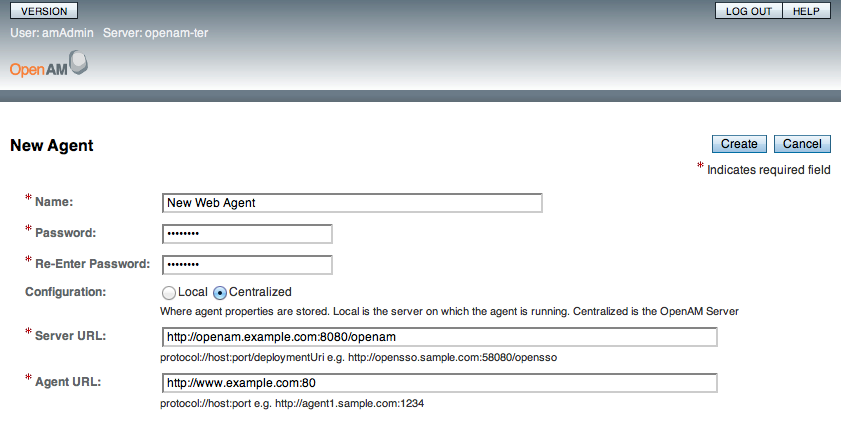

Copyright © 2011-2012 ForgeRock AS
Last updated: April 14, 2012
Guide to configuring and using OpenAM features. OpenAM provides open source Authentication, Authorization, Entitlement and Federation software.
- Preface
- 1. Administration Interfaces & Tools
- 2. Defining Authentication Services
- 3. Defining Authorization Policies
- 4. Defining Entitlements
- 5. Configuring Realms
- 6. Configuring Policy Agent Profiles
- 7. Configuring Password Reset
- 8. Configuring Cross-Domain Single Sign On
- 9. Managing SAML 2.0 SSO
- 10. Backing Up and Restoring OpenAM Configurations
- 11. Managing Certificates
- 12. Monitoring OpenAM Services
- 13. Tuning OpenAM
- 14. Changing Host Names
- 15. Troubleshooting
- Index
This guide shows you how to configure, maintain, and troubleshoot OpenAM for single sign on and authorization, password reset, account lockout, cross-domain single sign on, and federation.
This guide is written for access management designers and administrators who build, deploy, and maintain OpenAM services for their organizations. This guide covers the tasks you might repeat throughout the life cycle of an OpenAM release used in your organization.
This guide starts by introducing the OpenAM administrative interfaces and tools, and by showing how to manage OpenAM services. This guide continues by showing how to configure the principle features of OpenAM. It then demonstrates how to backup, restore, monitor, tune, and troubleshoot, OpenAM services.
You do not need to be an OpenAM wizard to learn something from this guide, though a background in access management and maintaining web application software can help. You do need some background in managing services on your operating systems and in your application servers. You can nevertheless get started with this guide, and then learn more as you go along.
Some items are formatted differently from other text, like
filenames, commands, and
literal values.
In many cases, sections pertaining to UNIX, GNU/Linux, Mac OS X, BSD,
and so forth are marked (UNIX). Sections pertaining to Microsoft Windows
might be marked (Windows). To avoid repetition, however, file system
directory names are often given only in UNIX format as in
/path/to/OpenAM, even if the text applies to
C:\path\to\OpenAM as well.
Core documentation, such as what you are now reading, aims to be technically accurate and complete with respect to the software documented. Core documentation therefore follows a three-phase review process designed to eliminate errors. The review process should slow authors down enough that documentation you get with a stable release has had time to bake fully.
Fully baked core documentation is available at docs.forgerock.org.
The OpenAM Wiki regularly brings you more, fresh content. In addition, you are welcome to sign up and then edit the Wiki if you notice an error, or if you have something to share.
After you sign up at ForgeRock, you can also login to the Wiki and the issue database to follow what is happening with the project.
If you have questions regarding OpenAM which are not answered by the documentation, there is a mailing list which can be found at https://lists.forgerock.org/mailman/listinfo/openam where you are likely to find an answer.
The Wiki has information on how to check out OpenAM source code. There is also a mailing list for OpenAM development which can be found at https://lists.forgerock.org/mailman/listinfo/openam-dev Should you want to contribute a patch, test, or feature, or want to author part of the core documentation, first have a look on the ForgeRock site at how to get involved.
This chapter provides a brief introduction to the web-based OpenAM console. It also lists and describes each CLI administration tool.
After you install OpenAM, login to the web-based console as OpenAM
Administrator, amadmin with the password you set during
installation. The URL to visit in your browser is something like
http://openam.example.com:8080/openam/console, depending
on the protocol (HTTP or HTTPS), host name (in this case
openam.example.com), port number on which the web
containers listens (in this case 8080), and deployment URI (in this case
/openam).
[D]
The OpenAM Administrator has access rights to perform all
administrative operations. Therefore, when you login as
amadmin, you see the complete OpenAM console. In the
background, OpenAM has set a cookie in your browser that lasts until the
session expires, you logout, or you close your browser[1].
When you login to the OpenAM console as an end user, a user without any access to perform administrative operations, then instead of the OpenAM console, you see a page to view and update your account information.

If you configure OpenAM to grant administrative capabilities to another user, then that user also sees the console after login. For instance, the OpenAM Administrator granted Kirsten Vaughan privileges to administer the OpenAM Top Level Realm. (This can be done through the console under Access Control > / (Top Level Realm) > Privileges. Kirsten has authorization to read and write policy properties and configured policy agent properties.) When Kirsten logs in, she sees only part of the console capabilities.[2]
[D]
The script tools in the following list have .bat
versions for use on Microsoft Windows.
You can install the following OpenAM command-line tools.
- agentadmin
This tool lets you manage OpenAM policy agent installations.
Unpack this tool as part of policy agent installation.
- ampassword
This tool lets you change OpenAM Administrator passwords, and display encrypted password values.
Install this from
tools/ssoAdminTools.zip.- amverifyarchive
This tool checks log archives for tampering.
Install this from
tools/ssoAdminTools.zip.- configurator.jar
This executable .jar file lets you perform silent installation, configuring a deployed OpenAM server by applying settings from a configuration file, as in java -jar configurator.jar -f config.file. The .jar is provided with a sample configuration file.
The
config.file, based on thesampleconfigurationfile provided with the tool, must be adapted for your environment.Install this from
tools/ssoConfiguratorTools.zip.- ssoadm
This tool provides a rich command-line interface for configuration of OpenAM core services.
In a test environment you can activate
ssoadm.jspto access the same functionality in your browser. To access many features of the ssoadm command through the OpenAM console, visit thessoadm.jsppage in your browser after activating it when you installed OpenAM, for examplehttp://openam.example.com:8080/openam/ssoadm.jsp.Install this from
tools/ssoAdminTools.zip.- ssodtool.sh
This extensible diagnostic tool runs in GUI mode by default, but can also be run in command-line mode. The tool helps you check configuration settings and verify configuration integrity, test connectivity, and generate test reports.
Install this from
tools/ssoDiagnosticTools.zip.
The commands access the OpenAM configuration over HTTP (or HTTPS). When using the administration commands in a site configuration, the commands access the configuration through the front end load balancer.
Sometimes a command cannot access the load balancer, because:
Network routing restrictions prevent the tool from accessing the load balancer.
For testing purposes, the load balancer uses a self-signed certificate for HTTPS, and the tool does not have a way of trusting the self-signed certificate.
The load balancer is temporarily unavailable.
In such cases you can work around the problem by adding an option such as the following to the java command in the tool's script. (This all belongs on one line with no spaces in the script.)
In the above example the load balancer is on the lb
host, https://lb.example.com:443/openam is the site name,
and the additional OpenAM servers in the site follow with
= as the separator character.
You can use the ssoadm.jsp page to access a large subset of the configuration capabilities of the ssoadm command. Yet, ssoadm.jsp is disabled by default to prevent potential misuse.
Login as OpenAM administrator,
amadmin.Click Configuration > Servers and Sites tabs, then in the Servers list, click the link to configure your server.
Click the Advanced tab to display the Advanced Properties table, and then click Add to include the property that enables ssoadm.jsp before saving your change.
- Property Name
ssoadm.disabled
- Property Value
false
Browse to ssoadm.jsp to check that it is enabled.
The URL is something like
http://openam.example.com:8080/openam/ssoadm.jsp, depending on your installation.
An authentication service confirms the identity of a user or a client application.
This chapter describes how to configure authentication in OpenAM.
Access management is about controlling access to resources. OpenAM plays a role similar to border control at an international airport. Instead of having each and every airline company deal with access to each destination, all airlines redirects passengers to border control. Border control then determines who each passenger is according to passport credentials. Border control also checks whether the identified passenger is authorized to fly to the destination corresponding to the ticket, perhaps based on visa credentials. Then, at the departure gate, an agent enforces the authorization from border control, allowing the passenger to board the plane as long as the passenger has not gotten lost, or tried to board the wrong plane, or swapped tickets with someone else. Thus, border control handles access management at the airport.
OpenAM is most frequently used to protect web-accessible resources. Users browse to a protected web application page. Rather than have the web application manage user access itself, an agent in the server where the web application runs redirects the user to OpenAM for access management. OpenAM determines who the user is, and whether the user has the right to access the protected page. OpenAM then redirects the user back to the protected page, this time with authorization that the agent can check. The agent enforces the authorization from OpenAM, letting through the user with the right to access the page. Thus, OpenAM handles access management to web resources.
Notice that OpenAM basically needs to determine two things for access management: who the user is; whether the user has access to the protected page. Authentication is the term meaning the determination of who a user is. This chapter covers how to set up the authentication process. Authorization is the term meaning determination whether a user has access to a protected resource. Authorization is covered later.
To process authentication, OpenAM obtains credentials from the user or client application authenticating, based on the mechanisms defined to validate credentials and complete the authentication. In other words, how a user authenticates differs depending on the situation. Passengers for international flights authenticate with passports and visas. Passengers for domestic flights might authenticate with an identity card or a driver's license. Customers withdrawing cash from an ATM authenticate with a card and a PIN.
As the authentication process depends on the situation, OpenAM allows you to configure authentication processes and then configure how they are applied depending on the situation. OpenAM uses authentication modules to handle different ways of authenticating. Basically, each authentication module handles one way of obtaining and verifying credentials. When a single set of credentials is not enough, or alternate sets of credentials can be used, you can choose to chain modules together. In OpenAM, this is called authentication chaining. When you chain authentication modules, you can configure each module as required, optional, requisite, or sufficient.[3]
When a required module fails, the rest of the chain is processed, but the authentication fails.
A required module might be used for login with email and password, but then fall through to another module to handle new users who have not yet signed up.
When an optional module fails, authentication continues.
An optional module might be used to permit a higher level of access if the user can present a X.509 certificate for example.
When a requisite module fails, authentication fails and authentication processing stops.
A requisite module might be used with exclusive SSO.
When a sufficient succeeds, authentication is successful and later modules in the chain are skipped.
You could set Windows Desktop SSO as sufficient, so authenticated Windows users are let through, whereas web users have to traverse another authentication module such as one requiring an email address and a password.
With OpenAM, you can further set authentication levels per module, with higher levels being used typically to allow access to more restricted resources. The OpenAM SPIs also let you develop your own authentication modules, and post-authentication plugins. Client applications can specify the authentication level, module, user, and authentication service to use among those you have configured. As described later in this guide, you can use realms to organize which authentication process applies for different applications or different domains, perhaps managed by different people.
OpenAM leaves the authentication process flexible so that you can adapt how it works to your situation. Although at first the number of choices can seem daunting, now that you understand the basic process, you begin to see how choosing authentication modules and arranging them in authentication chains lets you use OpenAM to protect access to a wide range of applications used in your organization.
The OpenAM console provides two places where the OpenAM administrator can configure authentication modules.
Under Configuration > Authentication, you configure available modules for use throughout OpenAM. What you set up here is inherited for use elsewhere.
Under Access Control >
Realm Name> Authentication, you configure modules for your realm. What you set up at this level inherits from the global configuration, but you can override what is inherited. You can also add your own modules if necessary.
Individual module configuration depends completely on what the module does. Configuring the module that connects to Active Directory over LDAP to authenticate a user using user name and password requires connection information and details about where to search for users, whereas configuring the HOTP module for one-time password authentication requires information about the password length and the mail server or SMS gateway for sending the password during authentication.
Tip
One parameter that all modules have is Authentication Level. You change Authentication Level from 0 to a positive integer in order to indicate those modules are seen as more secure. Then you configure authorization to require a minimum authentication level required to access protected resources.
OpenAM connects to Active Directory over Lightweight Directory Access Protocol (LDAP). OpenAM provides separate Active Directory and LDAP modules to make it easier for you to use both Active Directory and also another directory service in an authentication chain.
ssoadm service name:
sunAMAuthADService
- Primary Active Directory Server, Secondary Active Directory Server
The default port for LDAP is 389. If you are connecting to Active Directory over SSL, the default port for LDAP/SSL is 636.
To allow users to change passwords through OpenAM, Active Directory requires that you connect over SSL.
If you want to use SSL or TLS for security, then scroll down to enable SSL/TLS Access to Active Directory Server. Make sure that OpenAM can trust the Active Directory certificate when using this option.
OpenAM first attempts to contact primary servers. If no primary server is available, then OpenAM attempts to contact secondaries.
When authenticating users from a directory server that is remote from OpenAM, set both the primary and secondary server values.
ssoadm attributes: primary is
iplanet-am-auth-ldap-server; secondary isiplanet-am-auth-ldap-server2- DN to Start User Search
LDAP data is organized hierarchically, a bit like a file system on Windows or UNIX. More specific DNs likely result in better performance. When configuring the module for a particular part of the organization, you can perhaps start searches from a specific organizational unit such as
OU=sales,DC=example,DC=com.If multiple entries exist with identical search attribute values, make this value specific enough to return only one entry.
ssoadm attribute:
iplanet-am-auth-ldap-base-dn- Bind User DN, Bind User Password
If OpenAM stores attributes in Active Directory, for example to manage account lockout, or if Active Directory requires that OpenAM authenticate in order to read users' attributes, then OpenAM needs the DN and password to authenticate to Active Directory.
The default is
amldapuser. If the administrator authentication chain (default:ldapService) has been configured to include only the Active Directory module, then make sure that the password is correct before you logout. If it is incorrect, you will be locked out. If you do get locked out, you can login with the super user DN, which by default isuid=amAdmin,ou=People,, whereOpenAM-deploy-baseOpenAM-deploy-basewas set during OpenAM configuration.ssoadm attributes:
iplanet-am-auth-ldap-bind-dnandiplanet-am-auth-ldap-bind-passwd- Attributes, Filter, Scope
LDAP searches for user entries return entries with attribute values matching the filter you provide. For example if you search under
CN=Users,DC=example,DC=comwith a filter"(MAIL=bjensen@example.com)", then the directory returns the entry that hasMAIL=bjensen@example.com. In this example the attribute used to search for a user ismail. Multiple attribute values mean the user can authenticate with any one of the values. For example, if you have bothuidandmail, then Barbara Jensen can authenticate with eitherbjensenorbjensen@example.com.Should you require a more complex filter for performance, you add that to the User Search Filter text box. For example, if you search on
mailand add User Search Filter(objectClass=inetOrgPerson), then OpenAM uses the resulting search filter(&(mail=, whereaddress)(objectClass=inetOrgPerson))addressis the mail address provided by the user.Scope OBJECT means search only the entry specified as the DN to Start User Search, whereas ONELEVEL means search only the entries that are directly children of that object. SUBTREE means search the entry specified and every entry under it.
ssoadm attributes:
iplanet-am-auth-ldap-user-naming-attribute,iplanet-am-auth-ldap-user-search-attributes,iplanet-am-auth-ldap-search-filter, andiplanet-am-auth-ldap-search-scope- SSL Access to Active Directory Server
If you enable SSL, OpenAM must be able to trust Active Directory certificates, either because the Active Directory certificates were signed by a CA whose certificate is already included in the trust store used by the container where OpenAM runs, or because you imported the certificates into the trust store.
ssoadm attribute:
iplanet-am-auth-ldap-ssl-enabled- Return User DN to Authenticate
When enabled, and OpenAM uses Active Directory as the user store, the module returns the DN rather than the User ID, so the bind for authentication can be completed without a search to retrieve the DN.
ssoadm attribute:
iplanet-am-auth-ldap-return-user-dn- Active Directory Server Check Interval
Used by the failover mechanism. Specifies the number of minutes between checks whether a previously unavailable Active Directory has become available again.
ssoadm attribute:
iplanet-am-auth-ldap-server-check- User Creation Attributes
This list lets you map (external) attribute names from Active Directory to (internal) attribute names used by OpenAM.
ssoadm attribute:
iplanet-am-ldap-user-creation-attr-list- Authentication Level
ssoadm attribute:
sunAMAuthADAuthLevel
The Adaptive Risk module is designed to assess risk during authentication so that OpenAM can determine whether to require the user to complete further authentication steps. After configuring the Adaptive Risk module, insert it in your authentication chain with criteria set to sufficient as shown in the following example.
[D]
In the example authentication chain shown, OpenAM has users authenticate first using the LDAP module providing a user ID and password combination. Upon success, OpenAM calls the Adaptive Risk module. The Adaptive Risk module assesses the risk based on your configured parameters. If the Adaptive Risk module calculates a total score below the threshold you set, the module returns success, and OpenAM finishes authentication processing without requiring further credentials. Otherwise the Adaptive Risk module evaluates the score to be above the risk threshold, and returns failure. OpenAM then calls the HOTP module, requiring the user to authenticate with a one-time password delivered to her by email or by SMS to her mobile phone.
When you configure the Adaptive Risk module to save cookies and
profile attributes after successful authentication, OpenAM performs the
save as post-authentication processing, only after the entire authentication
chain returns success. You must set up OpenAM to save the data as part of
post-authentication processing by editing the authentication chain to add
org.forgerock.openam.authentication.modules.adaptive.Adaptive
to the list of post authentication plugins.
ssoadm service name:
sunAMAuthAdaptiveService
- Authentication Level
ssoadm attribute:
openam-auth-adaptive-auth-level- Adaptive Threshold
Risk threshold score. If the sum of the Scores is greater than the threshold, the Adaptive Risk module returns failure.
ssoadm attribute:
openam-auth-adaptive-auth-threshold- Failed Authentication Check
When enabled, check the user profile for authentication failures since the last successful login. This check therefore requires OpenAM to have access to the user profile, and Account Lockout to be enabled (otherwise OpenAM does not record authentication failures).
ssoadm attribute:
openam-auth-adaptive-failure-check- Score
Value to add to the total score if the user fails the Failed Authentication Check.
ssoadm attribute:
openam-auth-adaptive-failure-score- Invert Result
When selected, add the Score to the total score if the user passes the Failed Authentication Check.
ssoadm attribute:
openam-auth-adaptive-failure-invert
- IP Range Check
When enabled, check whether the client IP address is within one of the specified IP Ranges.
ssoadm attribute:
openam-auth-adaptive-ip-range-check- IP Range
Specifies a list of IP ranges either in CIDR-style notation (
x.x.x.x/YYx.x.x.x:y.y.y.yx.x.x.xtoy.y.y.y). Currently supports only IPv4.ssoadm attribute:
openam-auth-adaptive-ip-range-range- Score
Value to add to the total score if the user fails the IP Range Check.
ssoadm attribute:
openam-auth-adaptive-ip-range-score- Invert Result
When selected, add the Score to the total score if the user passes the IP Range Check.
ssoadm attribute:
openam-auth-adaptive-ip-range-invert
- IP History Check
When enabled, check whether the client IP address matches one of the known values stored on the profile attribute you specify. This check therefore requires that OpenAM have access to the user profile.
ssoadm attribute:
openam-auth-adaptive-ip-history-check- Count to Save
Specifies how many IP address values to retain on the profile attribute you specify. Default: 5
ssoadm attribute:
openam-auth-ip-adaptive-history-count- Profile Attribute Name
Name of the user profile attribute on which to store known IP addresses. Default:
iphistoryssoadm attribute:
openam-auth-adaptive-ip-history-attribute- Save Successful IP Address
When enabled, save new client IP addresses to the known IP address list following successful authentication.
ssoadm attribute:
openam-auth-adaptive-ip-history-save- Score
Value to add to the total score if the user fails the IP History Check.
ssoadm attribute:
openam-auth-adaptive-ip-history-score- Invert Result
When selected, add the Score to the total score if the user passes the IP History Check.
ssoadm attribute:
openam-auth-adaptive-ip-history-invert
- Cookie Value Check
When enabled, check whether the client browser request has the specified cookie and optional cookie value.
ssoadm attribute:
openam-auth-adaptive-known-cookie-check- Cookie Name
Specifies the name of the cookie for which OpenAM checks when you enable the Cookie Value Check.
ssoadm attribute:
openam-auth-adaptive-known-cookie-name- Cookie Value
Specifies the value of the cookie for which OpenAM checks. If no value is specified, OpenAM does not check the cookie value.
ssoadm attribute:
openam-auth-adaptive-known-cookie-value- Save Cookie Value on Successful Login
When enabled, save the cookie as specified in the client's browser following successful authentication. If no Cookie Value is specified, the value is set to 1.
ssoadm attribute:
openam-auth-adaptive-known-cookie-save- Score
Value to add to the total score if user passes the Cookie Value Check.
ssoadm attribute:
openam-auth-adaptive-known-cookie-score- Invert Result
When selected, add the Score to the total score if the user passes the Cookie Value Check.
ssoadm attribute:
openam-auth-adaptive-known-cookie-invert
- Device Registration Cookie Check
When enabled, check whether the client browser request has the specified cookie with the correct device registration identifier as the value.
ssoadm attribute:
openam-auth-adaptive-device-cookie-check- Cookie Name
Specifies the name of the cookie for the Device Registration Cookie Check. Default: Device
ssoadm attribute:
openam-auth-adaptive-device-cookie-name- Save Device Registration on Successful Login
When enabled, save the specified cookie with a hashed device identifier value in the client's browser following successful authentication.
ssoadm attribute:
openam-auth-adaptive-device-cookie-save- Score
Value to add to the total score if the user fails the Device Registration Cookie Check.
ssoadm attribute:
openam-auth-adaptive-device-cookie-score- Invert Result
When selected, add the Score to the total score if the user passes the Device Registration Cookie Check.
ssoadm attribute:
openam-auth-adaptive-device-cookie-invert
- Time Since Last Login Check
When enabled, check whether the client browser request has the specified cookie that holds the encrypted last login time, and check that the last login time is more recent than a maximum number of days you specify.
ssoadm attribute:
openam-auth-adaptive-time-since-last-login-check- Cookie Name
Specifies the name of the cookie holding the encrypted last login time value.
ssoadm attribute:
openam-auth-adaptive-time-since-last-login-cookie-name- Max Time Since Last Login
Specifies a threshold age of the last login time in days. If the client's last login time is more recent than the number of days specified, then the client successfully passes the check.
ssoadm attribute:
openam-auth-adaptive-time-since-last-login-value- Save Time of Successful Login
When enabled, save the specified cookie with the current time encrypted as the last login value in the client's browser following successful authentication.
ssoadm attribute:
openam-auth-adaptive-time-since-last-login-save- Score
Value to add to the total score if the user fails the Time Since Last Login Check.
ssoadm attribute:
openam-auth-adaptive-time-since-last-login-score- Invert Result
When selected, add the Score to the total score if the user passes the Time Since Last Login Check.
ssoadm attribute:
openam-auth-adaptive-time-since-last-login-invert
- Profile Risk Attribute Check
When enabled, check whether the user profile contains the specified attribute and value.
ssoadm attribute:
openam-auth-adaptive-risk-attribute-check- Attribute Name
Specifies the attribute to check on the user profile for the specified value.
ssoadm attribute:
openam-auth-adaptive-risk-attribute-name- Attribute Value
Specifies the value to match on the profile attribute. If the attribute is multi-valued, a single match is sufficient to pass the check.
ssoadm attribute:
openam-auth-adaptive-risk-attribute-value- Score
Value to add to the total score if the user fails the Profile Risk Attribute Check.
ssoadm attribute:
openam-auth-adaptive-risk-attribute-score- Invert Result
When selected, add the Score to the total score if the user passes the Profile Risk Attribute Check.
ssoadm attribute:
openam-auth-adaptive-risk-attribute-invert
- Geolocation Country Code Check
When enabled, check whether the client IP address location matches a country specified in the Valid Country Codes list.
ssoadm attribute:
forgerock-am-auth-adaptive-geo-location-check- Geolocation Database location
Path to GeoIP data file used to convert IP addresses to country locations. Use the binary .dat file format, rather than .csv.
ssoadm attribute:
openam-auth-adaptive-geo-location-database- Valid Country Codes
Specifies the list of country codes to match.
ssoadm attribute:
openam-auth-adaptive-geo-location-values. Use|to separate multiple values.- Score
Value to add to the total score if the user fails the Geolocation Country Code Check.
ssoadm attribute:
openam-auth-adaptive-geo-location-score- Invert Result
When selected, add the Score to the total score if the user passes the Geolocation Country Code Check.
ssoadm attribute:
openam-auth-adaptive-geo-location-invert
- Request Header Check
When enabled, check whether the client browser request has the specified header with the correct value.
ssoadm attribute:
openam-auth-adaptive-req-header-check- Request Header Name
Specifies the name of the request header for the Request Header Check.
ssoadm attribute:
openam-auth-adaptive-req-header-name- Request Header Value
Specifies the value of the request header for the Request Header Check.
ssoadm attribute:
openam-auth-adaptive-req-header-value- Score
Value to add to the total score if the user fails the Request Header Check.
ssoadm attribute:
openam-auth-adaptive-req-header-score- Invert Result
When selected, add the Score to the total score if the user passes the Request Header Check.
ssoadm attribute:
openam-auth-adaptive-req-header-invert
This module lets you track and manage anonymous users, perhaps forcing further authentication later when a user moves to access resources that require more protection.
ssoadm service name:
iPlanetAMAuthAnonymousService
- Valid Anonymous Users
Specifies valid anonymous user IDs in addition to the default.
ssoadm attribute:
iplanet-am-auth-anonymous-users-list- Default Anonymous User Name
Specifies the user ID assigned by the module if the Valid Anonymous Users list is empty. Default:
anonymousssoadm attribute:
iplanet-am-auth-anonymous-default-user-name- Case Sensitive User IDs
Whether case matters for anonymous user IDs.
ssoadm attribute:
iplanet-am-auth-anonymous-case-sensitive- Authentication Level
ssoadm attribute:
iplanet-am-auth-anonymous-auth-level
X.509 digital certificates can enable secure authentication without the need for user names and passwords or other credentials. Certificate authentication can be handy to manage authentication by applications. If all certificates are signed by a recognized Certficate Authority (CA), then you might get away without additional configuration. If you need to look up public keys of OpenAM clients, this module can also look up public keys in an LDAP directory server.
When you store certificates and certificate revocation lists (CRL) in an LDAP directory service, you must configure both how to access the directory service and also how to look up the certificates and CRLs, based on the fields in the certificates that OpenAM clients present to authenticate.
Access to the LDAP server and how to search for users is similar
to LDAP module configuration as in Section 2.2.11, “Hints For the LDAP Authentication Module”.
The primary difference is that, unlike for LDAP configuration, OpenAM
retrieves the user identifier from a field in the certificate that the
client application presents, then uses that identifier to search for the
LDAP directory entry that holds the certificate, which should match the
certificate presented. For example, if the Subject field of a typical
certificate has a DN C=FR, O=Example Corp, CN=Barbara
Jensen, and Barbara Jensen's entry in the directory has
cn=Barbara Jensen, then you can use CN=Barbara
Jensen from the Subject DN to search for the entry with
cn=Barbara Jensen in the directory.
ssoadm service name:
iPlanetAMAuthCertService
- Match Certificate in LDAP
When enabled, OpenAM searches for a match for the user's certificate in the LDAP directory. If a match is found and not revoked according to a CRL or OCSP validation, then authentication succeeds.
ssoadm attribute:
iplanet-am-auth-cert-check-cert-in-ldap- Subject DN Attribute Used to Search LDAP for Certificates
Indicates which attribute and value in the certificate Subject DN is used to find the LDAP entry holding the certificate.
ssoadm attribute:
iplanet-am-auth-cert-attr-check-ldap- Match Certificate to CRL
When enabled, OpenAM checks whether the certificate has been revoked according to a CRL in the LDAP directory.
ssoadm attribute:
iplanet-am-auth-cert-check-crl- Issuer DN Attribute Used to Search LDAP for CRLs
Indicates which attribute and value in the certificate Issuer DN is used to find the CRL in the LDAP directory.
ssoadm attribute:
iplanet-am-auth-cert-attr-check-crl- HTTP Parameters for CRL Update
Your certificate authority should provide the URL to use here, from which OpenAM can get CRL updates.
ssoadm attribute:
iplanet-am-auth-cert-param-get-crl- Match CA Certificate to CRL
When enabled, OpenAM checks the CRL against the CA certificate to ensure it has not been compromised.
ssoadm attribute:
sunAMValidateCACert- OCSP Validation
Enable this to use Online Certificate Status Protocol (OCSP) instead of CRLs to check certificates' revocation status.
If you enable this, you also must configure OSCP for OpenAM under Configuration > Server and Sites > Default Server Settings, or Configuration > Server and Sites >
Server Name> Security.ssoadm attribute:
iplanet-am-auth-cert-check-ocsp- LDAP Server Where Certificates are Stored
The default port for LDAP is 389. If you are connecting to the directory service over SSL, the default port for LDAP/SSL is 636. When a secure connection, scroll down to enable Use SSL/TLS for LDAP Access.
ssoadm attribute:
iplanet-am-auth-cert-ldap-provider-url- LDAP Search Start DN
Valid base DN for the LDAP search, such as
dc=example,dc=com.ssoadm attribute:
iplanet-am-auth-cert-start-search-loc- LDAP Server Principal User, LDAP Server Principal Password
If OpenAM stores attributes in the LDAP directory, for example to manage account lockout, or if the LDAP directory requires that OpenAM authenticate in order to read users' attributes, then OpenAM needs the DN and password to authenticate to the LDAP directory.
ssoadm attributes:
iplanet-am-auth-cert-principal-user, andiplanet-am-auth-cert-principal-passwd- Use SSL for LDAP Access
If you use SSL for LDAP access, OpenAM must be able to trust the LDAP server certificate.
ssoadm attribute:
iplanet-am-auth-cert-use-ssl- Certificate Field Used to Access User Profile
If the user profile is in a different entry from the user certificate, then this can be different from subject DN attribute used to find the entry with the certificate. When you select other, provide an attribute name in the Other Certificate Field Used to Access User Profile text box.
ssoadm attribute:
iplanet-am-auth-cert-user-profile-mapper- SubjectAltNameExt Value Type to Access User Profile
Use this if you want to look up the user profile from an RFC 822 style name, or a User Principal Name as used in Active Directory.
ssoadm attribute:
iplanet-am-auth-cert-user-profile-mapper-ext- Trusted Remote Hosts
Hosts trusted to send certificates to OpenAM, such as load balancers doing SSL termination, or OpenAM distributed authentication UI instances.
ssoadm attribute:
iplanet-am-auth-cert-gw-cert-auth-enabled- HTTP Header Name for Client Certificate
If you configure trusted hosts, specify the HTTP header name for the client certificate inserted by the trusted host.
ssoadm attribute:
sunAMHttpParamName- Authentication Level
ssoadm attribute:
iplanet-am-auth-cert-auth-level
The Core module is a sort of meta-module.
The Core module lets you set up the list of modules available, and specify what types of client applications can authenticate with which modules. It also lets you configure connection pools for access to directory servers, and whether to retain objects used during authentication for use during logout. Furthermore, the Core module lets you set defaults used when configuring authentication in a particular realm.
ssoadm service name:
iPlanetAMAuthService
- Pluggable Authentication Module Classes
Add class names for custom authentication modules to this list.
ssoadm attribute:
iplanet-am-auth-authenticators- Supported Authentication Modules for Clients
This list serves to limit what types of authentication modules can be used with specify types of client applications. The client type is an arbitary string, such as the default
genericHTML, which is set by OpenAM when the Client Detection Service is enabled.ssoadm attribute:
iplanet-am-auth-supported-auth-modules- LDAP Connection Pool Size, Default LDAP Connection Pool Size
Sets a minimum and maximum number of LDAP connections in the pool for connecting to a directory server. When tuning for production, start with
10:65(10 minimum, 65 maximum). Explicit settings for specific servers override the default.This attribute is for LDAP and Membership authentication services only.
This connection pool is different than the SDK connection pool configured in
serverconfig.xml.ssoadm attributes:
iplanet-am-auth-ldap-connection-pool-size, andiplanet-am-auth-ldap-connection-pool-default-size- Remote Auth Security
Require the authenticating application to send its SSOToken. This allows the Authentication Service to obtain the username and password associated with the application.
ssoadm attribute:
sunRemoteAuthSecurityEnabled- Keep Post Process Objects for Logout Processing, Keep Authentication Module Objects for Logout Processing
When enabled, retain objects used to process authentication or post authentication operations in the user session until the user logs out.
ssoadm attributes:
sunAMAuthKeepPostProcessInstances, andsunAMAuthKeepAuthModuleIntances- User Profile
Whether a user profile needs to exist in the user data store, or should be created on successful authentication.
- Dynamic
Specifies that on successful authentication the Authentication Service creates a user profile if one does not already exist. OpenAM then issues the SSOToken. OpenAM creates the user profile in the user data store configured for the realm.
- Dynamic with User Alias
Specifies that on successful authentication the Authentication Service creates a user profile that contains the User Alias List attribute which defines one or more aliases that for mapping a user's multiple profiles.
- Ignored
Specifies that a user profile is not required for the Authentication Service to issue an SSOToken after a successful authentication.
- Required
Specifies that on successful authentication the user must have a user profile in the user data store configured for the realm in order for the Authentication Service to issue an SSOToken.
ssoadm attribute:
iplanet-am-auth-dynamic-profile-creation- Administrator Authentication Configuration
Defines the authentication chain used by administrators when the process needs to be different from the authentication chain defined for end users. The authentication chain must first be created before it is displayed as an option in this attribute's drop down list.
ssoadm attribute:
iplanet-am-auth-admin-auth-module- User Profile Dynamic Creation Default Roles
Specifies the Distinguished Name (DN) of a role to be assigned to a new user whose profile is created when either of the Dynamic options is selected under the User Profile attribute. There are no default values. The role specified must be within the realm for which the authentication process is configured.
This role can be either an OpenAM or Sun DSEE role, but it cannot be a filtered role. If you wish to automatically assign specific services to the user, you have to configure the Required Services attribute in the User Profile.
ssoadm attribute:
iplanet-am-auth-default-role- Persistent Cookie Mode
Determines whether users can return to their authenticated session after restarting the browser. When enabled, the persistent cookie can be used to reauthenticate until the persistent cookie expires (as specified by the value of the Persistent Cookie Maximum Time attribute), or until the user explicitly logs out. By default, the Authentication Service uses only memory cookies (expires when the browser is closed).
The client must explicitly request a persistent cookie by adding
iPSPCookie=yesas a parameter to the login URL. OpenAM sets aDProPCookieas described in Section 2.4, “Authenticating To OpenAM”.ssoadm attribute:
iplanet-am-auth-persistent-cookie-mode- Persistent Cookie Maximum Time
Specifies the interval after which a persistent cookie expires. The interval begins when the user's session is successfully authenticated. The maximum value is 2147483647 (in seconds, so a bit more than 68 years). The field accepts any integer value less than the maximum.
ssoadm attribute:
iplanet-am-auth-persistent-cookie-time- Alias Search Attribute Name
After a user is successfully authenticated, the user's profile is retrieved. This field specifies a second LDAP attribute to use in a search for the profile if a search using the first LDAP attribute fails to locate a matching user profile. Primarily, this attribute is used when the user identification returned from an authentication module is not the same as that specified in User Naming Attribute. For example, a RADIUS server might return abc1234 but the user name is abc. There is no default value for this attribute. The field takes any valid LDAP attribute.
ssoadm attribute:
iplanet-am-auth-alias-attr-name- Default Authentication Locale
Specifies the default language subtype to be used by the Authentication Service. The default value is
en_US.ssoadm attribute:
iplanet-am-auth-locale- Organization Authentication Configuration
Defines the default authentication chain used by the realm's users. The authentication chain must first be created before it is displayed as an option in this attribute's drop down list.
ssoadm attribute:
iplanet-am-auth-org-config- Login Failure Lockout Mode
Selecting this attribute enables a physical lockout. Physical lockout will inactivate an LDAP attribute (defined in the Lockout Attribute Name property) in the user's profile. This attribute works in conjunction with several other lockout and notification attributes.
ssoadm attribute:
iplanet-am-auth-login-failure-lockout-mode- Login Failure Lockout Count
Defines the number of attempts that a user has to authenticate, within the time interval defined in Login Failure Lockout Interval, before being locked out.
ssoadm attribute:
iplanet-am-auth-login-failure-count- Login Failure Lockout Interval
Defines the time in minutes during which failed login attempts are counted. If one failed login attempt is followed by a second failed attempt, within this defined lockout interval time, the lockout count starts, and the user is locked out if the number of attempts reaches the number defined in Login Failure Lockout Count. If an attempt within the defined lockout interval time proves successful before the number of attempts reaches the number defined in Login Failure Lockout Count, the lockout count is reset.
ssoadm attribute:
iplanet-am-auth-login-failure-duration- Email Address to Send Lockout Notification
Specify one (or more) email address(es) to which notification is sent if a user lockout occurs.
Separate multiple addresses with spaces, and append
|to addresses for recipients in non-English locales.locale|charsetssoadm attribute:
iplanet-am-auth-lockout-email-address- Warn User After N Failures
The number of authentication failures after which OpenAM displays a warning message that the user will be locked out.
ssoadm attribute:
iplanet-am-auth-lockout-warn-user- Login Failure Lockout Duration
Defines how many minutes a user must wait after a lockout before attempting to authenticate again. Entering a value greater than 0 enables memory lockout and disables physical lockout. Memory lockout means the user's account is locked in memory for the number of minutes specified. The account is unlocked after the time period has passed.
ssoadm attribute:
iplanet-am-auth-lockout-duration- Lockout Duration Multiplier
Defines a value with which to multiply the value of the Login Failure Lockout Duration attribute for each successive lockout. For example, if Login Failure Lockout Duration is set to 3 minutes, and the Lockout Duration Multiplier is set to 2, the user is locked out of the account for 6 minutes. Once the 6 minutes has elapsed, if the user again provides the wrong credentials, the lockout duration is then 12 minutes. With the Lockout Duration Multiplier, the lockout duration is incrementally increased based on the number of times the user has been locked out.
ssoadm attribute:
sunLockoutDurationMultiplier- Lockout Attribute Name
Defines the LDAP attribute used for physical lockout. The default value is
inetuserstatus, although the field in the OpenAM console is empty. The Lockout Attribute Value field must also contain an appropriate value.ssoadm attribute:
iplanet-am-auth-lockout-attribute-name- Lockout Attribute Value
Specifies the action to take on the attribute defined in Lockout Attribute Name. The default value is
inactive, although the field in the OpenAM console is empty. The Lockout Attribute Name field must also contain an appropriate value.ssoadm attribute:
iplanet-am-auth-lockout-attribute-value- Invalid Attempts Data Attribute Name
Specifies the LDAP attribute used to hold the number of failed authentication attempts towards Login Failure Lockout Count.
ssoadm attribute:
sunAMAuthInvalidAttemptsDataAttrName- Default Success Login URL
Accepts a list of values that specifies where users are directed after successful authentication. The format of this attribute is
client-type|URL/openam/console. Values that do not specify HTTP have that appended to the deployment URI.ssoadm attribute:
iplanet-am-auth-login-success-url- Default Failure Login URL
Accepts a list of values that specifies where users are directed after authentication has failed. The format of this attribute is
client-type|URLssoadm attribute:
iplanet-am-auth-login-failure-url- Authentication Post Processing Classes
Specifies one or more Java classes used to customize post authentication processes for successful or unsuccessful logins. The Java class must implement the
com.sun.identity.authentication.spi.AMPostAuthProcessInterfaceOpenAM interface.A .jar containing the post processing class belongs in the
WEB-INF/libdirectory of the deployed OpenAM instance. If you do not build a .jar, add the class files underWEB-INF/classes. For deployment, add the .jar or classes into a custom OpenAM .war file.ssoadm attribute:
iplanet-am-auth-post-login-process-class- Generate UserID Mode
When enabled, the Membership module generates a list of alternate user identifiers if the one entered by a user during the self-registration process is not valid or already exists. The user identifiers are generated by the class specified in the Pluggable User Name Generator Class property.
ssoadm attribute:
iplanet-am-auth-username-generator-enabled- Pluggable User Name Generator Class
Specifies the name of the class used to generate alternate user identifiers when Generate UserID Mode is enabled. The default value is
com.sun.identity.authentication.spi.DefaultUserIDGenerator.ssoadm attribute:
iplanet-am-auth-username-generator-class- Identity Types
Lists the type or types of identities for which OpenAM searches.
ssoadm attribute:
sunAMIdentityType- Pluggable User Status Event Classes
Specifies one or more Java classes used to provide a callback mechanism for user status changes during the authentication process. The Java class must implement the
com.sun.identity.authentication.spi.AMAuthCallBackOpenAM interface. OpenAM supports account lockout and password changes. OpenAM supports password changes through the LDAP authentication module, and so the feature is only available for the LDAP module.A .jar containing the user status event class belongs in the
WEB-INF/libdirectory of the deployed OpenAM instance. If you do not build a .jar, add the class files underWEB-INF/classes. For deployment, add the .jar or classes into a custom OpenAM .war file.ssoadm attribute:
sunAMUserStatusCallbackPlugins- Store Invalid Attempts in Data Store
Enables the storage of information regarding failed authentication attempts as the value of the Invalid Attempts Data Attribute Name in the user data store. In order to store data in this attribute, the OpenAM schema has to be loaded. Information stored includes number of invalid attempts, time of last failed attempt, lockout time and lockout duration. Storing this information in the identity repository allows it to be shared among multiple instances of OpenAM.
ssoadm attribute:
sunStoreInvalidAttemptsInDS- Module Based Authentication
Enables users to authenticate using module-based authentication. Otherwise, all attempts at authentication using the
module=login parameter result in failure.module-namessoadm attribute:
sunEnableModuleBasedAuth- User Attribute Mapping to Session Attribute
Enables the authenticating user's identity attributes (stored in the identity repository) to be set as session properties in the user's SSOToken. The value takes the format
User-Profile-Attribute|Session-Attribute-NameSession-Attribute-Nameis not specified, the value ofUser-Profile-Attributeis used. All session attributes contain theam.protectedprefix to ensure that they cannot be edited by the Client SDK.For example, if you define the user profile attribute as mail and the user's email address (available in the user session) as
user.mail, the entry for this attribute would bemail|user.mail. After a successful authentication, theSSOToken.getProperty(String)method is used to retrieve the user profile attribute set in the session. The user's email address is retrieved from the user's session using theSSOToken.getProperty("am.protected.user.mail")method call.Properties that are set in the user session using User Attribute Mapping to Session Attributes can not be modified (for example,
SSOToken.setProperty(String, String)). This results in anSSOException. Multi-value attributes, such asmemberOf, are listed as a single session variable with a|separator.ssoadm attribute:
sunAMUserAttributesSessionMapping- Valid goto URL domains
List external domains to which clients can be redirected after authentication.
ssoadm attribute:
iplanet-am-auth-valid-goto-domains- Default Authentication Level
The level set here applies when no authentication level has been specified in the Authentication Level field for a realm.
ssoadm attribute:
iplanet-am-auth-default-auth-level
The Data Store authentication module allows a login using the Identity Repository of the realm to authenticate users. Using the Data Store module removes the requirement to write an authentication plug-in module, load, and then configure the authentication module if you need to authenticate against the same data store repository. Additionally, you do not need to write a custom authentication module where flat-file authentication is needed for the corresponding repository in that realm.
Yet, the Data Store module is generic. It does not implement data store-specific capabilities such as the password policy and password reset features provided by LDAP modules. Therefore the Data Store module returns failure when such capabilities are invoked.
ssoadm service name:
sunAMAuthDataStoreService
ssoadm attributes:
amAuthDataStore, and
sunAMAuthDataStoreAuthLevel
The Federation authentication module is used by a service provider to create a user session after validating single sign-on protocol messages. This authentication module is used by the SAML, SAMLv2, ID-FF, and WS-Federation protocols.
ssoadm service name:
sunAMAuthFederationService
ssoadm attribute:
sunAMAuthFederationAuthLevel
The HMAC One-Time Password authentication module works together with the Data Store module to retrieve a user's mail address or telephone number to send a one-time password to complete authentication.
To use HOTP you set up an authentication chain with the Data Store
module as the requisite first module, and the HOTP module
as the second requisite module. When authentication
succeeds against the Data Store module, OpenAM passes the Email Address
and Telephone Number attributes from the user profile to the HOTP module.
For the HOTP module to use either attribute, the Email Address must contain
a valid email address, or the Telephone Number must contain a valid
SMS telephone number such as 18285551212@txt.att.net.
ssoadm service name:
sunAMAuthHOTPService
- SMS Gateway Implementation Class
Change this if you must customize the SMS gateway implementation. The default class sends an SMS or email, depending on the configuration.
ssoadm attribute:
sunAMAuthHOTPSMSGatewayImplClassName- SMTP Host Name
Host name of the mail server supporting Simple Message Transfer Protocol for electronic mail.
ssoadm attribute:
sunAMAuthHOTPSMTPHostName- SMTP Host Port
The default SMTP port is 25, 465 (when connecting over SSL).
ssoadm attribute:
sunAMAuthHOTPSMTPHostPort- SMTP User Name
User name for OpenAM to connect to the mail server.
ssoadm attribute:
sunAMAuthHOTPSMTPUserName- SMTP User Password
Password for OpenAM to connect to the mail server.
ssoadm attribute:
sunAMAuthHOTPSMTPUserPassword- SMTP Connection
If OpenAM connects to the mail server securely, OpenAM must be able to trust the server certificate.
ssoadm attribute:
sunAMAuthHOTPSMTPSSLEnabled- Email From Address
The
From:address when sending a one-time password by mail.ssoadm attribute:
sunAMAuthHOTPSMTPFromAddress- One Time Password Validity Length (in minutes)
One-time passwords are valid for 5 minutes after they are generated by default.
ssoadm attribute:
sunAMAuthHOTPPasswordValidityDuration- One Time Password Length (in digits)
Set the length of the one-time password to 6 or 8 digits.
ssoadm attribute:
sunAMAuthHOTPPasswordLength- One Time Password Delivery
Send the one-time password by SMS, by mail, or both.
ssoadm attribute:
sunAMAuthHOTPasswordDelivery- Authentication Level
ssoadm attribute:
sunAMAuthHOTPAuthLevel
HTTP basic authentication takes a user name and password from HTTP authentication and tries authentication against the backend module in OpenAM, depending on what you configure as the Backend Module Name.
ssoadm service name:
iPlanetAMAuthHTTPBasicService
- Backend Module Name
Specifies the module that checks the user credentials.
ssoadm attribute:
iplanet-am-auth-http-basic-module-configured- Authentication Level
ssoadm attribute:
iplanet-am-auth-httpbasic-auth-level
The Java Database Connectivity (JDBC) module lets OpenAM connect to a database such as MySQL or Oracle DB to authenticate users.
ssoadm service name:
sunAMAuthJDBCService
- Connection Type
Choose Connection pool is retrieved via JNDI to connect using the Java Naming and Diretory Interface connection pool supported by the web container in which OpenAM runs. Choose Non-persistent JDBC connection to connect directly through the JDBC driver.
ssoadm attribute:
sunAMAuthJDBCConnectionType- Connection Pool JNDI Name
When using Connection pool is retrieved via JNDI, this specifies the pool. How you configure connection pooling depends on the web container where you run OpenAM. Refer to the documentation for your web container for instructions on setting up connection pooling.
ssoadm attribute:
sunAMAuthJDBCJndiName- JDBC Driver
When using Non-persistent JDBC connection, this specifies the JDBC driver provided by the database.
The .jar containing the JDBC driver belongs in the
WEB-INF/libdirectory of the deployed OpenAM instance, and so you should add it to a custom OpenAM .war file that you deploy.ssoadm attribute:
sunAMAuthJDBCDriver- JDBC URL
When using Non-persistent JDBC connection, this specifies the URL to connect to the database.
ssoadm attribute:
sunAMAuthJDBCUrl- Connect This User to Database
Specify the user name to open the database connection.
ssoadm attribute:
sunAMAuthJDBCDbuser- Password for Connecting to Database
Specify the password for the user opening the database connection.
ssoadm attribute:
sunAMAuthJDBCDbpassword- Password Column String
Specify the database column name where passwords are stored.
ssoadm attribute:
sunAMAuthJDBCPasswordColumn- Prepared Statement
Specify the SQL query to return the password corresponding to the user to authenticate.
ssoadm attribute:
sunAMAuthJDBCStatement- Class to Transform Password Syntax
Specify the class that transforms the password retrieved to the same format as provided by the user.
The default class expects the password in clear text. Custom classes must implement the
JDBCPasswordSyntaxTransforminterface.ssoadm attribute:
sunAMAuthJDBCPasswordSyntaxTransformPlugin- Authentication Level
ssoadm attribute:
sunAMAuthJDBCAuthLevel
OpenAM connects to directory servers using Lightweight Directory Access Protocol (LDAP). To build an easy-to-manage, high performance, pure Java, open source directory service, try OpenDJ directory services.
ssoadm service name:
iPlanetAMAuthLDAPService
- Primary LDAP Server, Secondary LDAP Server
Directory servers generally use built-in data replication for high availability. Thus a directory service likely consists of a pool of replicas to which OpenAM can connect to retrieve and update directory data. You set up primary and secondary servers in case a replica is down due to maintenance or to a problem with a particular server.
Set one primary and optionally one secondary directory server for each OpenAM server. For the current OpenAM server, specify each directory server as a
host:portserver-name|host:portserver-nameis the Server Name of the OpenAM server from the list under Configuration > Servers and Sites, andhost:portidentifies the directory server.When authenticating users from a directory service that is remote from OpenAM, set both the primary and secondary server values.
The default port for LDAP is 389. If you are connecting to the directory over SSL, the default port for LDAP/SSL is 636.
If you want to use SSL or TLS for security, then scroll down to enable SSL/TLS Access to LDAP Server. Make sure that OpenAM can trust the servers' certificates when using this option.
ssoadm attributes: primary is
iplanet-am-auth-ldap-server, secondary isiplanet-am-auth-ldap-server2, andiplanet-am-auth-ldap-ssl-enabled- DN to Start User Search
LDAP data is organized hierarchically, a bit like a file system on Windows or UNIX. More specific DNs likely result in better search performance. When configuring the module for a particular part of the organization, you can perhaps start searches from a specific organizational unit such as
ou=sales,dc=example,dc=com.If multiple entries exist with identical search attribute values, make this value specific enough to return only one entry.
ssoadm attribute:
iplanet-am-auth-ldap-base-dn- Bind User DN, Bind User Password
If OpenAM stores attributes in the directory, for example to manage account lockout, or if the directory requires that OpenAM authenticate in order to read users' attributes, then OpenAM needs the DN and password to authenticate to the directory.
The default is
cn=Directory Manager. Make sure that password is correct before you logout. If it is incorrect, you will be locked out. If this should occur, you can login with the super user DN, which by default isuid=amAdmin,ou=People,, whereOpenAM-deploy-baseOpenAM-deploy-baseyou set during OpenAM configuration.ssoadm attributes:
iplanet-am-auth-ldap-bind-dn,iplanet-am-auth-ldap-bind-passwd- Attributes, Filter, Scope
LDAP searches for user entries return entries with attribute values matching the filter you provide. For example if you search under
ou=people,dc=example,dc=comwith a filter"(mail=bjensen@example.com)", then the directory returns the entry that hasmail=bjensen@example.com. In this example the attribute used to search for a user ismail. Multiple attribute values mean the user can authenticate with any one of the values. For example, if you have bothuidandmail, then Barbara Jensen can authenticate with eitherbjensenorbjensen@example.com.Should you require a more complex filter for performance, you add that to the User Search Filter text box. For example, if you search on
mailand add User Search Filter(objectClass=inetOrgPerson), then OpenAM uses the resulting search filter(&(mail=, whereaddress)(objectClass=inetOrgPerson))addressis the mail address provided by the user.Scope OBJECT means search only the entry specified as the DN to Start User Search, whereas ONELEVEL means search only the entries that are directly children of that object. SUBTREE means search the entry specified and every entry under it.
ssoadm attributes:
iplanet-am-auth-ldap-user-naming-attribute,iplanet-am-auth-ldap-user-search-attributes,iplanet-am-auth-ldap-search-filter, andiplanet-am-auth-ldap-search-scope- Return User DN to Authenticate
When enabled, and OpenAM uses the directory service as the user store, the module returns the DN rather than the rather than the User ID, so the bind for authentication can be completed without a search to retrieve the DN.
ssoadm attribute:
iplanet-am-auth-ldap-return-user-dn- LDAP Server Check Interval
Specifies the number of minutes between checks that the primary LDAP server continues to respond.
ssoadm attribute:
iplanet-am-auth-ldap-server-check- User Creation Attributes
This list lets you map (external) attribute names from Active Directory to (internal) attribute names used by OpenAM.
ssoadm attribute:
iplanet-am-ldap-user-creation-attr-list- Minimum Password Length
Specify the minimum acceptable password length.
ssoadm attribute:
iplanet-am-auth-ldap-min-password-length- Trust All Server Certificates
When enabled, blindly trust server certificates, including self-signed test certificates.
ssoadm attribute:
iplanet-am-auth-ldap-ssl-trust-all- LDAP Behera Password Policy Support
When enabled, support interoperability with servers that implement the Internet-Draft, Password Policy for LDAP Directories.
ssoadm attribute:
iplanet-am-auth-ldap-behera-password-policy-enabled- Authentication Level
ssoadm attribute:
iplanet-am-auth-ldap-auth-level
The Membership module permits self-registration for new users. You can then have OpenAM create new user profiles in the identity repository.
ssoadm service name:
iPlanetAMAuthMembershipService
- Minimum Password Length
Specify the minimum acceptable number of characters in the password provided during self-registration.
ssoadm attribute:
iplanet-am-auth-membership-min-password-length- Default User Roles
Specifies the Distinguished Name (DN) of a role to be assigned to a new user whose profile is created. There are no default values. The role specified must be within the realm for which the authentication process is configured.
This role can be either an OpenAM or Sun DSEE role, but it cannot be a filtered role. If you wish to automatically assign specific services to the user, you have to configure the Required Services attribute in the User Profile.
ssoadm attribute:
iplanet-am-auth-membership-default-roles- User Status After Registration
If you choose Inactive, then the new user has no access to services until an administrator activates the account.
ssoadm attribute:
iplanet-am-auth-membership-default-user-status- Authentication Level
ssoadm attribute:
iplanet-am-auth-membership-auth-level
The Mobile Station Integrated Services Digital Network (MSISDN) authentication module enables non-interactive authentication using a mobile subscriber ISDN associated with a terminal such as a mobile phone. The module checks the subscriber ISDN against the value found on a user's entry in an LDAP directory service.
ssoadm service name:
sunAMAuthMSISDNService
- Trusted Gateway IP Address
Specifies a list of IP addresses of trusted clients that can access MSIDSN modules. Either restrict the clients allowed to access the MSISDN module by add each IPv4 address here, or leave the list empty to allow all clients to access the module. If you specify the value
none, no clients are allowed access.ssoadm attribute:
sunAMAuthMSISDNTrustedGatewayList- MSISDN Number Argument
Specifies a list of parameter names that identify which parameters to search in the request header or cookie header for the MSISDN number. For example, if you define x-Cookie-Param, AM_NUMBER, and COOKIE-ID, the MSISDN authentication service checks those parameters for the MSISDN number.
ssoadm attribute:
sunAMAuthMSISDNParameterNameList- LDAP Server and Port
The default port for LDAP is 389. If you are connecting to the directory over SSL, the default port for LDAP/SSL is 636.
If you want to use SSL or TLS for security, then scroll down to enable SSL/TLS Access to LDAP. Make sure that OpenAM can trust the servers' certificates when using this option.
ssoadm attribute:
sunAMAuthMSISDNLdapProviderUrl- LDAP Start Search DN
Specify the DN of the entry where the search for the user's MSISDN number should start.
ssoadm attribute:
sunAMAuthMSISDNBaseDn- Attribute To Use To Search LDAP
Specify the name of the attribute in the user's profile that contains the MSISDN number to search for the user. The default is
sunIdentityMSISDNNumber.ssoadm attribute:
sunAMAuthMSISDNUserSearchAttribute- LDAP Server Principal User
If OpenAM must authenticate to the directory server in order to search, then specify the bind DN. The default is
cn=amldapuser,ou=DSAME Users,dc=example,dc=com.ssoadm attribute:
sunAMAuthMSISDNPrincipalUser- LDAP Server Principal Password
Specify the password corresponding to the bind DN.
ssoadm attribute:
sunAMAuthMSISDNPrincipalPasswd- SSL/TLS for LDAP Access
If you choose to use SSL or TLS for security, then make sure that OpenAM can trust the servers' certificates.
ssoadm attribute:
sunAMAuthMSISDNUseSsl- MSISDN Header Search Attribute
Specify the headers to use for searching the request for the MSISDN number.
Cookie Header tells OpenAM to search the cookie.
Request Header tells OpenAM to search the request header.
Request Parameter tells OpenAM to search the request parameters.
ssoadm attribute:
sunAMAuthMSISDNHeaderSearch- LDAP Attribute Used to Retrieve User Profile
Specify the LDAP attribute that is used during a search to return the user profile for MSISDN authentication service. The default is
uid.ssoadm attribute:
sunAMAuthMSISDNUserNamingAttribute- Return User DN to DataStore
Enable this option only when the OpenAM directory is the same as the directory configured for MSISDN searches. When enabled, this option allows the authentication module to return the DN instead of the User ID. OpenAM thus does not need to perform an additional search with the user ID to find the user's entry.
ssoadm attribute:
sunAMAuthMSISDNReturnUserDN- Authentication Level
ssoadm attribute:
sunAMAuthMSISDNAuthLevel
The OAuth 2.0 authentication module lets OpenAM authenticate clients of OAuth resource servers. References in this section are to the Internet-Draft The OAuth 2.0 Authorization Protocol.
ssoadm service name:
sunAMAuthOAuthService
- Client ID
OAuth
client_idas described in section 2.1 of the Internet-Draft.ssoadm attribute:
iplanet-am-auth-oauth-client-id- Client Secret
OAuth
client_secretas described in section 2.1 of the Internet-Draft.ssoadm attribute:
iplanet-am-auth-oauth-client-secret- Authentication Endpoint URL
URL to the end point handling OAuth authentication.
ssoadm attribute:
iplanet-am-auth-oauth-auth-service- Access Token Endpoint URL
URL to the end point handling access tokens as described in section 3.2 of the Internet-Draft.
ssoadm attribute:
iplanet-am-auth-oauth-token-service- User Profile Service URL
User profile URL that returns profile information in JSON format.
ssoadm attribute:
iplanet-am-auth-oauth-user-profile-service- Scope
Comma separated list of user profile attributes that the application requires.
ssoadm attribute:
iplanet-am-auth-oauth-scope- Proxy URL
URL to the
oauthproxy.jspfile, by default part of OpenAM.ssoadm attribute:
iplanet-am-auth-oauth-sso-proxy-url- Account Mapper
Class implementing account mapping. Default:
org.forgerock.openam.authentication.modules.oauth2.DefaultAccountMapperssoadm attribute:
org-forgerock-auth-oauth-account-mapper- Account Mapper Configuration
Map of OAuth Provider user account attributes used to find the local profile of the authenticated user, with values in the form
provider-attr=local-attrssoadm attribute:
org-forgerock-auth-oauth-account-mapper-configuration- Attribute Mapper
Class implementing attribute mapping. Default:
org.forgerock.openam.authentication.modules.oauth2.DefaultAttributeMapperssoadm attribute:
org-forgerock-auth-oauth-attribute-mapper- Attribute Mapper Configuration
Map of OAuth Provider user account attributes to local user profile attributes, with values in the form
provider-attr=local-attrssoadm attribute:
org-forgerock-auth-oauth-attribute-mapper-configuration- Save attributes in the session
When enabled, add the mapped attributes to the session saved.
ssoadm attribute:
org-forgerock-auth-oauth-save-attributes-to-session-flag- Email attribute in OAuth2 Response
Specifies the attribute identifying email address in the response from the profile service in the OAuth provider. This setting is used to send an email address with an activation code for accounts created dynamically.
ssoadm attribute:
org-forgerock-auth-oauth-mail-attribute- Create account if it does not exist
When enabled, if the user profile does not exist, optionally retrieve a password and activation code from the user, and then create the profile.
ssoadm attribute:
org-forgerock-auth-oauth-createaccount-flag- Prompt for password setting and activation code
When enabled, the user sets a password, receives an activation code by email. The user must correctly set both in order for the account to be created.
ssoadm attribute:
org-forgerock-auth-oauth-prompt-password-flag- Map to anonymous user
When enabled, map the OAuth authenticated user to the anoymous user you specify. No account is created, even if Create account if it does not exist is enabled.
ssoadm attribute:
org-forgerock-auth-oauth-map-to-anonymous-flag- Anonymous User
Specifies an anonymous user that exists in the current realm.
ssoadm attribute:
org-forgerock-auth-oauth-anonymous-user- OAuth 2.0 Provider logout service
Specifies the optional URL of the OAuth Provider.
ssoadm attribute:
org-forgerock-auth-oauth-logout-service-url- Logout options
Specifies whether not to log the user out without prompting from the OAuth Provider on logout, to log the user out without prompting, or to prompt the user regarding whether to logout from the OAuth provider.
ssoadm attribute:
org-forgerock-auth-oauth-logout-behaviour- SMTP Gateway Implementation class
Class to interact with the mail server. Default:
org.forgerock. openam.authentication.modules.oauth2.DefaultEmailGatewayImplssoadm attribute:
org-forgerock-auth-oauth-email-gwy-impl- SMTP host
Host name of the mail server.
ssoadm attribute:
org-forgerock-auth-oauth-smtp-hostname- SMTP port
SMTP port number for the mail server.
ssoadm attribute:
org-forgerock-auth-oauth-smtp-port- SMTP User Name
If the mail server requires authentication to send mail, specifies the user name.
ssoadm attribute:
org-forgerock-auth-oauth-smtp-username- SMTP User Password
If the mail server requires authentication to send mail, specifies the password.
ssoadm attribute:
org-forgerock-auth-oauth-smtp-password- SMTP SSL Enabled
When enabled, connect to the mail server over SSL. OpenAM must be able to trust the SMTP server certificate.
ssoadm attribute:
org-forgerock-auth-oauth-smtp-ssl_enabled- SMTP From address
Specifies the message sender address, such as
no-reply@example.com.ssoadm attribute:
org-forgerock-auth-oauth-smtp-email-from- Authentication Level
ssoadm attribute:
iplanet-am-auth-oauth-auth-level
The Remote Authentication Dial-In User Service (RADIUS) module lets OpenAM authenticate users against RADIUS servers.
ssoadm service name:
iPlanetAMAuthRadiusService
- Server 1
Specify the IP address or fully qualified domain name of the primary RADIUS server. The default is
127.0.0.1(localhost loopback).ssoadm attribute:
iplanet-am-auth-radius-server1- Server 2
Specify the IP address or fully qualified domain name of the secondary RADIUS server. The default is
127.0.0.1.ssoadm attribute:
iplanet-am-auth-radius-server2- Shared Secret
Specify the shared secret for RADIUS authentication. The shared secret should be as secure as a well-chosen password.
ssoadm attribute:
iplanet-am-auth-radius-secret- Port Number
Specify the RADIUS server port. Default is 1645.
ssoadm attribute:
iplanet-am-auth-radius-server-port- Timeout
Specify how many seconds to wait for the RADIUS server to respond. The default value is 3 seconds.
ssoadm attribute:
iplanet-am-auth-radius-timeout- Health check interval
Used for failover. Specify how often OpenAM performs a health check on a previously unavailable RADIUS server by sending an invalid authentication request. Default: 5 minutes
ssoadm attribute:
openam-auth-radius-healthcheck-interval- Authentication Level
ssoadm attribute:
iplanet-am-auth-radius-auth-level
The Secure Attribute Exchange (SAE) module lets OpenAM authenticate a user who has already authenticated with an entity that can vouch for the user to OpenAM, so that OpenAM creates a session for the user. This module is useful in virtual federation, where an existing entity instructs the local OpenAM instance to use federation protocols to transfer authentication and attribute information to a partner application.
ssoadm service name:
sunAMAuthSAEService
ssoadm attribute:
sunAMAuthSAEAuthLevel
The SecurID module lets OpenAM authenticate users with RSA Authentication Manager software and RSA SecurID authenticators.
ssoadm service name:
iPlanetAMAuthSecurIDService
- ACE/Server Configuration Path
Specify the directory in which the SecurID ACE/Server
sdconf.recfile is located, which by default is expected under the configuration directory for OpenAM, such as$HOME/openam/openam/auth/ace/data. The directory must exist before OpenAM can use SecurID authentication.ssoadm attribute:
iplanet-am-auth-securid-server-config-path- Authentication Level
ssoadm attribute:
iplanet-am-auth-securid-auth-level
The Windows Desktop SSO module uses Kerberos authentication. The user presents a Kerberos token to OpenAM through the Simple and Protected GSS-API Negotiation Mechanism (SPNEGO) protocol. The Windows Desktop SSO authentication module enables desktop single sign on such that a user who has already authenticated with a Kerberos Key Distribution Center can authenticate to OpenAM without having to provide the login information again. Users might need to set up Integrated Windows Authentication in Internet Explorer to benefit from single sign on when logged on to a Windows desktop.
ssoadm service name:
iPlanetAMAuthWindowsDesktopSSOService
- Service Principal
Specify the Kerberos principal for authentication in the following format.
HTTP/
host.domain@dc-domain-nameHere,
hostanddomaincorrespond to the host and domain names of the OpenAM instance, anddc-domain-nameis the domain name of the Windows Kerberos domain controller server. Thedc-domain-namecan differ from the domain name for OpenAM.You set up the account on the Windows domain controller, creating a computer account for OpenAM and associating the new account with a service provider name.
ssoadm attribute:
iplanet-am-auth-windowsdesktopsso-principal-name- Keytab File Name
Specify the full path of the keytab file for the Service Principal. You generate the keytab file using the Windows ktpass utility.
ssoadm attribute:
iplanet-am-auth-windowsdesktopsso-keytab-file- Kerberos Realm
Specify the Kerberos Key Distribution Center realm. For the Windows Kerberos service this is the domain controller server domain name.
ssoadm attribute:
iplanet-am-auth-windowsdesktopsso-kerberos-realm- Kerberos Server Name
Specify the fully qualified domain name of the Kerberos Key Distribution Center server, such as that of the domain controller server.
ssoadm attribute:
iplanet-am-auth-windowsdesktopsso-kdc- Return Principal with Domain Name
When enabled, OpenAM automatically returns the Kerberos principal with the domain controller's domain name during authentication.
ssoadm attribute:
iplanet-am-auth-windowsdesktopsso-returnRealm- Authentication Level
ssoadm attribute:
iplanet-am-auth-windowsdesktopsso-auth-level
The Windows NT module lets OpenAM authenticate against a Microsoft Windows NT server.
This module requires that you install a Samba client in a
bin directory under the OpenAM configuration directory
such as $HOME/openam/openam/bin.
ssoadm service name:
iPlanetAMAuthNTService
- Authentication Domain
Specify the Windows domain name to which users belong.
ssoadm attribute:
iplanet-am-auth-nt-domain- Authentication Host
Specify the NetBIOS name of the Windows NT host to which to authenticate users.
ssoadm attribute:
iplanet-am-auth-nt-host- Samba Configuration File Name
Specify the full path to the Samba configuration file.
ssoadm attribute:
iplanet-am-auth-samba-config-file-name- Authentication Level
ssoadm attribute:
iplanet-am-auth-nt-auth-level
The Web Service Security (WSSAuth) module lets OpenAM validate a user name, password combination received as an authentication token in a request from a Web Service Client to a Web Service Provider.
ssoadm service name:
sunAMAuthWSSAuthModuleService
- User search attribute
Specify a user attribute to search for a user. Default is
uid.ssoadm attribute:
sunWebservicesUserSearchAttribute- User realm
Specify the realm to which users belong. For the OpenAM Security Token Service, this is
/.ssoadm attribute:
sunWebServicesUserRealm- User password attribute
Specify the password attribute or that of the password equivalent. The default is
userPassword.ssoadm attribute:
sunWebservicesUserPasswordAttribute- Authentication Level
ssoadm attribute:
sunWebservicesAuthenticationLevel
Once you have configured authentication modules, and added the modules to the list of module instances, you can configure authentication chains. Authentication chains let you handle situations where alternative modules are needed, or where a single set of credentials is not sufficient.
On the Access Control tab page of the OpenAM console, click the realm for which to create the authentication chain.
On the Authentication tab page for the realm, scroll to the bottom of the page, and click the New button in the Authentication Chaining table.
Give the new authentication chain a name, and add instances of the modules to use in the chain.
Assign at least criteria (optional, required, requisite, sufficient) as described above in Section 2.1, “About Authentication in OpenAM”. You can also configure where OpenAM redirects the user upon successful and failed authentication, and plug in your post-authentication processing classes as necessary.
If you need modules in the chain to share user credentials, then set options for the module.
iplanet-am-auth-shared-state-enabledSet
iplanet-am-auth-shared-state-enabled=trueto allow subsequent modules in the authentication chain to use the credentials, such as user name and password, captured by this module. (Default:true)iplanet-am-auth-store-shared-state-enabledSet
iplanet-am-auth-store-shared-state-enabled=trueto store the captured credentials. Shared state is cleared when the user successfully authenticates, quits the chain, or logs out. (Default:false)iplanet-am-auth-shared-state-behavior-patternSet
iplanet-am-auth-shared-state-behavior-pattern=tryFirstPass(the default) to try authenticating with the captured password. If authentication fails, then OpenAM prompts the user for the credentials again.Set
iplanet-am-auth-shared-state-behavior-pattern=useFirstPassto authenticate with the captured password. If authentication fails, then the module fails.
For example, consider a chain with two modules sharing credentials according to the default settings. The first module in the chain has the option
iplanet-am-auth-shared-state-enabled=true, and criteriaREQUIRED. The second module in the chain has optionsiplanet-am-auth-shared-state-enabled=true,iplanet-am-auth-shared-state-behavior-pattern=tryFirstPass, and criteriaREQUIRED. A successful authentication sequence happens as follows. The user enters her credentials for the first module, successfully authenticating. The first module shares the credentials with the second module, successfully authenticating the user without prompting again for her credentials, unless the credentials for the first module do not successfully authenticate here to the second module.Save your work.
Before you select the default chain for users, and especially for
administrators, test the authentication chain first. For example,
http://openam.example.com:8080/openam/UI/Login?service=NewChain.
If you cannot log in, then go back and fix the authentication chain's
configuration before making it the default.
On the Access Control tab page of the OpenAM console, click the realm for which to set the default authentication chain.
If necessary, on the Authentication tab page for the realm, adjust the drop-down lists for Organization Authentication Configuration and Administrator Authentication Configuration to the appropriate authentication chains.
The Organization Authentication Configuration serves when users access
/openam/UI/Login.The Administrator Authentication Configuration serves when users access
/openam/console.You can set these independently to separate administrative login from user login. For example, you can change the default user chain, but leave the default administrator chain as is to avoid locking yourself out as administrator. By default,
amadmincan login at/openam/UI/Login. You can change that for your deployment.Save your work.
This section explains how to connect to OpenAM for user authentication by adding parameters to the login URL when testing your configuration.
The base URL to authenticate to OpenAM points to
/UI/Login under the deployment URL, such as
http://openam.example.com:8080/openam/UI/Login.
[4] You can, however, specify parameters in the query string
of the URL to request a specific authentication configuration. For example,
http://openam.example.com:8080/openam/UI/Login?module=LDAP
requests that OpenAM use the LDAP authentication module.
OpenAM accepts the following parameters in the query string. With
the exception of IDToken parameters, use no more than
one occurrence of each.
- arg=newsession
Request that OpenAM end the user's current session and start a new session.
Example:
http://openam.example.com:8080/openam/UI/Login?arg=newsession- authlevel
Request that OpenAM authenticate the user using a module with at least the specified authentication level that you have configured.
As this parameter determines authentication module selection, do not use it with
module,service, oruser.Example:
http://openam.example.com:8080/openam/UI/Login?authlevel=1- ForceAuth
If
ForceAuth=true, request that OpenAM force the user to authenticate even if she already has a valid session. On successful authentication, OpenAM updates the session token.Example:
http://openam.example.com:8080/openam/UI/Login?ForceAuth=true- goto
On successful authentication, or successful logout, request that OpenAM redirect the user to the specified location. Values must be URL encoded.
Example:
http://openam.example.com:8080/openam/UI/Login?goto=http%3A%2F%2Fwww.example.com%2Fsuccess.html- gotoOnFail
On authentication failure, request that OpenAM redirect the user to the specified location. Values must be URL encoded.
Example:
http://openam.example.com:8080/openam/UI/Login?goto=http%3A%2F%2Fwww.example.com%2Ffailure.html- IDToken1, IDToken2, ..., IDTokenN
Pass the specified credentials as
IDTokenparameters in the URL. TheIDTokencredentials map to the fields in the login page for the authentication module, such asIDToken1as user ID andIDToken2as password for basic user name, password authentication. The order depends on the callbacks in login page for the module;IDTokenNrepresents the Nth callback of the login page.Example:
http://openam.example.com:8080/openam/UI/Login?IDToken1=bjensen&IDToken2=hifalutin- iPSPCookie=yes
Request that OpenAM return a persistent cookie that remains in the browser after the browser is closed, allowing the user to login again without being prompted for credentials. This only works if you have configured persistent cookie mode for the realm where the user logs in.
Example:
http://openam.example.com:8080/openam/UI/Login?iPSPCookie=yesOpenAM sets an
DProPCookiethat persists until expiry. The following screen shot shows an example.An alternative persistent cookie mechanism extends the lifetime of the normal
iPlanetDirectoryProusing the advanced server settings,openam.session.persist_am_cookieoropenam.session.allow_persist_am_cookie, andcom.iplanet.am.cookie.timeToLive.To set the mechanism globally for the server, browse in the OpenAM console to Configuration > Servers and Sites >
Server Name> Advanced, and then setopenam.session.persist_am_cookietotrueandcom.iplanet.am.cookie.timeToLiveto the cookie lifetime in seconds.To allow users to use this mechanism on a per-session basis, browse in the OpenAM console to Configuration > Servers and Sites >
Server Name> Advanced, and then setopenam.session.allow_persist_am_cookietotrueandcom.iplanet.am.cookie.timeToLiveto the cookie lifetime in seconds. (If the OpenAM .war deployed does not include the console, set these properties in the .properties configuration file.) Also configure the session properties either globally under Configuration > Global > Session > Dynamic Attributes, or per realm under Access Control >Realm Name> Services > Session. Then, to request the cookie, useopenam.session.persist_am_cookie=Yesas one of the query string parameters in the login URL.- locale
Request that OpenAM display the user interface in the specified, supported locale. Locale can also be set in the user's profile, in the HTTP header from her browser, configured in OpenAM, and so on.
Example:
http://openam.example.com:8080/openam/UI/Login?locale=fr- module
Request that OpenAM use the authentication module instance as configured for the realm where the user is authenticating.
As this parameter determines authentication module selection, do not use it with
authlevel,service, oruser.Example:
http://openam.example.com:8080/openam/UI/Login?module=DataStore- realm
Request that OpenAM authenticate the user to the specified realm.
Example:
http://openam.example.com:8080/openam/UI/Login?realm=sales- service
Request that OpenAM authenticate the user with the specified authentication chain.
As this parameter determines authentication module selection, do not use it with
authlevel,module, oruser.Example:
http://openam.example.com:8080/openam/UI/Login?service=ExternalChain- user
Request that the user, specified by her OpenAM universal ID, authenticate according to the chain specified in her profile.
As this parameter determines authentication module selection, do not use it with
authlevel,module, orservice.Example:
http://openam.example.com:8080/openam/UI/Login?user=admin
OpenAM supports two different approaches to account lockout, where OpenAM locks an account after repeated authentication failures. Lockout works with modules for which users can enter a password incorrectly.
Memory lockout locks the user account, keeping track of the locked state only in memory, and then unlocking the account after a specified delay. Memory lockout is also released when OpenAM restarts.
Persistent (physical) lockout sets the user account status to
inactivein the user profile. For persistent lockout, OpenAM tracks failed authentication attempts by writing to the user repository.Persistent account lockout works independently of account lockout mechanisms in the underlying directory server that serves as the user data store.
You configure account lockout by editing settings for the core authentication
module. Access the settings in OpenAM console under Access Control
> Realm Name > Authentication > All
Core Settings..., and then scroll down to the Account Lockout section.
The inline help explains the settings in detail.
Enable lockout by checking Login Failure Lockout Mode, setting the number of attenpts, and setting the lockout interval and duration.
You can also opt to warn users after several consecutive failures, or to multiply the lockout duration on each successive lockout.
You can set up email notification upon lockout to an administrator if OpenAM is configured to send mail. (Servers and Sites >
Server Name> General > Mail Server.)For persistent lockout, OpenAM sets the value of the user's
inetuserstatusprofile attribute toinactive. You can also specify another attribute to update on lockout. You can further set a non-default attribute on which to store the number of failed authentication attempts. When you do store the number of failed attempts in the data store, other OpenAM servers accessing the user data store can also see the number.
If you need to unlock a user's account, find the user under Access
Control > Realm Name > Subjects > User,
set the user's User Status to Active, and click Save.
Authorization is determining whether to grant or deny a user access to a resource. Policies define how to determine whether to grant or deny access. This chapter describes how to configure authorization policies managed by OpenAM.
Applications rely on OpenAM for access management, which breaks down into authentication, or determining who is trying to access a resource, and authorization, or determining whether to grant or deny access. This is because whether access is granted generally depends on what the rules about access are, who is trying to gain access, and perhaps some other conditions, such as whether the access itself needs to happen over a secure channel or what time of day it is. To return to the international airport example, the rule may be that passengers with valid passports and visa presenting valid plane tickets are allowed through to the gate where the plane is waiting to take off, but only under the condition that the plane is going to leave soon. (You cannot expect to get to the gate today with a scheduled departure for three months from now.)
To allow OpenAM to determine whether to grant access, you define authorization policies. A policy includes rules that match what resources a user aims to access in what way and whether to grant or deny that access, subjects to whom the policy applies, and potentially conditions under which the policy applies. When queried about whether to let a user through to a protected resource, OpenAM decides to authorize access or not based on the applicable policy. OpenAM then communicates its decision to the application using OpenAM for access management, or in the common case to the policy agent installed in the server where the application runs. The application or the agent then enforces the authorization decision from OpenAM.
For example, consider the case where OpenAM protects a web site page that users access to update their profiles. An OpenAM policy agent installed in the web server intercepts client requests to enforce policy. The policy says that authenticated users can access the page to update their profiles as long come in over HTTPS, rather than HTTP.
When a user browses to the page to update her profile, the OpenAM policy agent intercepts the request. The policy agent notices that the request is to access a protected resource, but the request is coming from a user who has not yet logged in and has no authorization to visit the page. The agent therefore redirects the user to OpenAM.
OpenAM receives the redirected user, serving a login page that collects her email and password. With the email and password credentials, OpenAM authenticates the user, and gives her a session. OpenAM then redirects the user to the policy agent, which gets the policy decision from OpenAM for the page she wants to access, and grants access to the page. OpenAM and the policy agent use cookies set in the user's browser to reference her session. While the user has a valid session with OpenAM, she can go away to another page in her browser, come back to the update profile page, and gain access without having to enter her email and password again.
Notice how OpenAM and the policy agent handle the access in the example. The web site developer can offer a profile page, but the web site developer never has to manage login, nor has to handle who can access a page. As OpenAM administrator, you can change authentication and authorization independently of updates to the web site. You might need to agree with web site developers on how OpenAM identifies users so web developers can find their particular profiles, or identify the user by her own name when she logs in. Yet your organization is now spared from new web site development projects when you want to add external access to your Intranet for roaming users, open certain of your sites to partners, only let managers access certain pages of your HR web site, or allow users already logged in to their desktops to visit protected web sites without having to type their user names and passwords again.
When OpenAM denies a request due to a condition that could be corrected by further authentication, OpenAM can send advice to the policy agent, and the policy agent can then take remedial action. For instance, suppose a user comes to a web site having authenticated with an email address and password, which is configured as authentication level 0. Had the user authenticated over the VPN which relies on one-time password authentication, she would have had authentication level 1 in her session. Yet, because she has authentication level 0, she currently cannot access the page she wants, which requires authentication level 1. OpenAM can send advice in this case, prompting the agent or application to redirect her to authenticate again with a one-time password, gaining authentication level 1, and thus having OpenAM grant her access to the protected page.
Policies can include response providers. Response providers extend HTTP headers with additional information beyond an "allow" or "deny" decision. For example, a response provider can return a message about why access was denied.
An OpenAM authorization policy defines who can access what, under what conditions. The OpenAM agents enforcing policy call upon OpenAM to make policy decisions. Decisions from OpenAM can be as simple as "allow" or "deny." Decisions from OpenAM can alternatively provide additional information required for policy enforcement. OpenAM policies use response providers to return such additional information.
In the OpenAM console, select Access Control >
Realm Name> Policies, then click New Policy...Provide at minimum a name for the policy.
Once a policy is created, you can further specify rules, subjects, conditions, and response providers.
OpenAM has, by default, three kinds of resources that you can protect with a policy.
A Discovery Service, used in federated access management, locates the web service providing the data needed to complete an operation. Your policy protects what clients can look up and what they can update.
A Liberty Personal Profile Service, used in federated access management, provides an identity's basic profile information. Your policy protects what clients can query and what they can modify.
A URL Policy Agent protects resources on a specific web site or web application. Your policy protects what URLs client applications can access with HTTP GET and POST operations.
Follow these steps to configure a policy to protect a web site or web application.
In the OpenAM console, select Access Control >
Realm Name> Policies >Policy Nameto display the policy to edit.In the Rules table, click New... to create a rule, identifying a URL to protect.
Select URL Policy Agent (with resource name), and click Next.
Name the new rule, add the URL to protect in the Resource Name field, and set whether to allow or deny HTTP GET and POST requests to the URL.
The URL can include asterisks as wildcards (
*). Wildcard matches for rules work as follows.A
*matches zero or more characters including/, butA
*at the end of the Resource Name immediately following/matches one or more characters including/.Multiple forward slashes do not match a single forward slash, so
mult/*/dirsmatchesmult/iple/dirs, yetmult/*/dirsdoes not matchmult/dirs.Trailing forward slashes are not recognized as part of a Resource Name. Therefore
http://www.example.com/images//andhttp://www.example.com/imagesare equivalent.
Click Finish.
The new rule is not yet saved until you click the Save button in the Edit Policy screen.
In the Subjects table, click New... to define a subject, identifying the users to whom the policy applies.
In the Select Subject Type screen, make your selection, and then click next.
Authenticated Users refers to users who have authenticated with OpenAM, even if they do not have profiles in the realm where you define the policy.
OpenAM Identity Subject refers to users or groups you can find under Access Control > Realm Name > Subjects.
Web Services Clients are for federated access management.
Name the subject.
If you want to apply the policy to everyone but the subjects you identified, then select Exclusive.
For example
If you selected OpenAM Identity Subject, use the Filter section to find and add to your list the subjects to whom to apply the policy.
Click Finish.
In the Conditions table, click New... to create a condition, constraining the circumstances under which the policy applies.
Select the Condition Type from the list.
Active Session Time lets you make the policy depend on how long the user's session has been active, and even to terminate the session if deemed too old, such that the user must authenticate again.
Authentication by Module Chain lets you make the policy depend on the realm where the user authenticated, and on the authentication chain used to authenticate.
Authentication by Module Instance lets you make the policy depend on the realm where the user authenticated, and on the authentication module used to authenticate, as well as setting timeouts for application authentication.
Authentication Level (greater than or equal to) lets you make the policy depend on the realm where the user authenticated, and on a minimum acceptable authentication level.
Authentication Level (less than or equal to) lets you make the policy depend on the realm where the user authenticated, and on a maximum acceptable authentication level.
Authentication to a Realm lets you make the policy depend on the realm where the user authenticated.
Current Session Properties lets you make the policy depend on attributes set in the user's session.
Identity Membership lets you make the policy depend on a list of OpenAM subjects that you select, and whether the user belongs to the list of users or is a member of a group you selected.
IP Address/DNS Name lets you apply the policy to clients in specific IP address ranges or coming from a particular DNS domain.
LDAP Filter Condition lets you make the policy depend on whether the user's entry can be found using the LDAP search filter you specify in the directory configured for the policy service, which by default is the identity repository. See Configuration > Global > Policy Configuration > Realm Attributes > Primary LDAP Server.
Alternatively you can set this for the realm under Access Control >
Realm Name> Services > Policy Configuration.Resource/Environment/IP Address lets you make the policy apply using a complex condition such as whether the user is making a request from the localhost and has authenticated with the LDAP authentication module.
Time (day, date, time, and timezone) lets you make the policy depend on when the policy is evaluated.
Based on the Condition Type you choose, configure the condition, and then click Finish.
In the Response Providers table, click New... to set up a response provider that adds attributes retrieved from the user entry in the identity repository into the headers of the request at policy decision time.
Name the provider.
Add static attributes having the form
attribute=valueAdd dynamic attributes having the form
responseAttr=repoAttrresponseAttris the attribute name to be put into the header of the request, andrepoAttris the attribute name used in the identity repository.Click Finish.
Save your work.
OpenAM has to match policies to resources to take policy decisions. For a policy to match, the resource has to match a resources identified in a rule. The user making the request has to match a subject. Furthermore, at least one condition for each condition type has to be satisfied.
If more than one policy matches, OpenAM has to reconcile differences. When multiple policies match, the order in which OpenAM uses them to make a policy decision is not deterministic. However, a deny decision overrides an allow decision, and so by default once OpenAM reaches a deny decision its stops checking further policies. (If you want OpenAM to continue checking despite the deny, see Configuration > Global > Policy Configuration > Continue Evaluation on Deny Decision.)
When you first create policies, the OpenAM console helps you to get started quickly. Yet, when you have many policies to manage you might find it easier to script operations, starting from policies originally created in the console, then exported to XML.
You can export policies created in the console to an XML Policies document.
Use the ssoadm list-policies command.
$ ssoadm list-policies --realm "/" --adminid amadmin --password-file /tmp/pwd.txt Policy definitions were returned under realm, /. <?xml version="1.0" encoding="ISO-8859-1"?> <!DOCTYPE Policies PUBLIC "-//OpenSSO Policy Administration DTD//EN" "jar://com/sun/identity/policy/policyAdmin.dtd"> <!-- extracted from realm, / --> <Policies> <Policy name="URL Policy" createdby="id=amadmin,ou=user,o=openam" lastmodifiedby="id=amadmin,ou=user,o=openam" creationdate="1312553988059" lastmodifieddate="1315403023466" referralPolicy="false" active="true" > <Rule name="Allow GET with parameters"> <ServiceName name="iPlanetAMWebAgentService" /> <ResourceName name="http://www.example.com/ching/*?*" /> <AttributeValuePair> <Attribute name="GET" /> <Value>allow</Value> </AttributeValuePair> </Rule> <Rule name="Allow GET and POST"> <ServiceName name="iPlanetAMWebAgentService" /> <ResourceName name="http://www.example.com/ching/*" /> <AttributeValuePair> <Attribute name="POST" /> <Value>allow</Value> </AttributeValuePair> <AttributeValuePair> <Attribute name="GET" /> <Value>allow</Value> </AttributeValuePair> </Rule> <Subjects name="Subjects:1312553593870WmIuFvI=" description=""> <Subject name="All Authenticated Users" type="AuthenticatedUsers" includeType="inclusive"> </Subject> </Subjects> </Policy> </Policies>
In a production environment where you manage operations using scripts rather than the console, use exported, file-based policies edited for your needs, and then import the policies using ssoadm.
Create your XML policy file.
$ cat policy.xml <?xml version="1.0" encoding="ISO-8859-1"?> <!DOCTYPE Policies PUBLIC "-//OpenSSO Policy Administration DTD//EN" "jar://com/sun/identity/policy/policyAdmin.dtd"> <!-- New policy, same as the old policy --> <Policies> <Policy name="New Policy" referralPolicy="false" active="true" > <Rule name="Allow GET with parameters"> <ServiceName name="iPlanetAMWebAgentService" /> <ResourceName name="http://www.example.com/ching/*?*" /> <AttributeValuePair> <Attribute name="GET" /> <Value>allow</Value> </AttributeValuePair> </Rule> <Rule name="Allow GET and POST"> <ServiceName name="iPlanetAMWebAgentService" /> <ResourceName name="http://www.example.com/ching/*" /> <AttributeValuePair> <Attribute name="POST" /> <Value>allow</Value> </AttributeValuePair> <AttributeValuePair> <Attribute name="GET" /> <Value>allow</Value> </AttributeValuePair> </Rule> <Subjects name="Subjects" description="Everybody authenticated"> <Subject name="All Authenticated Users" type="AuthenticatedUsers" includeType="inclusive"> </Subject> </Subjects> </Policy> </Policies>Use the ssoadm create-policies command.
$ ssoadm create-policies --realm "/" --adminid amadmin --password-file /tmp/pwd.txt --xmlfile policy.xml Policies were created under realm, /.
You use a referral to delegate policy management, and to delegate policy decision making.
Referrals are covered in the chapter on Realms.
This chapter covers how to define entitlements for fine-grained authorization to access particular resources.
OpenAM entitlements serve much the same purpose as OpenAM policies, defining who has access to what, under what conditions. You can define entitlements through the OpenAM console, and OpenAM stores and manages policies centrally using the standard eXtensible Access Control Markup Language (XACML). You can access OpenAM entitlements and policy decisions using the RESTful web interface, for even lighter weight policy enforcement than with OpenAM policy agents.
The OpenAM entitlements service uses XACML terminology to refer to the different points dealing with policy.
OpenAM serves as a policy administration point (PAP) where you define, store, and manage policies. OpenAM uses the configuration directory to store entitlements, whereas profiles are stored in the identity repository (user data store).
OpenAM also serves as a policy decision point (PDP), evaluating policies and issuing authorization decisions, and as a policy information point, providing the information needed for authorization decisions.
OpenAM policy agents act as policy enforcement points, obtaining decisions from PDPs to protect access to resources.
Entitlement policies define who has who has access to what, under what conditions, in the same way that other OpenAM policies define policy. Entitlement policies do let you define virtual subjects and subjects based on attribute lookup to determine who has access to the resources.
Entitlements apply for applications, which in this context mean protected resources that share a common set of actions and related policies. For example, the web agent application protects web resources accessed through HTTP GET and POST actions using a web policy agent to enforce decisions to allow or deny access. You can also define more specific applications as demonstrated by the examples delivered with OpenAM.
Delegations grant specific users privileges to manage policies.
To manage entitlements, you can use the ssoadm command. The ssoadm command provides several other subcommands for managing entitlements in addition to those shown here.
Use the ssoadm list-xacml command to export policies.
$ ssoadm list-xacml --realm / --adminid amadmin --password-file /tmp/pwd.txt <?xml version="1.0" encoding="UTF-8" standalone="yes"?> <PolicySet PolicyCombiningAlgId="urn:oasis:names:tc:xacml:3.0: rule-combining-algorithm:deny-overrides" Version="2011.10.07.12.22.04.705" PolicySetId="/:2011.10.07.12.22.04.704" xmlns="urn:oasis:names:tc:xacml:3.0: core:schema:cd-1"> <Target/> ... other policies ... <Policy RuleCombiningAlgId="urn:oasis:names:tc:xacml:3.0: rule-combining-algorithm:deny-overrides" Version="2011.10.07.11.51.27.444" PolicyId="New Policy"> ... policy content here ... </Policy> </PolicySet>
Use the ssoadm create-xacml command to import a policy.
$ ssoadm create-xacml --realm / --xmlfile policy.xml --adminid amadmin --password-file /tmp/pwd.txt
Use the ssoadm create-appl command to create an application type.
$ cat application.txt resources=http://myapp.example.com:80/* subjects=com.sun.identity.admin.model.IdRepoUserViewSubject subjects=com.sun.identity.admin.model.VirtualViewSubject subjects=com.sun.identity.admin.model.OrViewSubject subjects=com.sun.identity.admin.model.AndViewSubject conditions=com.sun.identity.admin.model.DateRangeCondition conditions=com.sun.identity.admin.model.DaysOfWeekCondition conditions=com.sun.identity.admin.model.IpRangeViewCondition conditions=com.sun.identity.admin.model.DnsNameViewCondition conditions=com.sun.identity.admin.model.TimeRangeCondition conditions=com.sun.identity.admin.model.TimezoneCondition conditions=com.sun.identity.admin.model.OrViewCondition conditions=com.sun.identity.admin.model.AndViewCondition conditions=com.sun.identity.admin.model.NotViewCondition entitlementCombiner=com.sun.identity.entitlement.DenyOverride $ ssoadm create-appl --realm / --applicationtype iPlanetAMWebAgentService --name myApp --adminid amadmin --password-file /tmp/pwd.txt --datafile application.txt myApp was created.
This chapter shows how to configure OpenAM realms, which are used to group configuration and identities together. For example, you might have one realm for OpenAM administrators and agents, and another realm for users. In this two-realm setup, the OpenAM administrator can login to the administrative realm to manage the services, but cannot authenticate as OpenAM administrator to the realm that protects web sites with HR and financial information.
OpenAM associates a realm with at least one identity repository and authentication process. OpenAM also associates the realm with authorization policies and entitlements for users, and privileges for administrators. Each realm can have its own configuration for services.
When you first configure OpenAM, OpenAM sets up the default
/ (Top Level Realm), containing OpenAM configuration
data, and allowing authentication using the identity repository you choose
during initial configuration. The top level realm might hold the overall
configuration for Example.com for instance.
You create new realms to subdivide authentication, and authorization, and to delegate management of sub-realms. For example, your organization might require separate realms for payroll, human resources, and IT management domains and their applications.
You can create a new realm through the OpenAM console as described below, or by using the ssoadm create-realm command.
Login to the OpenAM console as OpenAM Administrator,
amadmin.On the Access Control tab > Realms table, click New... to open the New Realm page, where you configure the realm.
If you configure the realm to be inactive, then users cannot use it to authenticate or be granted access to protected resources.
Realm/DNS aliases must be meaningful in DNS terms, such as
.hr.example.comorpay.example.com.Save your work after defining the configuration for the new realm.
You configure a realm through the console starting from the Access Control tab > Realms table. By default the new realm inherits configuration from the global configuration. The default identity repository is the one you choose when configuring OpenAM after deployment. The default authentication mechanism corresponds to that identity repository as well. You can, however, constrain authentication to rely on different data stores, and set policy for agents to define authorization in the realm.
You can delegate administration in a realm. OpenAM grants administrative capabilities to members of groups having administrative privileges.
You can grant privileges through the OpenAM console as described below, or by using the ssoadm add-privileges command.
On the Access Control tab > Realms table, click the realm for which you want to delegate administration to view the realm configuration.
On the Privileges tab, click the name of the group to whom you intend to grant access.
Select the administrative privileges to delegate for the realm, and then save your work.
When you delegate access management for a realm, you might want to delegate policy management. You can delegate policy management by creating a referral.
In the OpenAM console, browse to Access Control >
Realm Name> Policies, whereRealm Nameis the realm from which you intend to delegate policy.Click the New Referral... button in the Policies table.
In the New Referral screen, provide at minimum a name for the referral.
Set up rules to identify the resources to which the referral applies.
You specify only a rule Name, and a Resource Name for the resource to manage, so that the realm administrator has access to set up the policy for the specified resource.
Set up referrals to identify the realms to which to delegate policy management.
You can delegate to peer realms or sub realms (child realms), but not to parent realms.
Save your work.
At this point you can let the realm administrator know that she can create policies in her realm for the resources you specified in the rules of the referral.
When you first set up a realm, the new realm inherits the data store from the parent realm. Yet, if your administrators are in one realm and your users in another, your new child realm might retrieve users from a different data store.
In the OpenAM console, browse to Access Control >
Realm Name> Data Store.Click New... in the Data Stores table to create a data store profile, and to provide the information needed to connect to the data store.
In the first screen, name the data store and select the type of data store to use.
Most data stores are directory services, though the Database Repository lets you connect to an SQL database through JDBC.
In the second screen, provide information on how to connect to your data store, and then click Finish to save your work.
See the chapter on authentication for hints on connecting to Active Directory, LDAP directory, and JDBC data sources.
Click the Subjects tab, and make sure the connection to your new data store is working, by searching for a known identity.
By default the Subjects list only retrieves 100 entries from the data store. Narrow your search if you do not see the identity you are looking for in the list.
If you no longer need the connection to the inherited data store in this realm, then you can delete its entry in the Data Stores table.
Also, once you change the data store for a realm, you might opt to change the authentication module configuration as described in the chapter on authentication to use your realm data store, rather than the inherited settings.
You might choose to configure your agent in one realm, yet have your real users authenticate through another realm. In this case, you want your agents to redirect users to authenticate to their realm, rather than the agent realm.
In the OpenAM console, browse to Access Control >
Realm Name> Agents >Web or J2EE Agent Type>Agent Name> OpenAM Services.Add login and logout URLs, including the realm in the query string.
For example, if your
Realm Nameishr, and you access OpenAM athttp://openam.example.com:8080/openam:Login URL:
http://openam.example.com:8080/openam/UI/Login?realm=hrLogout URL:
http://openam.example.com:8080/openam/UI/Logout?realm=hr
Save your work.
- 6.1. Identity Gateway or Policy Agent?
- 6.2. Kinds of Agent Profiles
- 6.3. Creating Agent Profiles
- 6.4. Configuring Web Policy Agents
- 6.5. Configuring J2EE Policy Agents
- 6.6. Configuring Web Service Provider Policy Agents
- 6.7. Configuring Web Service Client Policy Agents
- 6.8. Configuring Discovery Service Client Policy Agents
- 6.9. Configuring Security Token Service Client Policy Agents
- 6.10. Configuring Version 2.2 Policy Agents
- 6.11. Configuring Agent Authenticators
You install policy agents in web servers and web application containers to enforce access policies OpenAM applies to protected web sites and web applications. Policy agents depend on OpenAM for all authentication and authorization decisions. Their primary responsibility consists in enforcing what OpenAM decides in a way that is unobtrusive to the user. In organizations with many servers, you might well install many policy agents.
Policy agents can have local configurations where they are installed, but usually you store all policy agent configuration information in the OpenAM configuration store, defining policy agent profiles for each, and then you let the policy agents access their profiles through OpenAM such that you manage all agent configuration changes centrally. This chapter describes how to set up policy agent profiles in OpenAM for centralized configuration.
OpenAM includes both the Identity Gateway and also a variety of policy agents. Both the Identity Gateway and also the policy agents enforce policy, redirecting users to authenticate when necessary, and controlling access to protected resources. Yet, the Identity Gateway runs as a self-contained reverse proxy located between the users and the protected applications. Policy agents are installed into the servers where applications run, intercepting requests in that context.
The Identity Gateway works well with applications where you want to protect access, but you cannot install a policy agent. For example, you might have a web application running in a server for which no policy agent has been developed. Or you might be protecting an application where you simply cannot install a policy agent.
Policy agents have the advantage, where you can install them, of sitting within your existing server infrastructure. Once you have agents installed into the servers with web applications or sites to protect, then you can manage their configurations centrally from OpenAM.
Of course, for organizations with both servers where you can install policy agents and also applications that you must protect without touching the server, you can use policy agents on the former and the Identity Gateway for the latter.
When you open the OpenAM console to configure agents for the top level realm, you see a number of different kinds to choose. Web and J2EE policy agents are the most common, requiring the least integration effort.
- Web
You install web agents in web servers to protect web sites.
- J2EE
You install J2EE agents in web application containers to protect web applications.
- Web Service Provider
WSP agents are for use with Web Services Security.
- Web Service Client
WSC agents are for use with Web Services Security.
- Discovery
The Discovery Service agent has the trust authority configuration that OpenAM uses to communicate with a Liberty Discovery Service.
- STS Client
The Security Token Service client agent is for securing requests to the Security Token Service.
- 2.2 Agents
Version 2.2 web and J2EE policy agents hold their configuration locally, connecting to OpenAM with a user name, password combination. This kind of agent is provided for backwards compatibility.
- Agent Authenticator
The agent authenticator can read agent profiles by connecting to OpenAM with a user name, password combination, but unlike the agent profile administrator, cannot change agent configuration.
This section concerns creating agent profiles, and creating groups that let agents inherit settings when you have many agents with nearly the same profile settings.
To create a new web or J2EE policy agent profile, you need a name and password for the agent, and the URLs to OpenAM and the application to protect.
On the Access Control tab page of the OpenAM console, click the link for the realm in which you manage agents.
Click the Agents tab, click the tab page for the kind of agent you want to create, and then click the New... button in the Agent table.
Provide a name for the agent, and also the URLs to OpenAM and to the application to protect, then click Create.

[D]After creating the agent profile, you can click the link to the new profile to adjust and export the configuration.
Agent profile groups let you set up multiple agents to inherit settings from the group. To create a new web or J2EE agent profile group, you need a name and the URL to the OpenAM server in which you store the profile.
On the Access Control tab page of the OpenAM console, click the link for the realm in which you manage agents.
Click the Agents tab, click the tab page for the kind of agent you want to create, and then click the New... button in the Group table.
After creating the group profile, you can click the link to the new group profile to fine-tune or export the configuration.
Inherit group settings by selecting your agent profile, and then selecting the group name in the Group drop-down list near the top of the profile page.
You can then adjust inheritance by clicking Inheritance Settings on the agent profile page.
When you create a web policy agent profile and install the agent, you can choose to store the agent configuration centrally and configure the agent through OpenAM console. Alternatively, you can choose to store the agent configuration locally and configure the agent by changing values in the properties file. This section covers centralized configuration, indicating the corresponding properties for use in a local configuration file where applicable.[5]
Tip
To show the agent properties in configuration file format that correspond to what you see in the console, click Export Configuration after editing agent properties.
After changing properties specified as "Hot swap: no" you must restart the agent for the changes to take effect.
This section covers global web agent properties. After creating the
agent profile, you access these properties in the OpenAM console under
Access Control > Realm Name > Agents >
Web > Agent Name > Global.
- Group
For assigning the agent to a previously configured web agent group in order to inherit selected properties from the group.
- Password
Agent password used when creating the password file and when installing the agent.
- Status
Status of the agent configuration.
- Location of Agent Configuration Repository
Indicates agent's configuration located either on agent's host or centrally on OpenAM server.
- Agent Configuration Change Notification
Enable agent to receive notfication messages from OpenAM server for configuration changes.
Property:
com.sun.identity.agents.config.change.notification.enable- Enable Notifications
If enabled, the agent receives policy updates from the OpenAM notification mechanism to maintain its internal cache. If disabled, the agent must poll OpenAM for changes.
Property:
com.sun.identity.agents.config.notification.enableHot swap: no
- Agent Notification URL
URL used by agent to register notification listeners.
Property:
com.sun.identity.client.notification.urlHot swap: no
- Agent Deployment URI Prefix
The default value is
agent-root-URL/amagentProperty:
com.sun.identity.agents.config.agenturi.prefixHot swap: no
- Configuration Reload Interval
Interval in minutes to fetch agent configuration from OpenAM. Used if notifications are disabled. Default: 60.
Property:
com.sun.identity.agents.config.polling.intervalHot swap: no
- Configuration Cleanup Interval
Interval in minutes to cleanup old agent configuration entries unless they are referenced by current requests. Default: 30.
Property:
com.sun.identity.agents.config.cleanup.intervalHot swap: no
- Agent Root URL for CDSSO
The agent root URL for CDSSO. The valid value is in the format
protocol://hostname:port/protocolrepresents the protocol used, such ashttporhttps,hostnamerepresents the host name of the system where the agent resides, andportrepresents the port number on which the agent is installed. The slash following the port number is required.
- SSO Only Mode
When enabled, agent only enforces authentication (SSO), but no policies for authorization.
Property:
com.sun.identity.agents.config.sso.only- Resources Access Denied URL
The URL of the customized access denied page. If no value is specified (default), then the agent returns an HTTP status of 403 (Forbidden).
Property:
com.sun.identity.agents.config.access.denied.url- Agent Debug Level
Default is
Error. Increase toMessageor evenAllfor fine-grained detail.Property:
com.sun.identity.agents.config.debug.levelYou can set the level in the configuration file by module using the format
module[:level][,module[:level]]*moduleis one ofAuthService,NamingService,PolicyService,SessionService,PolicyEngine,ServiceEngine,Notification,PolicyAgent,RemoteLog, orall, andlevelis one of the following.0: Disable logging from specified moduleAt this level the agent nevertheless logs messages having the level value
always.1: Log error messages2: Log warning and error messages3: Log info, warning, and error messages4: Log debug, info, warning, and error messages5: Like level 4, but with even more debugging messages
When you omit
level, the agent uses the default level, which is the level associated with theallmodule.- Agent Debug File Rotation
When enabled, rotate the debug file when specified file size is reached.
Property:
com.sun.identity.agents.config.debug.file.rotate- Agent Debug File Size
Debug file size in bytes beyond which the log file is rotated. The minimum is 3000 bytes, and lower values are reset to 3000 bytes. Default: 10 MB.
Property:
com.sun.identity.agents.config.debug.file.size
- Audit Access Types
Types of messages to log based on user URL access attempts.
Property:
com.sun.identity.agents.config.audit.accesstypeValid values for the configuration file property include
LOG_NONE,LOG_ALLOW,LOG_DENY, andLOG_BOTH.- Audit Log Location
Specifies where audit messages are logged. By default, audit messages are logged remotely.
Property:
com.sun.identity.agents.config.log.dispositionValid values for the configuration file property include
REMOTE,LOCAL, andALL.- Remote Log Filename
Name of file stored on OpenAM server that contains agent audit messages if log location is remote or all.
Property:
com.sun.identity.agents.config.remote.logfileHot swap: no
- Remote Audit Log Interval
Periodic interval in minutes in which audit log messages are sent to the remote log file.
Property:
com.sun.identity.agents.config.remote.log.intervalHot swap: no
- Rotate Local Audit Log
When enabled, audit log files are rotated when reaching the specified size.
Property:
com.sun.identity.agents.config.local.log.rotate- Local Audit Log Rotation Size
Beyond this size limit in bytes the agent rotates the local audit log file if rotation is enabled.
Property:
com.sun.identity.agents.config.local.log.size
- FQDN Check
Enables checking of FQDN default value and FQDN map values.
Property:
com.sun.identity.agents.config.fqdn.check.enable- FQDN Default
Fully qualified domain name that the users should use in order to access resources. Without this value, the web server can fail to start, thus you set the property on agent installation, and only change it when absolutely necessary.
This property ensures that when users access protected resources on the web server without specifying the FQDN, the agent can redirect the users to URLs containing the correct FQDN.
Property:
com.sun.identity.agents.config.fqdn.default- FQDN Virtual Host Map
Enables virtual hosts, partial hostname and IP address to access protected resources. Maps invalid or virtual name keys to valid FQDN values so the agent can properly redirect users and the agents receive cookies belonging to the domain.
To map
myservertomyserver.mydomain.com, entermyserverin the Map Key field, and entermyserver.mydomain.comin the Corresponding Map Value field. This corresponds tocom.sun.identity.agents.config.fqdn.mapping[myserver]= myserver.mydomain.com.Invalid FQDN values can cause the web server to become unusable or render resources inaccessible.
Property:
com.sun.identity.agents.config.fqdn.mapping
This section covers application web agent properties. After creating
the agent profile, you access these properties in the OpenAM console under
Access Control > Realm Name > Agents >
Web > Agent Name > Application.
- Ignore Path Info for Not Enforced URLs
When enabled, the path info and query are stripped from the request URL before being compared with the URLs of the not enforced list for those URLs containing a wildcard character. This prevents a user from accessing
http://host/index.htmlby requestinghttp://host/index.html/hack.gifwhen the not enforced list includeshttp://host/*.gif.Property:
com.sun.identity.agents.config.ignore.path.info.for.not.enforced.list- Not Enforced URLs
List of URLs for which no authentication is required. You can use wildcards to define a pattern for a URL.
The
*wildcard matches all characters except question mark (?), cannot be escaped, and spans multiple levels in a URL. Multiple forward slashes do not match a single forward slash, so*matchesmult/iple/dirs, yetmult/*/dirsdoes not matchmult/dirs.The
-*-wildcard matches all characters except forward slash (/) or question mark (?), and cannot be escaped. As it does not match/,-*-does not span multiple levels in a URL.Do not mix
*and-*-in the same URL.Examples include
http://www.example.com/logout.html,http://www.example.com/images/*,http://www.example.com/css/*-*, andhttp://www.example.com/*.jsp?locale=*.Trailing forward slashes are not recognized as part of a resource name. Therefore
http://www.example.com/images//andhttp://www.example.com/imagesare equivalent.Property:
com.sun.identity.agents.config.notenforced.url- Invert Not Enforced URLs
Only enforce not enforced list of URLs. In other words, enforce policy only for those URLs and patterns specified in the list.
Property:
com.sun.identity.agents.config.notenforced.url.invert- Fetch Attributes for Not Enforced URLs
When enabled, the agent fetches profile attributes for not enforced URLs by doing policy evaluation.
Property:
com.sun.identity.agents.config.notenforced.url.attributes.enable
- Not Enforced Client IP List
No authentication and authorization are required for the requests coming from these client IP addresses.
Property:
com.sun.identity.agents.config.notenforced.ip- CIDR Client IP Specification (Not yet in OpenAM console)
As of version 3.0.4, web policy agents with this property set to
cidrcan use IPv4 netmasks and IP ranges instead of wildcards as values for Not Enforced Client IP addresses.When the parameter is defined, wildcards are ignored in Not Enforced Client IP settings. Instead, you can use settings such as those shown in the following examples.
- Netmask Example
To disable policy agent enforcement for addresses in 192.168.1.0 to 192.168.1.255, use the following setting.
com.sun.identity.agents.config.notenforced.ip = 192.168.1.0/24
Currently the policy agent stops evaluating properties after reaching an invalid netmask in the list.
- IP Range Example
To disable policy agent enforcement for addresses between 192.168.1.10 to 192.168.1.127 inclusive, use the following setting.
com.sun.identity.agents.config.notenforced.ip = 192.168.1.10-192.168.1.127
com.forgerock.agents.config.notenforced.ip.handlerHot swap: no
- Client IP Validation
When enabled, validate that the subsequent browser requests come from the same IP address that the SSO token is initially issued against.
Property:
com.sun.identity.agents.config.client.ip.validation.enable
- Profile Attribute Fetch Mode
When set to
HTTP_COOKIEorHTTP_HEADER, profile attributes are introduced into the cookie or the headers, respectively.Property:
com.sun.identity.agents.config.profile.attribute.fetch.mode- Profile Attribute Map
Maps the profile attributes to HTTP headers for the currently authenticated user. Map Keys are LDAP attribute names, and Map Values are HTTP header names.
To populate the value of profile attribute CN under
CUSTOM-Common-Name: enter CN in the Map Key field, and enterCUSTOM-Common-Namein the Corresponding Map Value field. This corresponds tocom.sun.identity.agents.config.profile.attribute.mapping[cn]=CUSTOM-Common-Name.In most cases, in a destination application where an HTTP header name shows up as a request header, it is prefixed by
HTTP_, lower case letters become upper case, and hyphens (-) become underscores (_). For example,common-namebecomesHTTP_COMMON_NAME.Property:
com.sun.identity.agents.config.profile.attribute.mapping
- Response Attribute Fetch Mode
When set to
HTTP_COOKIEorHTTP_HEADER, response attributes are introduced into the cookie or the headers, respectively.Property:
com.sun.identity.agents.config.response.attribute.fetch.mode- Response Attribute Map
Maps the policy response attributes to HTTP headers for the currently authenticated user. The response attribute is the attribute in the policy response to be fetched.
To populate the value of response attribute
uidunderCUSTOM-User-Name: enteruidin the Map Key field, and enterCUSTOM-User-Namein the Corresponding Map Value field. This corresponds tocom.sun.identity.agents.config.response.attribute.mapping[uid]=Custom-User-Name.In most cases, in a destination application where an HTTP header name shows up as a request header, it is prefixed by
HTTP_, lower case letters become upper case, and hyphens (-) become underscores (_). For example,response-attr-onebecomesHTTP_RESPONSE_ATTR_ONE.Property:
com.sun.identity.agents.config.response.attribute.mapping
- Session Attribute Fetch Mode
When set to
HTTP_COOKIEorHTTP_HEADER, session attributes are introduced into the cookie or the headers, respectively.Property:
com.sun.identity.agents.config.session.attribute.fetch.mode- Session Attribute Map
Maps session attributes to HTTP headers for the currently authenticated user. The session attribute is the attribute in the session to be fetched.
To populate the value of session attribute
UserTokenunderCUSTOM-userid: enterUserTokenin the Map Key field, and enterCUSTOM-useridin the Corresponding Map Value field. This corresponds tocom.sun.identity.agents.config.session.attribute.mapping[UserToken] =CUSTOM-userid.In most cases, in a destination application where an HTTP header name shows up as a request header, it is prefixed by
HTTP_, lower case letters become upper case, and hyphens (-) become underscores (_). For example,success-urlbecomesHTTP_SUCCESS_URL.Property:
com.sun.identity.agents.config.session.attribute.mapping
This section covers SSO web agent properties. After creating the
agent profile, you access these properties in the OpenAM console under
Access Control > Realm Name > Agents >
Web > Agent Name > SSO
- Cookie Name
Name of the SSO Token cookie used between the OpenAM server and the agent. Default:
iPlanetDirectoryPro.Property:
com.sun.identity.agents.config.cookie.nameHot swap: no
- Cookie Security
When enabled, the agent marks cookies secure, sending them only if the communication channel is secure.
Property:
com.sun.identity.agents.config.cookie.secureHot swap: no
- HTTPOnly Cookies (Not yet in OpenAM console)
As of version 3.0.5, web policy agents with this property set to
truemark cookies as HTTPOnly, to prevent scripts and third-party programs from accessing the cookies.Property:
com.sun.identity.cookie.httponly
- Cross Domain SSO
Enables Cross Domain Single Sign On.
Property:
com.sun.identity.agents.config.cdsso.enable- CDSSO Servlet URL
List of URLs of the available CDSSO controllers that the agent can use for CDSSO processing. For example,
http://openam.example.com:8080/openam/cdcservelet.Property:
com.sun.identity.agents.config.cdsso.cdcservlet.url- Cookies Domain List
List of domains, such as
.example.com, in which cookies have to be set in CDSSO. If this property is left blank, then the fully qualified domain name of the cookie for the agent server is used to set the cookie domain, meaning that a host cookie rather than a domain cookie is set.To set the list to
.example.com, and.example.netusing the configuration file property, include the following.com.sun.identity.agents.config.cdsso.cookie.domain[0]=.example.com com.sun.identity.agents.config.cdsso.cookie.domain[1]=.example.net
Property:
com.sun.identity.agents.config.cookie.domain
- Cookie Reset
When enabled, agent resets cookies in the response before redirecting to authentication.
Property:
com.sun.identity.agents.config.cookie.reset.enable- Cookie Reset Name List
List of cookies in the format
name[=value][;Domain=value]Concrete examples include the following with two list items configured.
LtpaToken, corresponding tocom.sun.identity.agents.config.cookie.reset[0]=LtpaToken. The default domain is taken from FQDN Default.token=value;Domain=subdomain.domain.com, corresponding tocom.sun.identity.agents.config.cookie.reset[1]= token=value;Domain=subdomain.domain.com
Property:
com.sun.identity.agents.config.cookie.reset
This section covers OpenAM services web agent properties. After
creating the agent profile, you access these properties in the OpenAM console
under Access Control > Realm Name >
Agents > Web > Agent Name > OpenAM
Services.
- OpenAM Login URL
OpenAM login page URL, such as
http://openam.example.com:8080/openam/UI/Login, to which the agent redirects incoming users without sufficient credentials so then can authenticate.Property:
com.sun.identity.agents.config.login.url- OpenAM Conditional Login URL (Not yet in OpenAM console)
This takes the incoming request URL to match, a comma, and then a comma-separated list of URLs to which to redirect incoming users.
Property:
com.forgerock.agents.conditional.login.url- Agent Connection Timeout
Timeout period in seconds for an agent connection with OpenAM auth server.
Property:
com.sun.identity.agents.config.auth.connection.timeout- Polling Period for Primary Server
Interval in minutes, agent polls to check the primary server is up and running. Default: 5.
Property:
com.sun.identity.agents.config.poll.primary.serverHot swap: no
- OpenAM Logout URL
OpenAM logout page URL, such as
http://openam.example.com:8080/openam/UI/Logout.Property:
com.sun.identity.agents.config.logout.url
- Logout URL List
List of application logout URLs, such as
http://www.example.com/logout.html. The user is logged out of the OpenAM session when these URLs are accessed. When using this property, specify a value for the Logout Redirect URL property.Property:
com.sun.identity.agents.config.agent.logout.url- Logout Cookies List for Reset
Cookies to be reset upon logout in the same format as the cookie reset list.
Property:
com.sun.identity.agents.config.logout.cookie.reset- Logout Cookies List for Reset
User gets redirected to this URL after logout. Specify this property alongside a Logout URL List.
Property:
com.sun.identity.agents.config.logout.redirect.url
- Policy Cache Polling Period
Polling interval in minutes during which an entry remains valid after being added to the agent's cache.
Property:
com.sun.identity.agents.config.policy.cache.polling.intervalHot swap: no
- SSO Cache Polling Period
Polling interval in minutes during which an SSO entry remains valid after being added to the agent's cache.
Property:
com.sun.identity.agents.config.sso.cache.polling.intervalHot swap: no
- User ID Parameter
Agent sets this value for User Id passed in the session from OpenAM to the REMOTE_USER server variable. Default: UserToken.
Property:
com.sun.identity.agents.config.userid.param- User ID Parameter Type
User ID can be fetched from either SESSION and LDAP attributes. Default:
SESSION.Property:
com.sun.identity.agents.config.userid.param.type- Fetch Policies from Root Resource
When enabled, the agent caches the policy decision of the resource and all resources from the root of the resource down. For example, if the resource is
http://host/a/b/c, then the root of the resource ishttp://host/. This setting can be useful when a client is expect to access multiple resources on the same path. Yet, caching can be expensive if very many policies are defined for the root resource.Property:
com.sun.identity.agents.config.fetch.from.root.resourceHot swap: no
- Retrieve Client Hostname
When enabled, get the client hostname through DNS reverse lookup for use in policy evaluation. This setting can impact performance.
Property:
com.sun.identity.agents.config.get.client.host.name- Policy Clock Skew
Time in seconds used adjust time difference between agent system and OpenAM. Clock skew in seconds = AgentTime - OpenAMServerTime.
Use this property to adjust for small time differences encountered despite use of a time synchronization service. When this property is not set and agent time is greater than OpenAM server time, the agent can make policy calls to the OpenAM server before the policy subject cache has expired, or you can see infinite redirection occur.
Property:
com.sun.identity.agents.config.policy.clock.skewHot swap: no
This section covers miscellaneous web agent properties. After creating
the agent profile, you access these properties in the OpenAM console under
Access Control > Realm Name > Agents >
Web > Agent Name > Miscellaneous.
- Composite Advice Handling (Not yet in OpenAM console)
As of version 3.0.4, when set to
true, the agent sends composite advice in the query (GET request) instead of sending it through a POST request.Property:
com.sun.am.use_redirect_for_advice
- Agent Locale
The default locale for the agent.
Property:
com.sun.identity.agents.config.localeHot swap: no
- Anonymous User
Enable or disable REMOTE_USER processing for anonymous users.
Property:
com.sun.identity.agents.config.anonymous.user.enable
- Encode special chars in Cookies
When enabled, encode special chars in cookie by URL encoding. This is useful when profile, session, and response attributes contain special characters, and the attributes fetch mode is set to
HTTP_COOKIE.Property:
com.sun.identity.agents.config.encode.cookie.special.chars.enable- Profile Attributes Cookie Prefix
Sets cookie prefix in the attributes headers. Default:
HTTP_.Property:
com.sun.identity.agents.config.profile.attribute.cookie.prefix- Profile Attributes Cookie Maxage
Maximum age in seconds of custom cookie headers. Default: 300.
Property:
com.sun.identity.agents.config.profile.attribute.cookie.maxage
- URL Comparison Case Sensitivity Check
When enabled, enforce case sensitivity in both policy and not enforced URL evaluation.
Property:
com.sun.identity.agents.config.url.comparison.case.ignore- Encode URL's Special Characters
When enabled, encodes the URL which has special characters before doing policy evaluation.
Property:
com.sun.identity.agents.config.encode.url.special.chars.enable
- Ignore Preferred Naming URL in Naming Request
When enabled, do not send a preferred naming URL in the naming request.
Property:
com.sun.identity.agents.config.ignore.preferred.naming.url
- Ignore Server Check
When enabled, do not check whether OpenAM is up before doing a 302 redirect.
Property:
com.sun.identity.agents.config.ignore.server.check
- Ignore Path Info in Request URL
When enabled, strip path info from the request URL while doing the Not Enforced List check, and URL policy evaluation. This is designed to prevent a user from accessing a URI by appending the matching pattern in the policy or not enforced list.
For example, if the not enforced list includes
http://host/*.gif, then stripping path info from the request URI prevents access tohttp://host/index.htmlby usinghttp://host/index.html?hack.gif.However, when a web server is configured as a reverse proxy for a J2EE application server, the path info is interpreted to map a resource on the proxy server rather than the application server. This prevents the not enforced list or the policy from being applied to the part of the URI below the application server path if a wildcard character is used.
For example, if the not enforced list includes
http://host/webapp/servcontext/*and the request URL ishttp://host/webapp/servcontext/example.jsp, the path info is/servcontext/example.jspand the resulting request URL with path info stripped ishttp://host/webapp/, which does not match the not enforced list. Thus when this property is enabled, path info is not stripped from teh request URL even if there is a wildcard in the not enforced list or policy.Make sure therefore when this property is enabled that there is nothing following the wildcard in the not enforced list or policy.
Property:
com.sun.identity.agents.config.ignore.path.info
- Native Encoding of Profile Attributes
When enabled, the agent encodes the LDAP header values in the default encoding of operating system locale. When disabled, the agent uses UTF-8.
Property:
com.sun.identity.agents.config.convert.mbyte.enable
- Goto Parameter Name
Property used only when CDSSO is enabled. Only change the default value,
gotowhen the login URL has a landing page specified such as,com.sun.identity.agents.config.cdsso.cdcservlet.url = http://openam.example.com:8080/openam/cdcservlet?goto= http://www.example.com/landing.jsp. The agent uses this parameter to append the original request URL to this cdcserlet URL. The landing page consumes this parameter to redirect to the original URL.As an example, if you set this value to
goto2, then the complete URL sent for authentication ishttp://openam.example.com:8080/openam/cdcservlet?goto= http://www.example.com/landing.jsp?goto2=http://www.example.com/original.jsp.Property:
com.sun.identity.agents.config.redirect.param
This section covers advanced web agent properties. After creating the
agent profile, you access these properties in the OpenAM console under
Access Control > Realm Name > Agents >
Web > Agent Name > Advanced.
If the agent is behind a proxy or load balancer, then the agent can get client IP and host name values from the proxy or load balancer. For proxies and load balancer that support providing the client IP and host name in HTTP headers, you can use the following properties.
When multiple proxies are load balancers sit in the request path,
the header values can include a comma-separated list of values with the
first value representing the client, as in
client,next-proxy,first-proxy.
- Client IP Address Header
HTTP header name that holds the IP address of the client.
Property:
com.sun.identity.agents.config.client.ip.header- Client Hostname Header
HTTP header name that holds the hostname of the client.
Property:
com.sun.identity.agents.config.client.hostname.header
- Load Balancer Setup
Enable if a load balancer is used for OpenAM services.
Property:
com.sun.identity.agents.config.load.balancer.enableHot swap: no
- Override Request URL Protocol
Enable if the agent is sitting behind a SSL/TLS off-loader, load balancer, or proxy.
Property:
com.sun.identity.agents.config.override.protocol- Override Request URL Host
Enable if the agent is sitting behind a SSL/TLS off-loader, load balancer, or proxy.
Property:
com.sun.identity.agents.config.override.host- Override Request URL Port
Enable if the agent is sitting behind a SSL/TLS off-loader, load balancer, or proxy.
Property:
com.sun.identity.agents.config.override.port- Override Notification URL
Enable if the agent is sitting behind a SSL/TLS off-loader, load balancer, or proxy.
Property:
com.sun.identity.agents.config.override.notification.url
- POST Data Preservation
Enables HTTP POST data preservation. This feature is available in the Apache 2.2, Microsoft IIS 6, Microsoft IIS 7, and Sun Java System Web Server web policy agents as of version 3.0.3.
Property:
com.sun.identity.agents.config.postdata.preserve.enable- POST Data Entries Cache Period
POST cache entry lifetime in minutes. Default: 10.
Property:
com.sun.identity.agents.config.postcache.entry.lifetime- POST Data Preservation Cookie Name (Not yet in OpenAM Console)
When HTTP POST data preservation is enabled, override properties are set to true, and the agent is behind a load balancer, then this property sets the name and value of the sticky cookie to use.
Property:
com.sun.identity.agents.config.postdata.preserve.lbcookie
- Override Proxy Server's Host and Port
When enabled ignore the host and port settings.
Property:
com.sun.identity.agents.config.proxy.override.host.port
- Authentication Type
The agent should normally perform authentication, so this is not required. If necessary, set to
none.Property:
com.sun.identity.agents.config.iis.auth.typeHot swap: no
- Replay Password Key
DES key for decrypting the basic authentication password in the session.
Property:
com.sun.identity.agents.config.replaypasswd.key- Filter Priority
The loading priority of filter, DEFAULT, HIGH, LOW, or MEDIUM.
Property:
com.sun.identity.agents.config.iis.filter.priority- Filter configured with OWA
Enable if the IIS agent filter is configured for OWA.
Property:
com.sun.identity.agents.config.iis.owa.enable- Change URL Protocol to https
Enable to avoid IE6 security pop-ups.
Property:
com.sun.identity.agents.config.iis.owa.enable.change.protocol- Idle Session Timeout Page URL
URL of the local idle session timeout page.
Property:
com.sun.identity.agents.config.iis.owa.enable.session.timeout.url
- Check User in Domino Database
When enabled, the agent checks whether the user exists in the Domino name database.
Property:
com.sun.identity.agents.config.domino.check.name.database- Use LTPA token
Enable if the agent needs to use LTPA Token.
Property:
com.sun.identity.agents.config.domino.ltpa.enable- LTPA Token Cookie Name
The name of the cookie that contains the LTPA token.
Property:
com.sun.identity.agents.config.domino.ltpa.cookie.name- LTPA Token Configuration Name
The configuration name that the agent uses in order to employ the LTPA token mechanism.
Property:
com.sun.identity.agents.config.domino.ltpa.config.name- LTPA Token Organization Name
The organization name to which the LTPA token belongs.
Property:
com.sun.identity.agents.config.domino.ltpa.org.name
- Custom Properties
Additional properties to augment the set of properties supported by agent. Such properties take the following forms.
customproperty=custom-value1customlist[0]=customlist-value-0customlist[1]=customlist-value-1custommap[key1]=custommap-value-1custommap[key2]=custommap-value-2
Property:
com.sun.identity.agents.config.freeformproperties
When you create a J2EE policy agent profile and install the agent, you can choose to store the agent configuration centrally and configure the agent through OpenAM console. Alternatively, you can choose to store the agent configuration locally and configure the agent by changing values in the properties file. This section covers centralized configuration, indicating the corresponding properties for use in a local configuration file where applicable.[6]
Tip
To show the agent properties in configuration file format that correspond to what you see in the console, click Export Configuration after editing agent properties.
After changing properties specified as "Hot swap: no" you must restart the agent.
This section covers global web agent properties. After creating the
agent profile, you access these properties in the OpenAM console under
Access Control > Realm Name > Agents >
J2EE > Agent Name > Global.
- Group
For assigning the agent to a previously configured web agent group in order to inherit selected properties from the group.
- Password
Agent password used when creating the password file and when installing the agent.
- Status
Status of the agent configuration.
- Agent Notification URL
URL used by agent to register notification listeners.
Property:
com.sun.identity.client.notification.urlHot swap: no
- Location of Agent Configuration Repository
Indicates agent's configuration located either on agent's host or centrally on OpenAM server.
- Configuration Reload Interval
Interval in seconds to fetch agent configuration from OpenAM. Used if notifications are disabled. Default: 3600 (1 hour).
Property:
com.sun.identity.agents.config.load.interval- Agent Configuration Change Notification
Enable agent to receive notfication messages from OpenAM server for configuration changes.
Property:
com.sun.identity.agents.config.change.notification.enable- Agent Root URL for CDSSO
The agent root URL for CDSSO. The valid value is in the format
protocol://hostname:port/protocolrepresents the protocol used, such ashttporhttps,hostnamerepresents the host name of the system where the agent resides, andportrepresents the port number on which the agent is installed. The slash following the port number is required.
- Agent Filter Mode
Specifies how the agent filters requests to protected web applications. The global value functions as a default, and applies for protected applications that do not have their own filter settings. Valid settings include the following.
ALLEnforce both the J2EE policy defined for the web container where the protected application runs, and also OpenAM policies.
When setting the filter mode to
ALL, set the Map Key, but do not set any Corresponding Map Value.J2EE_POLICYEnforce only the J2EE policy defined for the web container where the protected application runs.
NONEDo not enforce policies to protect resources. In other words, turn off access management. Not for use in production.
SSO_ONLYEnforce only authentication, not policies.
URL_POLICYEnforce only OpenAM, URL resource based policies.
When setting the filter mode to
URL_POLICY, set the Map Key to the application name and the Corresponding Map Value toURL_POLICY.
Property:
com.sun.identity.agents.config.filter.modeHot swap: no
- HTTP Session Binding
When enabled the agent invalidates the HTTP session upon login failure, when the user has no SSO session, or when the principal user name does not match the SSO user name.
Property:
com.sun.identity.agents.config.httpsession.binding- Login Attempt Limit
When set to a value other than zero, this defines the maximum number of failed login attempts allowed during a single browser session, after which the agent blocks requests from the user.
Property:
com.sun.identity.agents.config.login.attempt.limit- Custom Response Header
Specifies the custom headers the agent sets for the client. The key is the header name. The value is the header value.
Property:
com.sun.identity.agents.config.response.headerFor example,
com.sun.identity.agents.config.response.header[Cache-Control]=no-cache.- Redirect Attempt Limit
When set to a value other than zero, this defines the maximum number of redirects allowed for a single browser session, after which the agent blocks the request.
Property:
com.sun.identity.agents.config.redirect.attempt.limit- Agent Debug Level
Default is
Error. Increase toMessageor evenAllfor fine-grained detail.Property:
com.iplanet.services.debug.level
- User Mapping Mode
Specifies the mechanism used to determine the user ID.
Property:
com.sun.identity.agents.config.user.mapping.mode- User Attribute Name
Specifies the data store attribute that contains the user ID.
Property:
com.sun.identity.agents.config.user.attribute.name- User Principal Flag
When enabled, OpenAM uses both the principal user name and also the user ID for authentication.
Property:
com.sun.identity.agents.config.user.principal- User Token Name
Specifies the session property name for the authenticated user's ID. Default:
UserToken.Property:
com.sun.identity.agents.config.user.token
- Audit Access Types
Types of messages to log based on user URL access attempts.
Property:
com.sun.identity.agents.config.audit.accesstypeValid values for the configuration file property include
LOG_NONE,LOG_ALLOW,LOG_DENY, andLOG_BOTH.- Audit Log Location
Specifies where audit messages are logged. By default, audit messages are logged remotely.
Property:
com.sun.identity.agents.config.log.dispositionValid values for the configuration file property include
REMOTE,LOCAL, andALL.- Remote Log Filename
Name of file stored on OpenAM server that contains agent audit messages if log location is remote or all.
Property:
com.sun.identity.agents.config.remote.logfileHot swap: no
- Rotate Local Audit Log
When enabled, audit log files are rotated when reaching the specified size.
Property:
com.sun.identity.agents.config.local.log.rotate- Local Audit Log Rotation Size
Beyond this size limit in bytes the agent rotates the local audit log file if rotation is enabled.
Property:
com.sun.identity.agents.config.local.log.size
- FQDN Check
Enables checking of FQDN default value and FQDN map values.
Property:
com.sun.identity.agents.config.fqdn.check.enable- FQDN Default
Fully qualified domain name that the users should use in order to access resources.
This property ensures that when users access protected resources on the web server without specifying the FQDN, the agent can redirect the users to URLs containing the correct FQDN.
Property:
com.sun.identity.agents.config.fqdn.default- FQDN Virtual Host Map
Enables virtual hosts, partial hostname and IP address to access protected resources. Maps invalid or virtual name keys to valid FQDN values so the agent can properly redirect users and the agents receive cookies belonging to the domain.
To map
myservertomyserver.mydomain.com, entermyserverin the Map Key field, and entermyserver.mydomain.comin the Corresponding Map Value field. This corresponds tocom.sun.identity.agents.config.fqdn.mapping[myserver]= myserver.mydomain.com.Property:
com.sun.identity.agents.config.fqdn.mapping
This section covers application web agent properties. After creating
the agent profile, you access these properties in the OpenAM console under
Access Control > Realm Name > Agents >
J2EE > Agent Name > Application.
- Login Form URI
Specifies the list of absolute URIs corresponding to a protected application's
web.xmlform-login-pageelement, such as/myApp/jsp/login.jsp.Property:
com.sun.identity.agents.config.login.form- Login Error URI
Specifies the list of absolute URIs corresponding to a protected application's
web.xmlform-error-pageelement, such as/myApp/jsp/error.jsp.Property:
com.sun.identity.agents.config.login.error.uri- Use Internal Login
When enabled, the agent uses the internal default content file for the login.
Property:
com.sun.identity.agents.config.login.use.internal- Login Content File Name
Full path name to the file containing custom login content when Use Internal Login is enabled.
Property:
com.sun.identity.agents.config.login.content.file
- Application Logout Handler
Specifies how logout handlers map to specific applications. The key is the web application name. The value is the logout handler class.
To set a global logout handler for applications without other logout handlers defined, leave the key empty and set the value to the global logout handler class name,
GlobalApplicationLogoutHandler.To set a logout handler for a specific application, set the key to the name of the application, and the value to the logout handler class name.
Property:
com.sun.identity.agents.config.logout.application.handler- Application Logout URI
Specifies request URIs that indicate logout events. The key is the web application name. The value is the application logout URI.
To set a global logout URI for applications without other logout URIs defined, leave the key empty and set the value to the global logout URI,
/logout.jsp.To set a logout URI for a specific application, set the key to the name of the application, and the value to the application logout page.
Property:
com.sun.identity.agents.config.logout.uri- Logout Request Parameter
Specifies parameters in the HTTP request that indicate logout events. The key is the web application name. The value is the logout request parameter.
To set a global logout request parameter for applications without other logout request parameters defined, leave the key empty and set the value to the global logout request parameter,
logoutparam.To set a logout request parameter for a specific application, set the key to the name of the application, and the value to the application logout request parameter, such as
logoutparam.Property:
com.sun.identity.agents.config.logout.request.param- Logout Introspect Enabled
When enabled, the agent checks the HTTP request body to locate the Logout Request Parameter you set.
Property:
com.sun.identity.agents.config.logout.introspect.enabled- Logout Entry URI
Specifies the URIs to return after successful logout and subsequent authentication. The key is the web application name. The value is the URI to return.
To set a global logout entry URI for applications without other logout entry URIs defined, leave the key empty and set the value to the global logout entry URI,
/welcome.html.To set a logout entry URI for a specific application, set the key to the name of the application, and the value to the application logout entry URI, such as
/myApp/welcome.html.Property:
com.sun.identity.agents.config.logout.entry.uri
- Resource Access Denied URI
Specifies the URIs of custom pages to return when access is denied. The key is the web application name. The value is the custom URI.
To set a global custom access denied URI for applications without other custom access denied URIs defined, leave the key empty and set the value to the global custom access denied URI,
/sample/accessdenied.html.To set a custom access denied URI for a specific application, set the key to the name of the application, and the value to the application access denied URI, such as
/myApp/accessdenied.html.Property:
com.sun.identity.agents.config.access.denied.uri
- Not Enforced URIs
List of URIs for which no authentication is required, and the agent does not protect access. You can use wildcards to define a pattern for a URI.
The
*wildcard matches all characters except question mark (?), cannot be escaped, and spans multiple levels in a URI. Multiple forward slashes do not match a single forward slash, so*matchesmult/iple/dirs, yetmult/*/dirsdoes not matchmult/dirs.The
-*-wildcard matches all characters except forward slash (/) or question mark (?), and cannot be escaped. As it does not match/,-*-does not span multiple levels in a URI.Do not mix
*and-*-in the same URI.Examples include
/logout.html,/images/*,/css/*-*, and/*.jsp?locale=*.Trailing forward slashes are not recognized as part of a resource name. Therefore
/images//and/imagesare equivalent.Property:
com.sun.identity.agents.config.notenforced.uri- Invert Not Enforced URLs
Only enforce not enforced list of URLs. In other words, enforce policy only for those URLs and patterns specified in the list.
Property:
com.sun.identity.agents.config.notenforced.uri.invert- Not Enforced URIs Cache Enabled
When enabled, the agent caches evaluation of the not enforced URI list.
Property:
com.sun.identity.agents.config.notenforced.uri.cache.enable- Not Enforced URIs Cache Size
When caching is enabled, this limits the number of not enforced URIs cached.
Property:
com.sun.identity.agents.config.notenforced.uri.cache.size- Refresh Session Idle Time
When enabled, the agent reset the session idle time when granting access to a not enforced URI, prolonging the time before the user must authenticate again.
Property:
com.sun.identity.agents.config.notenforced.refresh.session.idletime
- Not Enforced Client IP List
No authentication and authorization are required for the requests coming from these client IP addresses.
Property:
com.sun.identity.agents.config.notenforced.ip- Not Enforced IP Invert List
Only enforce the not enforced list of IP addresses. In other words, enforce policy only for those client addresses and patterns specified in the list.
Property:
com.sun.identity.agents.config.notenforced.ip.invert- Not Enforced IP Cache Flag
When enabled, the agent caches evaluation of the not enforced IP list.
Property:
com.sun.identity.agents.config.notenforced.ip.cache.enable- Not Enforced IP Cache Size
When caching is enabled, this limits the number of not enforced addresses cached.
Property:
com.sun.identity.agents.config.notenforced.ip.cache.size
- Profile Attribute Fetch Mode
When set to
HTTP_COOKIEorHTTP_HEADER, profile attributes are introduced into the cookie or the headers, respectively. When set toREQUEST_ATTRIBUTE, profile attributes are part of the HTTP request.Property:
com.sun.identity.agents.config.profile.attribute.fetch.mode- Profile Attribute Map
Maps the profile attributes to HTTP headers for the currently authenticated user. Map Keys are LDAP attribute names, and Map Values are HTTP header names.
To populate the value of profile attribute CN under
CUSTOM-Common-Name: enter CN in the Map Key field, and enterCUSTOM-Common-Namein the Corresponding Map Value field. This corresponds tocom.sun.identity.agents.config.profile.attribute.mapping[cn]=CUSTOM-Common-Name.In most cases, in a destination application where an HTTP header name shows up as a request header, it is prefixed by
HTTP_, lower case letters become upper case, and hyphens (-) become underscores (_). For example,common-namebecomesHTTP_COMMON_NAME.Property:
com.sun.identity.agents.config.profile.attribute.mapping
- Response Attribute Fetch Mode
When set to
HTTP_COOKIEorHTTP_HEADER, response attributes are introduced into the cookie or the headers, respectively. When set toREQUEST_ATTRIBUTE, response attributes are part of the HTTP response.Property:
com.sun.identity.agents.config.response.attribute.fetch.mode- Response Attribute Map
Maps the policy response attributes to HTTP headers for the currently authenticated user. The response attribute is the attribute in the policy response to be fetched.
To populate the value of response attribute
uidunderCUSTOM-User-Name: enteruidin the Map Key field, and enterCUSTOM-User-Namein the Corresponding Map Value field. This corresponds tocom.sun.identity.agents.config.response.attribute.mapping[uid]=Custom-User-Name.In most cases, in a destination application where an HTTP header name shows up as a request header, it is prefixed by
HTTP_, lower case letters become upper case, and hyphens (-) become underscores (_). For example,response-attr-onebecomesHTTP_RESPONSE_ATTR_ONE.Property:
com.sun.identity.agents.config.response.attribute.mapping
- Cookie Separator Character
Specifies the separator for multiple values of the same attribute when it is set as a cookie. Default:
|.Property:
com.sun.identity.agents.config.attribute.cookie.separator- Fetch Attribute Date Format
Specifies the
java.text.SimpleDateFormatof date attribute values used when an attribute is set in an HTTP header. Default:EEE, d MMM yyyy hh:mm:ss z.Property:
com.sun.identity.agents.config.attribute.date.format- Attribute Cookie Encode
When enabled, attribute values are URL encoded before being set as a cookie.
Property:
com.sun.identity.agents.config.attribute.cookie.encode
- Session Attribute Fetch Mode
When set to
HTTP_COOKIEorHTTP_HEADER, session attributes are introduced into the cookie or the headers, respectively. When set toREQUEST_ATTRIBUTE, session attributes are part of the HTTP response.Property:
com.sun.identity.agents.config.session.attribute.fetch.mode- Session Attribute Map
Maps session attributes to HTTP headers for the currently authenticated user. The session attribute is the attribute in the session to be fetched.
To populate the value of session attribute
UserTokenunderCUSTOM-userid: enterUserTokenin the Map Key field, and enterCUSTOM-useridin the Corresponding Map Value field. This corresponds tocom.sun.identity.agents.config.session.attribute.mapping[UserToken]=CUSTOM-userid.In most cases, in a destination application where an HTTP header name shows up as a request header, it is prefixed by
HTTP_, lower case letters become upper case, and hyphens (-) become underscores (_). For example,success-urlbecomesHTTP_SUCCESS_URL.Property:
com.sun.identity.agents.config.session.attribute.mapping
- Default Privileged Attribute
Specifies the list of privileged attributes granted to all users with a valid OpenAM session, such as
AUTHENTICATED_USERS.Property:
com.sun.identity.agents.config.default.privileged.attribute- Default Privileged Attribute
Specifies the list of privileged attributes granted to all users with a valid OpenAM session, such as
AUTHENTICATED_USERS.Property:
com.sun.identity.agents.config.default.privileged.attribute- Privileged Attribute Type
Specifies the list of privileged attribute types fetched for each user.
Property:
com.sun.identity.agents.config.privileged.attribute.type- Privileged Attributes To Lower Case
Specifies how privileged attribute types should be converted to lower case.
Property:
com.sun.identity.agents.config.privileged.attribute.tolowercase- Privileged Session Attribute
Specifies the list of session property names, such as
UserTokenm which hold privileged attributes for authenticated users.Property:
com.sun.identity.agents.config.privileged.session.attribute- Enable Privileged Attribute Mapping
When enabled, lets you use Privileged Attribute Mapping.
Property:
com.sun.identity.agents.config.privileged.attribute.mapping.enable- Privileged Attribute Mapping
OpenAM allows original attribute values to be mapped to other values. For example, you can map UUIDs to principal names in roles specified in a web application's deployment descriptor. For example, to map the UUID
id=employee,ou=group,o=openamto the principal nameam_employee_rolein the deployment descriptor, set the key toid=employee,ou=group,o=openam, and the value toam_employee_role.Property:
com.sun.identity.agents.config.privileged.session.attribute
- Custom Authentication Handler
Specifies custom authentication handler classes for users authenticated with the application server. The key is the web application name and the value is the authentication handler class name.
Property:
com.sun.identity.agents.config.auth.handler- Custom Logout Handler
Specifies custom logout handler classes to log users out of the application server. The key is the web application name and the value is the logout handler class name.
Property:
com.sun.identity.agents.config.logout.handler- Custom Verification Handler
Specifies custom verification classes to validate user credentials with the local user repository. The key is the web application name and the value is the validation handler class name.
Property:
com.sun.identity.agents.config.verification.handler
This section covers SSO web agent properties. After creating the
agent profile, you access these properties in the OpenAM console under
Access Control > Realm Name > Agents >
J2EE > Agent Name > SSO
- Cookie Name
Name of the SSO Token cookie used between the OpenAM server and the agent. Default:
iPlanetDirectoryPro.Property:
com.iplanet.am.cookie.nameHot swap: no
- SSO Cache Enable
When enabled, the agent exposes SSO Cache through the agent SDK APIs.
Property:
com.sun.identity.agents.config.amsso.cache.enable
- Cross Domain SSO
Enables Cross Domain Single Sign On.
Property:
com.sun.identity.agents.config.cdsso.enable- CDSSO Redirect URI
Specifies a URI the agent uses to process CDSSO requests.
Property:
com.sun.identity.agents.config.cdsso.redirect.uri- CDSSO Servlet URL
List of URLs of the available CDSSO controllers that the agent can use for CDSSO processing. For example,
http://openam.example.com:8080/openam/cdcservelet.Property:
com.sun.identity.agents.config.cdsso.cdcservlet.url- CDSSO Clock Skew
When set to a value other than zero, specifies the clock skew in seconds that the agent accepts when determining the validity of the CDSSO authentication response assertion.
Property:
com.sun.identity.agents.config.cdsso.clock.skew- CDSSO Trusted ID Provider
Specifies the list of OpenAM servers or identity providers the agent trusts when evaluating CDC Liberty Responses.
Property:
com.sun.identity.agents.config.cdsso.trusted.id.provider- CDSSO Secure Enable
When enabled, the agent marks the SSO Token cookie as secure, thus the cookie is only transmitted over secure connections.
Property:
com.sun.identity.agents.config.cdsso.secure.enable- CDSSO Domain List
List of domains, such as
.example.com, in which cookies have to be set in CDSSO.Property:
com.sun.identity.agents.config.cdsso.domain
- Cookie Reset
When enabled, agent resets cookies in the response before redirecting to authentication.
Property:
com.sun.identity.agents.config.cookie.reset.enable- Cookie Reset Name List
List of cookies to reset if Cookie Reset is enabled.
Property:
com.sun.identity.agents.config.cookie.reset.name- Cookie Reset Domain Map
Specifies how names from the Cookie Reset Name List correspond to cookie domain values when the cookie is reset.
Property:
com.sun.identity.agents.config.cookie.reset.domain- Cookie Reset Path Map
Specifies how names from the Cookie Reset Name List correspond to cookie paths when the cookie is reset.
Property:
com.sun.identity.agents.config.cookie.reset.path
This section covers OpenAM services web agent properties. After
creating the agent profile, you access these properties in the OpenAM console
under Access Control > Realm Name >
Agents > J2EE > Agent Name > OpenAM
Services.
- OpenAM Login URL
OpenAM login page URL, such as
http://openam.example.com:8080/openam/UI/Login, to which the agent redirects incoming users without sufficient credentials so then can authenticate.Property:
com.sun.identity.agents.config.login.url- Login URL Prioritized
When enabled, OpenAM uses the priority defined in the OpenAM Login URL list as the priority for Login and CDSSO URLs when handling failover.
Property:
com.sun.identity.agents.config.login.url.prioritized- Login URL Probe
When enabled, OpenAM checks the availability of OpenAM Login URLs before redirecting to them.
Property:
com.sun.identity.agents.config.login.url.probe.enabled- Login URL Probe Timeout
Timeout period in milliseconds for OpenAM to determine whether to failover between Login URLs when Login URL Probe is enabled.
Property:
com.sun.identity.agents.config.login.url.probe.timeout
- OpenAM Logout URL
OpenAM logout page URLs, such as
http://openam.example.com:8080/openam/UI/Logout. The user is logged out of the OpenAM session when accessing these URLs.Property:
com.sun.identity.agents.config.logout.url- Logout URL Prioritized
When enabled, OpenAM uses the priority defined in the OpenAM Logout URL list as the priority for Logout URLs when handling failover.
Property:
com.sun.identity.agents.config.logout.url.prioritized- Logout URL Probe
When enabled, OpenAM checks the availability of OpenAM Logout URLs before redirecting to them.
Property:
com.sun.identity.agents.config.logout.url.probe.enabled- Logout URL Probe Timeout
Timeout period in milliseconds for OpenAM to determine whether to failover between Logout URLs when Logout URL Probe is enabled.
Property:
com.sun.identity.agents.config.logout.url.probe.timeout
- OpenAM Authentication Service Protocol
Specifies the protocol used by the OpenAM authentication service.
Property:
com.iplanet.am.server.protocolHot swap: no
- OpenAM Authentication Service Host Name
Specifies the OpenAM authentication service host name.
Property:
com.iplanet.am.server.hostHot swap: no
- OpenAM Authentication Service Port
Specifies the OpenAM authentication service port number.
Property:
com.iplanet.am.server.portHot swap: no
- Enable Policy Notifications
When enabled, OpenAM sends notification about changes to policy.
Property:
com.sun.identity.agents.notification.enabledHot swap: no
- Policy Client Polling Interval
Specifies the time in minutes after which the policy cache is refreshed.
Property:
com.sun.identity.agents.polling.intervalHot swap: no
- Policy Client Cache Mode
Set to cache mode subtree when only a small number of policy rules are defined. For large numbers of policy rules, set to self.
Property:
com.sun.identity.policy.client.cacheModeHot swap: no
- Policy Client Boolean Action Values
Specifies the values, such as
allowanddeny, that are associated with boolean policy decisions.Default:
iPlanetAMWebAgentService|GET|allow|deny:iPlanetAMWebAgentService|POST|allow|denyProperty:
com.sun.identity.policy.client.booleanActionValuesHot swap: no
- Policy Client Resource Comparators
Specifies the comparators used for service names in policy.
Default:
serviceType=iPlanetAMWebAgentService| class=com.sun.identity.policy.plugins.HttpURLResourceName|wildcard=*| delimiter=/|caseSensitive=falseProperty:
com.sun.identity.policy.client.resourceComparatorsHot swap: no
- Policy Client Clock Skew
Time in seconds used adjust time difference between agent system and OpenAM. Clock skew in seconds = AgentTime - OpenAMServerTime.
Default: 10.
Property:
com.sun.identity.agents.config.policy.clock.skewHot swap: no
- URL Policy Env GET Parameters
Specifies the list of HTTP GET request parameters whose names and values the agents sets in the environment map for URL policy evaluation by the OpenAM server.
Property:
com.sun.identity.agents.config.policy.env.get.param- URL Policy Env POST Parameters
Specifies the list of HTTP POST request parameters whose names and values the agents sets in the environment map for URL policy evaluation by the OpenAM server.
Property:
com.sun.identity.agents.config.policy.env.post.param- URL Policy Env jsession Parameters
Specifies the list of HTTP session attributes whose names and values the agents sets in the environment map for URL policy evaluation by the OpenAM server.
Property:
com.sun.identity.agents.config.policy.env.jsession.param
- Enable Notification of User Data Caches
When enabled, receive notification from OpenAM to update user management data caches.
Property:
com.sun.identity.idm.remote.notification.enabledHot swap: no
- User Data Cache Polling Time
If notifications are not enabled and set to a value other than zero, specifies the time in minutes after which the agent polls to update cached user management data.
Property:
com.iplanet.am.sdk.remote.pollingTimeHot swap: no
- Enable Notification of Service Data Caches
When enabled, receive notification from OpenAM to update service configuration data caches.
Property:
com.sun.identity.sm.notification.enabledHot swap: no
- Service Data Cache Time
If notifications are not enabled and set to a value other than zero, specifies the time in minutes after which the agent polls to update cached service configuration data.
Property:
com.sun.identity.sm.cacheTimeHot swap: no
- Enable Client Polling
When enabled, the session client polls to update the session cache rather than relying on notifications from OpenAM.
Property:
com.iplanet.am.session.client.polling.enableHot swap: no
- Client Polling Period
Specifies the time in seconds after which the session client requests an update from OpenAM for cached session information.
Property:
com.iplanet.am.session.client.polling.periodHot swap: no
This section covers miscellaneous web agent properties. After creating
the agent profile, you access these properties in the OpenAM console under
Access Control > Realm Name > Agents >
J2EE > Agent Name > Miscellaneous.
- Locale Language
The default language for the agent.
Property:
com.sun.identity.agents.config.locale.languageHot swap: no
- Locale Country
The default country for the agent.
Property:
com.sun.identity.agents.config.locale.countryHot swap: no
- Port Check Enable
When enabled, activate port checking, correcting requests on the wrong port.
Property:
com.sun.identity.agents.config.port.check.enable- Port Check File
Specifies the name of the file containing the content to handle requests on the wrong port when port checking is enabled.
Property:
com.sun.identity.agents.config.port.check.file- Port Check Setting
Specifies which ports correspond to which protocols. The agent uses the map when handling requests with invalid port numbers during port checking.
Property:
com.sun.identity.agents.config.port.check.setting
- Bypass Principal List
Specifies a list of principals the agent bypasses for authentication and search purposes, such as
guestortestuser.Property:
com.sun.identity.agents.config.bypass.principal
- Encryption Provider
Specifies the agent's encryption provider class.
Default:
com.iplanet.services.util.JCEEncryptionProperty:
com.iplanet.security.encryptorHot swap: no
- Ignore Path Info in Request URL
When enabled, strip path info from the request URL while doing the Not Enforced List check, and URL policy evaluation. This is designed to prevent a user from accessing a URI by appending the matching pattern in the policy or not enforced list.
For example, if the not enforced list includes
/*.gif, then stripping path info from the request URL prevents access tohttp://host/index.htmlby usinghttp://host/index.html?hack.gif.Property:
com.sun.identity.agents.config.ignore.path.info
- Goto Parameter Name
Property used only when CDSSO is enabled. Only change the default value,
gotowhen the login URL has a landing page specified such as,com.sun.identity.agents.config.cdsso.cdcservlet.url = http://openam.example.com:8080/openam/cdcservlet?goto= http://www.example.com/landing.jsp. The agent uses this parameter to append the original request URL to this cdcserlet URL. The landing page consumes this parameter to redirect to the original URL.As an example, if you set this value to
goto2, then the complete URL sent for authentication ishttp://openam.example.com:8080/openam/cdcservlet?goto= http://www.example.com/landing.jsp?goto2=http://www.example.com/original.jsp.Property:
com.sun.identity.agents.config.redirect.param- Legacy User Agent Support Enable
When enabled, provide support for legacy browsers.
Property:
com.sun.identity.agents.config.legacy.support.enable- Legacy User Agent List
List of header values that identify legacy browsers. Entries can use the wildcard character,
*.Property:
com.sun.identity.agents.config.legacy.user.agent- Legacy User Agent Redirect URI
Specifies a URI the agent uses to redirect legacy user agent requests.
Property:
com.sun.identity.agents.config.legacy.redirect.uri
This section covers advanced web agent properties. After creating the
agent profile, you access these properties in the OpenAM console under
Access Control > Realm Name > Agents >
J2EE > Agent Name > Advanced.
If the agent is behind a proxy or load balancer, then the agent can get client IP and host name values from the proxy or load balancer. For proxies and load balancer that support providing the client IP and host name in HTTP headers, you can use the following properties.
When multiple proxies are load balancers sit in the request path,
the header values can include a comma-separated list of values with the
first value representing the client, as in
client,next-proxy,first-proxy.
- Client IP Address Header
HTTP header name that holds the IP address of the client.
Property:
com.sun.identity.agents.config.client.ip.header- Client Hostname Header
HTTP header name that holds the hostname of the client.
Property:
com.sun.identity.agents.config.client.hostname.header
- Web Service Enable
Enable web service processing.
Property:
com.sun.identity.agents.config.webservice.enable- Web Service End Points
Specifies a list of web application end points that represent web services.
Property:
com.sun.identity.agents.config.webservice.endpoint- Web Service Process GET Enable
When enabled, the agent processes HTTP GET requests for web service endpoints.
Property:
com.sun.identity.agents.config.webservice.process.get.enable- Web Service Authenticator
Specifies a class implementing
com.sun.identity.agents.filter.IWebServiceAuthenticator, used to authenticate web service requests.Property:
com.sun.identity.agents.config.webservice.responseprocessor- Web Service Response Processor
Specifies a class implementing
com.sun.identity.agents.filter.IWebServiceResponseProcessor, used to process web service reponses.Property:
com.sun.identity.agents.config.webservice.responseprocessor- Web Service Internal Error Content File
Specifies a file the agent uses to generate an internal error fault for the client application.
Property:
com.sun.identity.agents.config.webservice.internalerror.content- Web Service Authorization Error Content File
Specifies a file the agent uses to generate an authorization error fault for the client application.
Property:
com.sun.identity.agents.config.webservice.autherror.content
- Alternative Agent Host Name
Specifies the host name of the agent protected server to show to client browsers, rather than the actual host name.
Property:
com.sun.identity.agents.config.agent.host- Alternative Agent Port Name
Specifies the port number of the agent protected server to show to client browsers, rather than the actual port number.
Property:
com.sun.identity.agents.config.agent.port- Alternative Agent Protocol
Specifies the protocol used to contact the agent from the browser client browsers, rather than the actual protocol used by the server. Either
httporhttps.Property:
com.sun.identity.agents.config.agent.protocol
- WebAuthentication Available
When enabled, allow programmatic authentication with the JBoss container using the WebAuthentication feature.
Property:
com.sun.identity.agents.config.jboss.webauth.available
- POST Data Preservation
Enables HTTP POST data preservation, storing POST data before redirecting the browser to the login screen, and then autosubmitting the same POST after successful authentication to the original URL.
Property:
com.sun.identity.agents.config.postdata.preserve.enable- Missing PDP entry URI
Specifies a list of application-specific URIs if the referenced Post Data Preservation entry cannot be found in the local cache because it has exceeded its POST entry TTL. Either the agent redirects to a URI in this list, or it shows an HTTP 403 Forbidden error.
Property:
com.sun.identity.agents.config.postdata.preservce.cache.noentry.url- POST entry TTL
POST data storage lifetime in milliseconds. Default: 300000.
Property:
com.sun.identity.agents.config.postdata.preserve.cache.entry.ttl- PDP Stickysession mode
Specifies whether to create a cookie, or to append a query string to the URL to assist with sticky load balancing.
Property:
com.sun.identity.agents.config.postdata.preserve.stickysession.mode- PDP Stickysession key-value
Specifies the key-value pair for stickysession mode. For example, a setting of
lb=myservereither sets anlbcookie withmyservervalue, or addslb=myserverto the URL query string.Property:
com.sun.identity.agents.config.postdata.preserve.stickysession.value
- Custom Properties
Additional properties to augment the set of properties supported by agent. Such properties take the following forms.
customproperty=custom-value1customlist[0]=customlist-value-0customlist[1]=customlist-value-1custommap[key1]=custommap-value-1custommap[key2]=custommap-value-2
Property:
com.sun.identity.agents.config.freeformproperties
This section covers Web Service Provider (WSP) properties. WSPs both validate incoming web service requests from Web Service Clients (WSC), and also secure outgoing responses sent back to WSCs.
After creating a WSP profile, you access WSP properties in the
OpenAM console under Access Control > Realm Name
> Agents > Web Service Provider > Agent
Name.
- Group
For assigning the agent to a previously configured agent group in order to inherit selected properties from the group.
- Password
Agent password used when creating the password file and when installing the agent.
- Status
Status of the agent configuration.
- Universal Identifier
OpenAM identifier for the agent configuration.
- Security Mechanism
Specifies the mechanisms allowed to validate the web service request.
- Authentication Chain
Specifies which OpenAM authentication chain consumes the credentials from the web service request to authenticate the WSC.
- Token Conversion Type
Specifies how to covert the incoming token before issuing requests to other WSPs.
- Preserve Security Headers in Message
Yes means the agent preserves SOAP security headers from the request for subsequent processing.
- Detect Message Replay
Yes means the agent checks whether the request is a replay of an earlier request, and if so, rejects the request.
- Detect User Token Replay
Yes means the agent checks whether the user token is a replay from an earlier requests, and if so, rejects the request.
- Private Key Type
Specifies the type of key, such as
PublicKey, used to verify the request signature.- Liberty Service Type URN
Specifies the Universal Resource Name for the Liberty service type used for lookups.
- DNS Claim
Specifies a Uniform Resource Identitier shared by the WSP and WSC.
- Credential for User Token
Specifies the user name and password credentials compared with the user name security token in a request.
- SAML Attribute Mapping
Maps SAML attribute names from the incoming request to attribute names as retrieved from the SSOToken or the identity repository, used to have the Security Token Service generate an appropriate SAML assertion.
- SAML NameID Mapper Plugin
Specifies the class name of a plugin used to perform SAML account mapping.
- SAML Attributes Namespace
Identifies the attribute name space used when generating SAML assertions.
- Include Memberships
Yes means the agent includes the principal's membership as a SAML attribute.
- Is Request Signature Verified
Yes means verify signatures in requests.
- Is Response Signed Enabled
Yes means the agent signs the specified parts of the response with its x509 certificate.
- Signing Reference Type
Specifies how the x509 certificate used to sign responses is referenced in the response.
- Is Request Decrypted
Yes means do decrypt the specified parts of incoming requests.
- Is Response Encrypted
Yes means do encrypt the outgoing response.
- Encryption Algorithm
Specifies whether to use Advanced Encryption Standard, corresponding to an Encryption Strength of 128, 192, or 256, or to use Triple DES with a key length of 0, 112, or 168.
- Encryption Strength
Specifies the key length used for encryption.
- Public Key Alias of Web Service Client
Specifies the alias of the certificate in the key store used to verify request signatures and encrypt responses.
- Private Key Alias
Specifies the alias of the certificate in the key store used to sign responses and decrypt requests.
- Key Store Usage
If you use your own, custom key store, specify how to access it here.
- Web Service Security Proxy End Point
If the WSC sends requests through a web service proxy, specify that as the end point here.
- Web Service End Point
Specifies the end point to which the WSC sends requests.
- Kerberos Domain Server
Specifies the fully qualified domain name of the Kerberos Distribution Center service.
- Kerberos Domain
Specifies the Kerberos Distribution Center domain name. For Windows environments this is the domain controller domain name.
- Kerberos Service Principal
Specifies the Kerberos principal used by OpenAM, using the form
HTTP/, whereopenam-fqdn@krb-domainopenam-fqdnis the fully qualified domain name for OpenAM, andkrb-domainis the Kerberos Domain.- Kerberos Key Tab File
Specifies the Kerberos keytab file using the form
openam-host.HTTP.keytabopenam-hostis the host name for OpenAM.- Verify Kerberos Signature
Yes means the agent signs the Kerberos token.
This section covers Web Service Client (WSC) properties. WSCs both secure outgoing requests sent to Web Service Providers (WSP), and also validate incoming from WSPs.
After creating a WSC profile, you access WSC properties in the
OpenAM console under Access Control > Realm Name
> Agents > Web Service Client > Agent
Name.
- Group
For assigning the agent to a previously configured agent group in order to inherit selected properties from the group.
- Password
Agent password used when creating the password file and when installing the agent.
- Status
Status of the agent configuration.
- Universal Identifier
OpenAM identifier for the agent configuration.
- Security Mechanism
Specifies the mechanism used to secure web service requests.
- STS Configuration
Specifies the agent used to secure requests to the Security Token Service.
- Discovery Configuration
Specifies the agent used to secure requests to the Discovery Service.
- User Authentication Required
Yes means users must authenticate to access the WSC's protected page.
- Preserve Security Headers in Message
Yes means the agent preserves SOAP security headers in the request for subsequent processing.
- User Pass Through Security Token
Yes means the agent passes along the Security Token from the Subject, rather than generating a token or requesting it from the Security Token Service.
- Liberty Service Type URN
Specifies the Universal Resource Name for the Liberty service type used for lookups.
- Credential for User Token
Specifies the user name and password credentials shared with the WSP and used to generate a Username Security Token.
- DNS Claim
Specifies a Uniform Resource Identitier shared by the WSP and WSC.
- SAML Attribute Mapping
Maps SAML attribute names from the outgoing request to attribute names as retrieved from the SSOToken or the identity repository.
- SAML NameID Mapper Plugin
Specifies the class name of a plugin used to perform SAML account mapping.
- SAML Attributes Namespace
Identifies the attribute name space used when generating SAML assertions.
- Include Memberships
Yes means the agent includes the principal's membership as a SAML attribute.
- Is Request Signed Enabled
Yes means the agent signs the specified parts of the request with its x509 certificate.
- Signing Reference Type
Specifies how the x509 certificate used to sign requests is referenced in the request.
- Is Response Signature Verified
Yes means verify signatures in responses.
- Is Request Encryption Enabled
Yes means do encrypt the specified parts of outgoing requests.
- Encryption Algorithm
Specifies whether to use Advanced Encryption Standard, corresponding to an Encryption Strength of 128, 192, or 256, or to use Triple DES with a key length of 0, 112, or 168.
- Encryption Strength
Specifies the key length used for encryption.
- Is Response Decrypted
Yes means do decrypt the incoming response.
- Public Key Alias of Web Service Provider
Specifies the alias of the certificate in the key store used to sign requests and decrypt responses.
- Private Key Alias
Specifies the alias of the certificate in the key store used to verify response signatures and encrypt requests.
- Key Store Usage
If you use your own, custom key store, specify how to access it here.
- Web Service Security Proxy End Point
If the WSC sends requests through a web service proxy, specify that as the end point here.
- Web Service End Point
Specifies the end point to which the WSC sends requests.
- Kerberos Domain Server
Specifies the fully qualified domain name of the Kerberos Distribution Center service.
- Kerberos Domain
Specifies the Kerberos Distribution Center domain name. For Windows environments this is the domain controller domain name.
- Kerberos Service Principal
Specifies the Kerberos principal used by OpenAM, using the form
HTTP/, whereopenam-fqdn@krb-domainopenam-fqdnis the fully qualified domain name for OpenAM, andkrb-domainis the Kerberos Domain.- Kerberos Ticket Cache Directory
Specifies the directory in which Kerberos Ticket Granting Tickets (TGT) are cached. The kinit command stores the TGT from the KDC here.
This section covers Discover Service Client properties. Discovery Service clients get Liberty security tokens from a Liberty Discovery Service.
After creating a Discovery Client profile, you access Discovery agent
properties in the OpenAM console under Access Control > Realm
Name > Agents > STS Client > Agent
Name.
- Group
For assigning the agent to a previously configured agent group in order to inherit selected properties from the group.
- Password
Agent password used when creating the password file and when installing the agent.
- Status
Status of the agent configuration.
- Private Key Alias
Specifies the alias of the private key used to sign requests and decrypt responses.
- Discovery Service End Point
Specifies the end point with which the trust authority client communicates for service registration and service lookups.
- Authentication Web Service End Point
Specifies the end point with which the web services client communicates to get end user SSOTokens and Discover Service resource offerings.
This section covers Security Token Service (STS) Client properties. STS clients both secure outgoing requests to trust authorities, and also validate incoming requests from trust authorities. You can configure STS clients to work with OpenAM's Security Token Service and with its Discovery Service.
After creating an STS Client profile, you access STS Client properties
in the OpenAM console under Access Control > Realm
Name > Agents > STS Client > Agent
Name.
- Group
For assigning the agent to a previously configured agent group in order to inherit selected properties from the group.
- Password
Agent password used when creating the password file and when installing the agent.
- Status
Status of the agent configuration.
- WS-Trust Version
Specifies whether to use WS-Trust 1.3 or 1.0.
- Universal Identifier
OpenAM identifier for the agent configuration.
- Security Mechanism
Specifies the mechanism used to secure the STS request.
- STS Configuration
Specifies the STS Client agent profile to use if the security mechanism is STS Security.
- Preserve Security Headers in Message
Yes means the agent preserves SOAP security headers for subsequent processing.
- Credential for User Token
Specifies the user name and password credentials the agent uses to generate a Username security token.
- Requested Key Type
Specifies the type of key, such as
PublicKey, used to encrypt responses.- Requested Claims
Specifies the Uniform Resource Identitiers for the claims to be represented in the Security Token.
- DNS Claim
Specifies a Uniform Resource Identitier shared by the agent and the WSC.
- SAML Attribute Mapping
Maps SAML attribute names from the incoming request to attribute names as retrieved from the SSOToken or the identity repository, used to have the Security Token Service generate an appropriate SAML assertion.
- SAML NameID Mapper Plugin
Specifies the class name of a plugin used to perform SAML account mapping.
- SAML Attributes Namespace
Identifies the attribute name space used when generating SAML assertions.
- Include Memberships
Yes means the agent includes the principal's membership as a SAML attribute.
- Is Response Signature Verified
Yes means verify signatures in responses.
- Is Request Signed Enabled
Yes means the agent signs the specified parts of the request with its x509 certificate.
- Signing Reference Type
Specifies how the x509 certificate used to sign requests is referenced in the request.
- Is Request Encryption Enabled
Yes means do encrypt the specified parts of requests.
- Is Response Decrypted
Yes means do decrypt the response.
- Encryption Algorithm
Specifies whether to use Advanced Encryption Standard, corresponding to an Encryption Strength of 128, 192, or 256, or to use Triple DES with a key length of 0, 112, or 168.
- Encryption Strength
Specifies the key length used for encryption.
- Public Key Alias of Web Service Provider
Specifies the alias of the certificate in the key store used to verify response signatures and encrypt requests.
- Private Key Alias
Specifies the alias of the certificate in the key store used to sign requests and decrypt responses.
- Key Store Usage
If you use your own, custom key store, specify how to access it here.
- Security Token Service End Point
Specifies the URL to the Security Token Service end point.
- Security Token Service MEX End Point
Specifies the URL to the Security Token Service message exchange end point.
- Kerberos Domain Server
Specifies the fully qualified domain name of the Kerberos Distribution Center service.
- Kerberos Domain
Specifies the Kerberos Distribution Center domain name. For Windows environments this is the domain controller domain name.
- Kerberos Service Principal
Specifies the Kerberos principal used by OpenAM, using the form
HTTP/, whereopenam-fqdn@krb-domainopenam-fqdnis the fully qualified domain name for OpenAM, andkrb-domainis the Kerberos Domain.- Kerberos Ticket Cache Directory
Specifies the directory in which Kerberos Ticket Granting Tickets (TGT) are cached. The kinit command stores the TGT from the KDC here.
This section covers version 2.2 agent properties. Version 2.2 agents store their configurations locally, with a user name, password combination used to connect to OpenAM.
After creating the agent profile, you access agent properties in the
OpenAM console under Access Control > Realm Name
> Agents > 2.2 Agents > Agent Name.
- Password
Specifies the password the agent uses to connect to OpenAM.
- Status
Specifies whether the agent profile is active, and so can be used.
- Description
Specifies a short description for the agent.
- Agent Key Value(s)
Additional key-value pairs that OpenAM uses to receive agent requests concerning credential assertions.
OpenAM currently supports one property,
agentRootURL=where the key is case-sensitive.protocol://host:port/
An agent authenticator has read-only access to multiple agent profiles defined in the same realm, typically allowing an agent to read web service agent profiles.
After creating the agent profile, you access agent properties in the
OpenAM console under Access Control > Realm Name
> Agents > Agent Authenticator > Agent
Name.
- Password
Specifies the password the agent uses to connect to OpenAM.
- Status
Specifies whether the agent profile is active, and so can be used.
- Agent Profiles allow to Read
Specifies which agent profiles in the realm the agent authenticator can read.
- Agent Root URL for CDSSO
Specifies the list of agent root URLs for CDSSO. The valid value is in the format
protocol://hostname:port/protocolrepresents the protocol used, such ashttporhttps,hostnamerepresents the host name of the system where the agent resides, andportrepresents the port number on which the agent is installed. The slash following the port number is required.
[5] The configuration file syntax is that of a standard Java properties file, though backslash escapes can be used only to wrap long lines. See java.util.Properties.load for a description of the format. The value of a property specified multiple times is not defined.
[6] The configuration file syntax is that of a standard Java properties file, though backslash escapes can be used only to wrap long lines. See java.util.Properties.load for a description of the format. The value of a property specified multiple times is not defined.
This chapter focuses on how to enable users to reset their own passwords in secure fashion.
Users who know their passwords, but must reset them because for example
the password is going to expire, can reset their passwords by successfully
authenticating to OpenAM, visiting their end user pages, such as
http://openam.example.com:8080/openam/idm/EndUser, and
clicking Edit next to the Password field to display the change password
page.
[D]
You therefore do not need to configure password reset for users
who can remember their current password. Instead, you point them to the
idm/EndUser page to let them do it themselves.
OpenAM can provide self-service password reset for forgotten passwords. To enable self-service password reset, you must configure the password reset service itself, which consists mainly of setting up secret questions, and configuring an SMTP mail server to send reset passwords to the users of the service.
Tip
Users must be able to access their mail after the service resets their passwords, or they will not be able to receive the new password. Do not therefore set up the service to reset the password used to access the email account specified in the user's profile.
You can configure the password reset service for OpenAM, letting each realm inherit the global settings.
If you use LDAP as the user repository, set the default authentication type for the realm to LDAP rather than the default (Data Store) to prevent authentication from failing after user passwords are reset.
You can change the settings through the OpenAM console. Browse to Access Control >
Realm Name> Authentication > Authentication Chaining > ldapService, and then set Instance to LDAP and Criteria to REQUIRED.In the OpenAM console, browse to Configuration > Global > Password Reset in the Global Properties list.
In the Password Reset page, use the following hints to adjust settings, and then save your work.
In addition to the User Validation and Secret Question values provided, you must configure at least the Bind DN and Bind Password of the user who can reset passwords in the LDAP data store.
- User Validation
OpenAM uses this LDAP attribute and the value entered by the user to look up the user profile in the data store.
- Secret Question
This list corresponds to property values held in the file
WEB-INF/classes/amPasswordReset.propertiesunder the directory where OpenAM is deployed.For localized versions of this file, copy
WEB-INF/classes/amPasswordReset.propertiestoWEB-INF/classes/amPasswordReset.properties_, and localize only the values of the questions. For example if the default properties file contains:localefavourite-restaurant=What is your favorite restaurant?
Then
WEB-INF/classes/amPasswordReset.properties_frought to contain:favourite-restaurant=Quel est votre restaurant préféré ?
- Search Filter
An additional LDAP search filter you specify here is &-ed with the filter constructed for user validation to find the user entry in the data store.
- Base DN
If you specify no base DN for the search, the search for the user entry starts from the base DN for the realm.
- Bind DN
The DN of the user with access to change passwords in the LDAP data store.
- Bind Password
The password of the user with access to change passwords in the LDAP data store.
- Password Reset Option
Classname of a plugin that implements the
PasswordGeneratorinterface.- Password Change Notification Option
Classname of a plugin that implements the
NotifyPasswordinterface.- Password Reset
Enables the service.
- Personal Question
When enabled, allows the user to create custom secret questions.
- Maximum Number of Questions
Maximum number of questions to ask during password reset.
- Force Change Password on Next Login
When enabled, the user must change her password next time she logs in after OpenAM resets her password.
- Password Reset Failure Lockout
When enabled, the user only gets the specified number of tries before her account is locked.
- Password Reset Failure Lockout Count
If Password Reset Failure Lockout is enabled, this specifies the maximum number of tries to reset a password within the specified interval before the user's account is locked.
- Password Reset Failure Lockout
If Password Reset Failure Lockout is enabled, this specifies the interval during which the user has only Password Reset Failure Lockout Count tries to reset her password before her account is locked.
- Email Address to Send Lockout Notification
This specifies the administrator address(es) which receive(s) notification on user account lockout. Each address must be a full email address such as
admin@example.com, oradmin@host.domain.OpenAM must be able to send mail through an SMTP-capable service for this to work.
- Warn User After N Failures
If you configure Password Reset Failure Lockout, set this to warn users who are about to use up their count of tries.
- Password Reset Failure Lockout Duration
If you configure Password Reset Failure Lockout, set this to a number of minutes other than
0so that lockout is temporary, requiring only that the locked-out user wait to try again to reset her password, rather than necessarily require help from an administrator.- Password Reset Lockout Attribute Name
If you configure Password Reset Failure Lockout, then OpenAM sets sets data store attribute to
inactiveupon lockout.If set to
inactive, then a user who is locked out cannot attempt to reset her password if the Password Reset Failure Lockout Duration is0.
By default, OpenAM expects the SMTP service to listen on
localhost:25. You can change these settings.
In the OpenAM console, click the Configuration > Servers and Sites > Default Server Settings.
In the Edit server-default page, scroll down to Mail Server to change the Mail Server Host Name or Mail Server Port Number.
Save your work.
Before a user can reset her password, she must choose answers for secret questions.
When her account is first created, direct the user to her
idm/EndUserpage, such ashttp://openam.example.com:8080/openam/idm/EndUser, where she can provide a valid email address to recover the reset password and can edit Password Reset Options.
[D]By default OpenAM console redirects end users to this page when they login.
After the user updates her secret questions, she can use the password reset service when necessary.

Having setup her email and answers to secret questions, the user can use the reset password service.
Create a test subject and use these steps to validate your configuration.
Send the user with a forgotten password to enter her user ID at the password reset URL.
If the user is in the default realm use
passwordat the end of the URL to OpenAM, as inhttp://openam.example.com:8080/openam/password.If the password reset service is enabled only for the user's realm and not the parent realm, or the realm to reset the password is different from the user's default realm, use
ui/PWResetUserValidation?realm=realm name, as inhttp://openam.example.com:8080/openam/ui/PWResetUserValidation?realm=.realm name
[D]The user answers the specified questions, and clicks OK.
OpenAM resets the password, sending mail to the SMTP service you configured.
[D]
[D]The user receives the email with a line such as the following.
Your OpenAM password was changed to: 647bWluw
The user logs in using the new password.
If you configured the system to force a change on password reset, then OpenAM requires the user to change her password.
This chapter shows you how to configure cross-domain single sign on, typically used when you have multiple domains in a single organization. For single sign on across multiple organizations, typically federation is used.
Cross-domain single sign on (CDSSO) provides
a safe mechanism for managing access across multiple different domains that
you control. CDSSO lets OpenAM set up in example.org
manage access for example.com, and
example.net. Single sign on depends on cookies to store
session information. Yet to avoid cross-site scripting attacks, browsers
should not let a web site in one domain get a cookie from another domain.
CDSSO relies on OpenAM essentially to duplicate cookies on domains you control
so that a session valid in one domain is also valid in the other domains.
All the cookie duplication work takes place without users having to provide
new credentials.
In the OpenAM console, browse to Access Control >
Realm Name> Agents > Web >Agent Name> SSO.Enable Cross Domain SSO (configuration file property:
com.sun.identity.agents.config.cdsso.enable).Set the CDSSO Servlet URL to the Cross Domain Controller location, such as
http://openam.example.com:8080/openam/cdcservelet(configuration file property:com.sun.identity.agents.config.cdsso.cdcservlet.url).Add the list of domains, such as
.example.comto the Cookies Domain List (configuration file property:com.sun.identity.agents.config.cookie.domain).Save your work.
This chapter addresses how to set up and manage SAML 2.0 SSO for single sign on and single log out across resources belonging to organizations participating in a circle of trust.
SAML 2.0 SSO is part of federated access management. Federation lets access management cross organizational boundaries. Federation helps organizations share identities and services without giving away their identity information, or the services they provide.
To bridge heterogenous systems, federation requires interoperability, and thus depends on standards for orchestrating interaction and exchanging information between providers. OpenAM federation relies on standards such as Security Assertion Markup Language (SAML) 2.0. SAML 2.0 describes the messages, how they are relayed, how they are exchanged, and common use cases.
To achieve SAML 2.0 SSO, OpenAM separates identity providers from service providers, lets you include them them in a circle of trust, and has you configure how the providers in the circle of trust interact.
An identity provider stores and serves identity profiles, and handles authentication.
A service provider offers services that access protected resources, and handles authorization.
A circle of trust groups at least one identity provider and at least one service provider who agree to share authentication information, with assertions about authenticated users that let service providers make authorization decisions.
Providers in a circle of trust share metadata, configuration information that federation partners require to access each others' services.
SAML 2.0 SSO maps attributes from accounts at the identity provider to attributes on accounts at the service provider. The identity provider makes assertions to the service provider, for example to attest that a user has authenticated with the identity provider. The service provider then consumes assertions from the identity provider to make authorization decisions, for example to let an authenticated user complete a purchase that gets charged to the user's account at the identity provider.
In federation deployments where not all providers support SAML 2.0, OpenAM can act as a multi-protocol hub, translating for providers who rely on other and older standards such as SAML 1.x, Liberty Alliance Project frameworks, and WS-Federation (for integration with Active Directory Federation Services, for example).
Before you set up SAML 2.0 SSO in OpenAM, you must:
Know which providers participate in the circle of trust.
Know how your OpenAM installations act as identity providers, or service providers.
Agree with other providers on a synchronized clock or time service to share for provider systems.
Processing messages you exchange requires synchronized time keeping.
For identity information exchanged with other participants in a circle of trust, define how to map user attributes you share. Your user profile attribute names map to user profile attribute names at other providers.
For example, if you exchange user identifiers with your partners, and you call it
uidwhereas another partner calls ituserid, then you map youruidto your partner'suserid.Import the keys used to sign assertions into the JKS key store in your OpenAM configuration directory. You can use the Java keytool command.
The OpenAM configuration key store is located at the top level of the configuration directory, such as
$HOME/openam/keystore.jks. The password, stored in$HOME/openam/.keypass, ischangeitby default. Also by default the only key available is for a self-signed certificate (alias: test) installed with OpenAM.
During set up, you must share metadata for providers that you host with other providers in the circle of trust. You must also configure remote providers, connecting to other providers by importing their metadata.
In OpenAM terms, a hosted provider is one served by the current OpenAM server, whereas a remote provider is one hosted elsewhere.
On the OpenAM console Common Tasks page, click Create Hosted Identity Provider.
Unless you already have metadata for the provider, accept the Name for this identity provider in the field provided, or provide your own unique identifier.
The default name is the URL to the current server which hosts the identity provider.
Select the Signing Key you imported into the OpenAM key store.
Either add the provider to the circle of trust you already created, or select Add to new and provide a New Circle of Trust name.
For the attributes you share, map service provider attribute names (Name in Assertion), to user profile names from your identity repository (Local Attribute Name).
Click Configure to save your configuration.
Export the XML-based metadata from your provider to share with other providers in your circle of trust.
$ curl -o metadata.xml http://idp.example.com:8080/openam/saml2/jsp/exportmetadata.jsp?entityid= http://idp.example.com:8080/openam&realm=/realm-nameWhen you have configured only the top-level realm,
/, you can omit the query string.Alternatively, provide the URL, to other providers so they can load the metadata.
On the OpenAM console Common Tasks page, click Create Hosted Service Provider.
Unless you already have metadata for the provider, accept the Name for this service provider in the field provided, or provide your own unique identifier.
The default name is the URL to the current server which hosts the service provider.
Either add the provider to the circle of trust you already created, or select Add to new and provide a New Circle of Trust name.
If the identity provider has not already mapped the attributes you share, map identity provider attribute names (Name in Assertion), to user profile names from your identity repository (Local Attribute Name).
Click Configure to save your configuration.
Export the XML-based metadata from your provider to share with other providers in your circle of trust.
$ curl -o metadata.xml http://sp.example.com:8080/openam/saml2/jsp/exportmetadata.jsp?entityid= http://sp.example.com:8080/openam&realm=/realm-nameWhen you have configured only the top-level realm,
/, you can omit the query string.Alternatively, provide the URL, to other providers so they can load the metadata.
Obtain the identity provider metadata, or the URL where you can obtain it.
On the OpenAM console Common Tasks page, click Register Remote Identity Provider.
Provide the identity provider metadata or link to obtain metadata.
Either add the provider to the circle of trust you already created, or select Add to new and provide a New Circle of Trust name.
Click Configure to save your configuration.
Obtain the service provider metadata, or the URL where you can obtain it.
On the OpenAM console Common Tasks page, click Register Remote Service Provider.
Provide the identity provider metadata or link to obtain metadata.
If the identity provider has not already mapped the attributes you share, map identity provider attribute names (Name in Assertion), to user profile names from your identity repository (Local Attribute Name).
Either add the provider to the circle of trust you already created, or select Add to new and provide a New Circle of Trust name.
Click Configure to save your configuration.
When your organization acts as the identity provider, and you want quickly to enable service providers to federate their services with yours, you can provide them with a fedlet. A fedlet is a small web application
If you have not done so already, set up your identity provider.
Enter the URL where the service provider will deploy the fedlet you create, and name the fedlet. If you create multiple fedlets, use the URL as a unique name that shows who has deployed the fedlet.
For the attributes you share, map service provider attribute names (Name in Assertion), to user profile names from your identity repository (Local Attribute Name).
Click Create to generate the
Fedlet.zipfile under the OpenAM configuration directory, such as$HOME/openam/myfedlets/httpwwwexamplecom80myapp/Fedlet.zip.Give the
Fedlet.zipfile to the service provider for deployment.
When your circle of trust includes multiple identity providers, then service providers must discover which identity provider corresponds to a request. You can deploy the identity provider discovery service for this purpose as a separate web application.
Deploying the identity provider discovery service involves the following stages.
Create the .war file for the discovery service.
Deploy the .war file into your web application container.
How you deploy the discovery service .war file depends on your web application container. The procedure in this section shows how to deploy on Apache Tomcat.
Configure the discovery service.
Add the discovery service to your circle of trust.
Share metadata between the identity provider and the service provider.
Before you start, have access to metadata for the identity and service providers in the circle of trust.
Unpack the
opensso.warfile into a temporary directory.$ mkdir /tmp/ipds; cd /tmp/ipds $ jar xf /path/to/OpenAM/deployable-war/opensso.warCreate the
ipds.warfile.$ cd /path/to/OpenAM/deployable-war $ sh createwar.sh --staging /tmp/ipds --type idpdiscovery --warfile ipds.war WAR file was created.
Put the
ipds.waryou created in the Tomcatwebapps/directory.$ mv ipds.war /path/to/tomcat/webapps/Access the configuration screen through your browser.
In this example, Apache Tomcat listens for HTTP requests on
openam.example.com:8080, and Tomcat has unpacked the application under/ipds, so the URL ishttp://openam.example.com:8080/ipds, which redirects toConfigurator.jsp.
Configure the identity provider discovery service.
[D]Hints for discovery service configuration parameters follow.
- Debug Directory
The discovery service logs to flat files in this directory.
- Debug Level
Default is
error. Other options includeerror,warning,message, andoff.- Cookie Type
Set to PERSISTENT if you have configured OpenAM to use persistent cookies, meaning single sign on cookies that can continue to be valid after the browser is closed.
- Cookie Domain
The cookie domain depends on the cookie domain configured for your circle of trust.
- Secure Cookie
Set this to true if clients should only return cookies when a secure connection is used.
- Encode Cookie
Leave this true unless your OpenAM installation requires that you do not encode cookies. Normally cookies are encoded such that cookies remain valid in HTTP.
- HTTP-Only Cookie
Set to true to use HTTPOnly cookies if needed to help prevent third-party programs and scripts from accessing the cookies.
Restrict permissions to the discovery service configuration file in
$HOME/libIDPDiscoveryConfig.properties, where $HOME corresponds to the user who runs the web container where you deployed the service.
The examples in this procedure expect you have a circle of trust configured with at least a service provider and an identity provider.
On the service provider console, login as OpenAM Administrator.
On the service provider console, under Federation > Circle of Trust Configuration, create a circle of trust, adding URLs for the discovery service for the SAMLv2 writer and reader services.
In this example, the writer URL is
http://openam.example.com:8080/ipds/saml2writer, and the reader URL ishttp://openam.example.com:8080/ipds/saml2reader.On the identity provider console, login as OpenAM Administrator.
On the identity provider console, under Federation > Circle of Trust Configuration, create a circle of trust, adding URLs for the discovery service for the SAMLv2 writer and reader services as for the service provider.
Obtain metadata for both the identity provider and service provider.
$ ssh idp.example.com ... $ ssoadm create-metadata-templ -y "http://idp.example.com:8080/openam" -u amadmin -f /tmp/pwd.txt -i /idp -m idp-standard.xml -x idp-extended.xml Hosted entity configuration was written to idp-extended.xml. Hosted entity descriptor was written to idp-standard.xml. $ ssh sp.example.com ... $ ssoadm create-metadata-templ -y "http://sp.example.com:8080/openam" -u amadmin -f /tmp/pwd.txt -i /sp -m sp-standard.xml -x sp-extended.xml Hosted entity configuration was written to idp-extended.xml. Hosted entity descriptor was written to idp-standard.xml.On the identity provider console, create a remote service provider in the circle of trust using the service provider metadata.
Adjust the identity provider metadata.
On the service provider console, create a remote identity provider in the circle of trust using the identity provider metadata.
Once you have set up an identity provider, you can configure it
through the OpenAM console under Federation > Entity Providers >
Provider Name.
Use the following hints to adjust settings on the Assertion Content tab page.
- Request/Response Signing
Specifies what parts of messages the identity provider requires the service provider to sign digitally.
- Encryption
When selected, the service provider must encrypt NameID elements.
- Certificate Aliases
Specifies aliases for certificates in the OpenAM key store that are used to handle digital signatures, and to handle encrypted messages.
- NameID Format List
Specifies the supported name identifiers for users that are shared between providers for single sign on. If no name identifier is specified when initiating single sign on, then the identity provider uses the first one in the list.
- NameID Value List
Maps name identifier formats to user profile attributes. The
persistentandtransientname identifiers need not be mapped.
- Mapper
Specifies a class that implements the
IDPAuthnContextMapperinterface and sets up the authentication context.- Default Authentication Context
Specifies the authentication context used if no authentication context specified in the request.
- Supported Contexts
Specifies the supported authentication contexts, where the Key and Value can specify a corresponding OpenAM authentication method, and the Level corresponds to an authentication module authentication level.
- Not-Before Time Skew
Grace period in seconds for the
NotBeforetime in assertions.- Effective Time
Validity in seconds of an assertion.
Use the following hints to adjust settings on the Assertion Processing tab page.
- Attribute Mapper
Specifies a class that implements the attribute mapping.
- Attribute Map
Maps SAML attributes to user profile attributes.
- Account Mapper
Specifies a class that implements
AccountMapperto map remote users to local user profiles.
- Auth URL
URL where users are redirected to authenticate.
- External Application Logout URL
URL to which to send an HTTP POST including all cookies when receiving a logout request. To add a user session property as a POST parameter, include it in the URL query string as a
appsessionpropertyparameter.
Use the following hints to adjust settings on the Services tab page.
- MetaAlias
Used to locate the providers entity identifier, specified as
/. The extra leadingrealm/provider-name/is omitted for the top-level realm.
- Artifact Resolution Service
Specifies the end point to handle artifact resolution. The Index is a unique number identifier for the end point.
- Single Logout Service
Specifies the end points to handle single logout, depending on the SAML binding selected.
- Manage NameID Service
Specifies the end points to handle name identifiers, depending on the SAML binding selected.
- Single SignOn Service
Specifies the end points to handle single sign on.
Use the following hints to adjust settings on the Advanced tab page.
- IDP URL
Specifies the end point to handle Secure Attribute Exchange requests.
- Application Security Configuration
Specifies how to handle encryption for Secure Attribute Exchange operations.
- IDP Session Mapper
Specifies the class that finds a valid session from an HTTP servlet request to an identity provider with a SAML Enhanced Client or Proxy profile.
- Enabled
When enabled, the identity provider notifies service providers to log the user out when a session expires.
- IDP Finder Implementation Class
Specifies a class that finds the preferred identity provider to handle a proxied authentication request.
- IDP Finder JSP
Specifies a JSP that presents the list of identity providers to the user.
- Enable Proxy IDP Finder For All SPs
When enabled, apply the finder for all remote service providers.
Once you have set up a service provider, you can configure it
through the OpenAM console under Federation > Entity Providers >
Provider Name.
Use the following hints to adjust settings on the Assertion Content tab page.
- Request/Response Signing
Specifies what parts of messages the service provider requires the identity provider to sign digitally.
- Encryption
The identity provider must encrypt selected elements.
- Certificate Aliases
Specifies aliases for certificates in the OpenAM key store that are used to handle digital signatures, and to handle encrypted messages.
- NameID Format List
Specifies the supported name identifiers for users that are shared between providers for single sign on. If no name identifier is specified when initiating single sign on, then the service provider uses the first one in the list supported by the identity provider.
- Disable Federation persistence if NameID Format is unspecified
When enabled, the NameID Format in the authentication response is
urn:oasis:names:tc:SAML:1.1:nameid-format:unspecified, and the Account Mapper has identified the local user, the service provider does not persist federation information in the user profile.
- Mapper
Specifies a class that implements the
SPAuthnContextMapperinterface and sets up the authentication context.- Default Authentication Context
Specifies the authentication context used if no authentication context specified in the request.
- Supported Contexts
Specifies the supported authentication contexts. The Level corresponds to an authentication module authentication level.
- Comparison Type
How the authentication context in the assertion response must compare to the supported contexts.
Use the following hints to adjust settings on the Assertion Processing tab page.
- Attribute Mapper
Specifies a class that implements the attribute mapping.
- Attribute Map
Maps SAML attributes to user profile attributes.
- Enabled
When enabled, automatically federate user's accounts at different providers based on the specified profile attribute.
- Attribute
Specifies the user profile attribute to match accounts at different providers.
- Account Mapper
Specifies a class that implements
AccountMapperto map remote users to local user profiles.- Use Name ID as User ID
When selected, fall back to using the name identifier from the assertion to find the user.
- Transient User
Specifies the user profile to which to map all identity provider users when sending transient name identifiers.
- Local Authentication URL
Specifies the local login URL.
- Intermediate URL
Specifies a URL to which the user is redirected after authentication but before the original URL requested.
- External Application Logout URL
Specifies the URL to which to send an HTTP POST including all cookies when receiving a logout request. To add a user session property as a POST parameter, include it in the URL query string as a
appsessionpropertyparameter.
Use the following hints to adjust settings on the Services tab page.
- MetaAlias
Used to locate the providers entity identifier, specified as
/. The extra leadingrealm/provider-name/is omitted for the top-level realm.
- Single Logout Service
Specifies the end points to handle single logout, depending on the SAML binding selected.
- Manage NameID Service
Specifies the end points to handle name identifiers, depending on the SAML binding selected.
- Assertion Consumer Service
Specifies the end points to consume assertions, with Index corresponding to the index of the URL in the standard metadata.
Use the following hints to adjust settings on the Advanced tab page.
- SP URL
Specifies the end point to handle Secure Attribute Exchange requests.
- SP Logout URL
Specifies the end point of the service provider that can handle global logout requests.
- Application Security Configuration
Specifies how to handle encryption for Secure Attribute Exchange operations.
- Request IDP List Finder Implementation
Specifies a class that returns a list of preferred identity providers trusted by the SAML Enhanced Client or Proxy profile.
- Request IDP List Get Complete
Specifies a URI reference used to retrieve the complete identity provider list if the
IDPListelement is not complete.- Request IDP List
Specifies a list of identity providers for the SAML Enhanced Client or Proxy to contact, used by the default implementation of the IDP Finder.
- IDP Proxy
When enabled, allow proxied authentication for this service provider.
- Introduction
When enabled, use introductions to find the proxy identity provider.
- Proxy Count
Specifies the maximum number of proxy identity providers.
- IDP Proxy List
Specifies a list of URIs identifying preferred proxy identity providers.
Once you have set up a circle of trust, you can configure it
through the OpenAM console under Federation > Circle of Trust >
Circle of Trust Name.
- Name
String to refer to the circle of trust.
- Description
Short description of the circle of trust.
- IDFF Writer Service URL
Liberty Identity Federation Framework service that writes identity provider entity identifiers to Common Domain cookies after successful authentication, used in identity provider discovery. Example:
http://disco.example.com:8080/openam/idffwriter.- IDFF Reader Service URL
Liberty Identity Federation Framework service that reads identity provider entity identifiers from Common Domain cookies, used in identity provider discovery. Example:
http://disco.example.com:8080/openam/transfer.- SAML2 Writer Service URL
SAML 2.0 service that writes identity provider entity identifiers to Common Domain cookies after successful authentication, used in identity provider discovery. Example:
http://disco.example.com:8080/openam/saml2writer.- SAML2 Reader Service URL
SAML 2.0 service that reads identity provider entity identifiers from Common Domain cookies, used in identity provider discovery. Example:
http://disco.example.com:8080/openam/saml2reader.- Status
Whether this circle of trust is operational.
- Realm
Name of the realm participating in this circle of trust.
- Entity Providers
Known hosted and remote identity and service providers participating in this circle of trust.
This chapter shows how to backup and restore OpenAM configuration data. This chapter does not cover backup and restore of user data, which in a critical production system should be stored separately.
OpenAM stores service configuration data in a directory. During normal production operations, you rely on directory replication to maintain multiple, current copies of OpenAM service configuration. For disaster recovery, however, you backup to and restore the service configuration from XML, using the ssoadm command.
Backup OpenAM service configuration using the ssoadm command.
$ ssoadm export-svc-cfg -u amadmin -e fZatIu68OiqccJMXosSRyVjMsWJIx+SA -f /tmp/pwd.txt -o ~/backup-`date -u +%F-%m-%S`.xml Service Configuration was exported.In this example, the secret key for encrypting the password in
-e fZatIu68OiqccJMXosSRyVjMsWJIx+SAwas taken from the Password Encryption Key field in the OpenAM console under Configuration > Servers and Sites >Server Name> Security.Stop OpenAM.
Back up the instance file that points to the configuration directory.
This file is named after the instance location, such as
$HOME/.openssocfg/AMConfig_path_to_tomcat_webapps_openam_, where $HOME is that of the user running the web container where OpenAM is deployed.Back up the files in the configuration directory.
The content of the file you backed up in the previous step is the path to the configuration directory, such as
$HOME/openam.Start OpenAM.
The following steps restore OpenAM configuration data from backup as described in Procedure 10.1, “To Back Up OpenAM Configuration”.
Tip
If using the default OpenAM configuration data store, run ssoadm embedded-status to check the data store status to determine whether you must restore the configuration files including the embedded data store, or only the service configuration.
Deploy the OpenAM web application as you did for installation, but do not start OpenAM or configure it.
In a site configuration, perform this step on all servers.
Restore files in the configuration directory as necessary.
In a site configuration, perform this step on all servers.
Restore the bootstrap files as necessary.
In a site configuration, perform this step on all servers.
Start OpenAM.
In a site configuration, perform this step on all servers before proceeding.
Restore OpenAM service configuration using the ssoadm command.
$ ssoadm import-svc-cfg -u amadmin -e fZatIu68OiqccJMXosSRyVjMsWJIx+SA -f /tmp/pwd.txt -X ~/backup-2011-09-13-09-00.xml Directory Service contains existing data. Do you want to delete it? [y|N] y Please wait while we import the service configuration... Service Configuration was imported.In a site configuration, you perform this step only once.
If the password for
amadminhas been changed through the OpenAM console, then use the bind password for the root DN of the configuration store.Restart OpenAM.
In a site configuration, perform this step on all servers.
This chapter shows you how to handle certificates used to protect network communication and for authentication.
In theory, you should not have to concern yourself with certificates
when working with OpenAM. OpenAM core services and J2EE policy agents depend
on the certificates installed for use with the web application container in
which they run. OpenAM web policy agents depend on the certificates installed
for use with the web server. Theoretically, each certificate has been signed
by a well-known Certificate Authority (CA), whose certificate is already
installed in the Java CA certificates trust store
($JAVA_HOME/jre/lib/security/cacerts, default password
changeit) and in browsers, and so is recognized by other
software used without you having to configure anything.
In practice, you might not have the budget for CA signed certificates in your lab or test environment, where you might constantly be installing new configurations, using and throwing away certificates for experiments and repeated tests. In the lab, therefore, you set up OpenAM to use self-signed certificates that you generate at no cost, but that are not recognized, and therefore not trusted out of the box.
How you configure the containers where OpenAM and your applications run to use self-signed certificates depends on your web application server or web server software. Yet, the basic principles apply.
First, your container requires its own certificate for setting up secure connections.
Second, the clients connecting must be able to trust the container certificate. Generally this means that clients must recognize the container certificate because they have a copy of the public certificate stored somewhere the client trusts.
Third, if you use certificate authentication in OpenAM, OpenAM must also be able to find a copy of the client's public certificate to trust the client, most likely by finding a match with the certificate stored in the client profile from the identity repository. How you include client certificates in their identity repository entries depends on your identity repository more than it depends on OpenAM.
Some client applications let you trust certificates blindly. This can be helpful when working in your lab or test environment with self-signed certificates. For example, you might want to use HTTPS with the OpenAM RESTful API without having the client recognize the self-signed server certificate.
The container where you install OpenAM requires a certificate in order to set up secure connections. The following steps demonstrate one way to set up Tomcat with an HTTPS connector, using the Java keytool command to manage the certificate and key stores. Once Tomcat can do HTTPS, you deploy OpenAM as you normally would, over HTTPS.
Stop Tomcat.
Create a certificate and store it in a new key store.
$ cd /path/to/tomcat/conf/ $ keytool -genkey -alias openam.example.com -keyalg RSA -keystore keystore.jks Enter keystore password: What is your first and last name? [Unknown]: openam.example.com What is the name of your organizational unit? [Unknown]: Eng What is the name of your organization? [Unknown]: ForgeRock.com What is the name of your City or Locality? [Unknown]: Grenoble What is the name of your State or Province? [Unknown]: Isere What is the two-letter country code for this unit? [Unknown]: FR Is CN=openam.example.com, OU=Eng, O=ForgeRock.com, L=Grenoble, ST=Isere, C=FR correct? [no]: yes Enter key password for <openam.example.com> (RETURN if same as keystore password):Uncomment the SSL connector configuration in Tomcat's
conf/server.xml, specifying your key store file and password.<!-- Define a SSL HTTP/1.1 Connector on port 8443 This connector uses the JSSE configuration, when using APR, the connector should be using the OpenSSL style configuration described in the APR documentation --> <!-- --> <Connector port="8443" protocol="HTTP/1.1" SSLEnabled="true" maxThreads="150" scheme="https" secure="true" keystoreFile="/path/to/tomcat/conf/keystore.jks" keystorePass="changeit" clientAuth="false" sslProtocol="TLS" />Start Tomcat.
Verify that you can connect to Tomcat on port 8443 over HTTPS.
Your browser does not trust the certificate, because the certificate is self-signed, not signed by any of the CAs your browser knows.
[D]You recognize the Subject and Issuer of your certificate, and so can choose to trust the certificate, effectively saving it into your browser's trust store.
Deploy and configure OpenAM as you normally would.
When you use a self-signed certificate for your container, clients
connecting must be able to trust the container certificate. Your browser
makes this an easy, but manual process. For other client applications, you
must import the certificate into the trust store used by the client. By
default, Java applications can use the
$JAVA_HOME/jre/lib/security/cacerts store. The default
password is changeit.[7] The
steps that follow demonstrate how to import a self-signed certificate into
the Java cacerts store.
Export the certificate from the key store.
$ cd /path/to/tomcat/conf/ $ keytool -exportcert -alias openam.example.com -file openam.crt -keystore keystore.jks Enter keystore password: Certificate stored in file <openam.crt>Import the certificate into the trust store.
$ keytool -importcert -alias openam.example.com -file openam.crt -trustcacerts -keystore $JAVA_HOME/jre/lib/security/cacerts Enter keystore password: Owner: CN=openam.example.com, OU=Eng, O=ForgeRock.com, L=Grenoble, ST=Isere, C=FR Issuer: CN=openam.example.com, OU=Eng, O=ForgeRock.com, L=Grenoble, ST=Isere, C=FR Serial number: 4e789e40 Valid from: Tue Sep 20 16:08:00 CEST 2011 until: Mon Dec 19 15:08:00 CET 2011 Certificate fingerprints: MD5: 31:08:11:3B:15:75:87:C2:12:08:E9:66:00:81:61:8D SHA1: AA:90:2F:42:0A:F4:A9:A5:0C:90:A9:FC:69:FD:64:65:D9:78:BA:1D Signature algorithm name: SHA1withRSA Version: 3 Trust this certificate? [no]: yes Certificate was added to keystore
[7] Alternatively,
you can specify the trust store for a Java application, such as
-Djavax.net.ssl.trustStore=/path/to/truststore.jks
-Djavax.net.ssl.trustStorePassword=changeit.
This chapter covers how to monitor OpenAM services to ensure appropriate performance and service availability.
OpenAM lets you monitor OpenAM over protocol through web pages, Java Management Extensions (JMX), or Simple Network Management Protocol (SNMP). The services are based on JMX.
To configure monitoring services, login to OpenAM console as OpenAM administrator, and browse to Configuration > System > Monitoring. Alternatively you can use the ssoadm set-attr-defs command.
Restart OpenAM for the changes to take effect. You must also restart OpenAM if you disable monitoring.
You can configure OpenAM to allow you to access a web based view of
OpenAM MBeans on port 8082 where the core server runs, such as
http://openam-ter.example.com:8082/. Either use the
console, or use the ssoadm command.
The default authentication file allows you to authenticate over HTTP
as user demo, password changeit. The
user name and password are kept in the file specified, with the password
encrypted.
You can encrypt a new password using the ampassword command. After changing the authentication file, you must restart OpenAM for the changes to take effect.
[D]
You can configure OpenAM to allow you to listen on port 9999 for JMX monitoring. Either use the console, or use the ssoadm command.
You can then use jconsole or other JMX-enabled tools to browse the MBeans. You can also browse the MBeans by connecting to your web application container, and browsing to the OpenAM MBeans.
[D]
You can configure OpenAM to allow you to listen on port 8085 for SNMP monitoring. Either use the console, or use the ssoadm command.
You can check over HTTP whether OpenAM is up, using
isAlive.jsp. Point your application to the file
under the OpenAM URL, such as
http://openam.example.com:8080/openam/isAlive.jsp.
If you get a success code (with Server is ALIVE: in
the body of the page returned), then OpenAM is up.
OpenAM implements logging as a service. This means remote clients such as your OpenAM policy agents can log messages to the central logging service.
By default OpenAM logs to files in the configuration directory for
the instance, such as $HOME/openam/log/ for log files,
and $HOME/openam/debug/ for debug files. You can also
configure OpenAM to log through JDBC to a database such as MySQL or Oracle
DB.
OpenAM sends messages to different log files, each named after the
service logging the message, with two different types log files per service:
.access and .error. Thus the
current log files for the authentication service are named
amAuthentication.access and
amAuthentication.error.
See the Log Messages reference for details.
OpenAM lets you change the log level on the fly. OpenAM also supports log rotation, secure logging, and log message buffering.
To configure OpenAM logging properties overall, login to the OpenAM console as OpenAM administrator, and browse to Configuration > System > Logging.
To adjust the debug level while OpenAM is running, login to the OpenAM
console as OpenAM administrator, and browse to Configuration > Servers
and Sites > Server Name > General, and then
scroll down to Debugging. The default level for debug logging is Error.
This level is appropriate for normal production operations, in which case
no debug log messages are expected.
Setting debug log level to Warning increases the volume of messages. Setting debug log level to Message dumps detailed trace messages. Unless told to do so by qualified support personnel, do not use Warning and Message levels in production.
During development, you might find it useful to log all debug messages
to a single file. In order to do so, set Merge Debug Files to
on.
After changing this setting, restart OpenAM or the container in which it runs for the change to take effect.
By default, OpenAM Policy Agents log to local files in their configuration directories for debugging. The exact location depends on where you installed the agent.
By default OpenAM policy agents send log messages remotely to OpenAM
when you log auditing information about URL access attempts. To configure
audit logging for a centrally managed policy agent, login to the OpenAM
console as administrator, and browse to Access Control >
Realm Name > Agents >
Agent Type > Agent
Name > Global, and then scroll down to the Audit
section.
OpenAM lets you capture debug log messages selectively for a specific service. This can be useful when you must turn on debugging in a production system where you want to avoid excessive logging, but must gather messages when you reproduce a problem.
Perform these steps to capture debug messages for a specific service.
Login to OpenAM console as administrator,
amadmin.Browse to
Debug.jsp, for examplehttp://openam.example.com:8080/openam/Debug.jsp.No links to this page are provided in the console.
Select the service to debug and also the level required given the hints provided in the
Debug.jsppage.The change takes effect immediately.
Promptly reproduce the problem you are investigating.
After reproducing the problem, immediately return to the
Debug.jsppage, and revert to normal log levels to avoid filling up the disk where debug logs are stored.
By default OpenAM does not rotate debug logs. To rotate debug logs,
edit WEB-INF/classes/debugconfig.properties where
OpenAM is deployed.
The debugconfig.properties file includes
the following properties.
org.forgerock.openam.debug.prefixThis property specifies the debug log file prefix applied when OpenAM rotates a debug log file. The property has no default. It takes a string as the property value.
org.forgerock.openam.debug.suffixThis property specifies the debug log file suffix applied when OpenAM rotates a debug log file. The property takes a
SimpleDateFormatstring. The default is-MM.dd.yyyy-kk.mm.org.forgerock.openam.debug.rotationThis property specifies an interval in minutes between debug log rotations. Set this to a value greater than zero to enable debug log rotation.
After you edit the debugconfig.properties file,
you must restart OpenAM or the web container where it runs for the changes
to take effect.
OpenAM console lets the administrator view and manage current user sessions under the Sessions tab page.
[D]
To end a user session manually, select the user's session, and then click the Invalidate Session button. As a result, the user has to authenticate again.
This chapter covers key OpenAM tunings to ensure smoothly performing access and federation management services, and to maximize throughput while minimizing response times.
Note
The recommendations provided here are guidelines for your testing rather than hard and fast rules for every situation. Said another way, the fact that a given setting is configurable implies that no one setting is right in all circumstances.
The extent to which performance tuning advice applies depends to a large extent on your requirements, on your workload, and on what resources you have available. Test suggestions before rolling them out into production.
As a rule of thumb, an OpenAM server in production with a 3 GB heap can handle 100,000 sessions. Although you might be tempted to use a larger heap with a 64-bit JVM, smaller heaps are easier to manage. Thus, rather than scaling single servers up to increase the total number of simultaneous sessions, consider scaling out by adding more servers instead. The suggestions that follow pertain to production servers.
OpenAM has a number of settings that can be tuned to increase performance.
The following general points apply.
Set debug level to
error.Disable session failover debugging.
Set container-level logging to a low level such as
errororsevere.
Tune both your LDAP data stores and also your LDAP authentication modules.
To change LDAP data store settings, browse to Access Control >
Realm Name > Data Stores >
Data Store Name in the OpenAM console.
| Property | Default Value | Suggestions |
|---|---|---|
| LDAP Connection Pool Minimum Size | 1 | The minimum LDAP connection pool size; a good tuning value for this property is 10. |
| LDAP Connection Pool Maximum Size | 10 | The maximum LDAP connection pool size; a high tuning value for this property is 65, though you might well be able to reduce this for your deployment. Ensure your LDAP server can cope with the maximum number of clients across all the OpenAM servers. |
To change connection pool settings for the LDAP authentication module, browse to Configuration > Authentication > Core in the OpenAM console.
| Property | Default Value | Suggestions |
|---|---|---|
| Default LDAP Connection Pool Size | 1:10 | The minimum and maximum LDAP connection pool used by the LDAP authentication module. This should be tuned to 10:65 for production. |
| Caching | False | Turn on the caching feature in the LDAP data store. |
| Maximum Age of Cached Items | 600 | This is 10 minutes and does not normally need tuning. |
| Maximum Size of the Cache | 10240 | This is 10k and is very small for a cache. A 1 MB cache (1048576) is a better starting point. |
OpenAM has two thread pools used to send notifications to clients. The Service Management Service thread pool can be tuned in OpenAM console under Configuration > Servers and Sites > Default Server Settings > SDK.
| Property | Default Value | Suggestions |
|---|---|---|
| Notification Pool Size | 10 | This is the size of the thread pool used to send notifications. In production this value should be fine unless lots of clients are registering for SMS notifications. |
The session service has its own thread pool to send notifications. This is configured under Configuration > Servers and Sites > Default Server Settings > Session.
| Property | Default Value | Suggestions |
|---|---|---|
| Notification Pool Size | 10 | This is the size of the thread pool used to send notifications. In production this should be around 25-30. |
| Notification Thread Pool Threshold | 5000 | This is the maximum number of notifications in the queue waiting to be sent. The default value should be fine in the majority of installations. |
The session service has additional properties to tune, which are configured under Configuration > Servers and Sites > Default Server Settings > Session.
| Property | Default Value | Suggestions |
|---|---|---|
| Maximum Sessions | 5000 | In production this value can safely be set into the 100,000's. The maximum session limit is really controlled by the maximum size of the JVM heap which must be tuned appropriately to match the expected number of concurrent sessions. |
| Sessions Purge Delay | 0 | This should be zero to ensure sessions are purged immediately. |
This section gives some initial guidance on configuring the JVM for running OpenAM. These settings provide a strong foundation to the JVM before a more detailed garbage collection tuning exercise, or as best practice configuration for production.
| JVM Parameters | Suggested Value | Description |
|---|---|---|
| At least 1024m, production environments 2048m to 3072m. This setting depends on the available physical memory, and on whether a 32 or 64-bit JVM is used. | - |
| - | Ensures the server JVM is used |
| 132k | The stack size for each thread |
| Set both to 96m | Controls the size of the permanent generation in the JVM |
| 60000 | Controls the read timeout in the Java HTTP client implementation This applies only to the Sun/Oracle HotSpot JVM. |
| High setting: 30000 (30 seconds) | Controls the connect timeout in the Java HTTP client implementation When you have hundreds of incoming requests per second, reduce this value to avoid a huge connection queue. This applies only to the Sun/Oracle HotSpot JVM. |
| JVM Parameters | Suggested Value | Description |
|---|---|---|
| - | Verbose garbage collection reporting |
|
| Location of the verbose garbage collection log file |
| - | Prints a heap histogram when a SIGTERM signal is received by the JVM |
| - | Prints detailed information about garbage collection |
| - | Prints detailed garbage collection timings |
| - | Out of Memory errors generate a heap dump automatically |
|
| Location of the heap dump |
| - | Use the concurrent mark sweep garbage collector |
| - | Aggressive compaction at full collection |
| - | Allow class unloading during CMS sweeps |
When you change the OpenAM host name, you must make manual changes to the configuration. This chapter describes what to do. If you also must move an embedded configuration directory from one host to another, see the OpenDJ documentation on Moving Servers.
Changing OpenAM host names involves the following high level steps.
Adding the new host name to the Realm/DNS Aliases list
Exporting, editing, then importing the configuration
This step relies on the ssoadm command, which you install separately from OpenAM as described in To Set Up Administration Tools.
Stopping OpenAM and editing configuration files
Removing the old host name from the Realm/DNS Aliases list
Before you start, make sure you have a current backup of your current installation. See Backing Up and Restoring OpenAM Configurations for instructions.
Login to OpenAM console as administrator,
amadmin.Under Access Control > / (Top Level Realm), add the new host name to the Realm/DNS Aliases list, and then save your work.
Export the service configuration.
$ ssoadm export-svc-cfg -u amadmin -e fZatIu68OiqccJMXosSRyVjMsWJIx+SA -f /tmp/pwd.txt -o config.xml Service Configuration was exported.In this example, the secret key for encrypting the password in
-e fZatIu68OiqccJMXosSRyVjMsWJIx+SAwas taken from the Password Encryption Key field in the OpenAM console under Configuration > Servers and Sites >Server Name> Security.Edit the service configuration file.
Change the fully qualified domain name, such as
openam.example.com, throughout the file.If you are changing the deployment descriptor, such as
/openam, then change the value ofcom.iplanet.am.services.deploymentDescriptor.Also change the deployment descriptor in the
propertiesViewBeanURL="attribute.deployment-descriptor/auth/ACServiceInstanceList"Also change the deployment descriptor in the
propertiesViewBeanURL="attribute.deployment-descriptor/auth/ACModuleList"Also change the deployment descriptor in a <Value> element that is a child of an <AttributeValuePair> element.
Also change the deployment descriptor where it occurs throughout the file in the full URL to OpenAM, such as
http://openam.example.com:8080/.deployment-descriptorIf you are changing the port number, then change the value of
com.iplanet.am.server.port.Also change the port number in
host:portIf you are changing the domain name, then change the cookie domain such as
<Value>.example.com</Value>throughout the file.
Import the updated service configuration.
$ ssoadm import-svc-cfg -u amadmin -e fZatIu68OiqccJMXosSRyVjMsWJIx+SA -f /tmp/pwd.txt -X config.xml Directory Service contains existing data. Do you want to delete it? [y|N] y Please wait while we import the service configuration... Service Configuration was imported.
Stop the web container where OpenAM runs.
Edit the bootstrap file, such as
/home/user/openam/bootstrap, changing the FQDN, port, and deployment descriptor for OpenAM as necessary.If you are changing the deployment descriptor, then move the folder containing OpenAM configuration, such as
/home/user/openam/, to match the new deployment descriptor, such as/home/user/openam2/.If you are changing the location or deployment descriptor, change the name of the file in the
/home/user/.openssocfgfolder, such asAMConfig_path_to_tomcat_webapps_openam_to match the new location and deployment descriptor.Also edit the path name in the file to match the change you made when moving the folder.
Restart the web container where OpenAM runs.
This chapter covers how to get debugging information and troubleshoot issues in OpenAM deployments.
Solutions to Common Issues
This section offers solutions to common problems when working with OpenAM.
A
- Account lockout, Configuring Account Lockout
- Authentication, About Authentication in OpenAM
- Active Directory, Hints For the Active Directory Authentication Module
- Adaptive risk, Hints For the Adaptive Risk Authentication Module
- Anonymous, Hints For the Anonymous Authentication Module
- Chains, About Authentication in OpenAM, Configuring Authentication Chains
- Core, Hints For the Core Authentication Module
- Data Store, Hints For the Data Store Authentication Module
- Federation, Hints For the Federation Authentication Module
- HMAC One-Time Password (HOTP), Hints For the HOTP Authentication Module
- HTTP Basic, Hints For the HTTP Basic Authentication Module
- JDBC, Hints For the JDBC Authentication Module
- Kerberos, Hints For the Windows Desktop SSO Authentication Module
- LDAP, Hints For the LDAP Authentication Module
- Levels, About Authentication in OpenAM
- Membership (& self-registration), Hints For the Membership Authentication Module
- Modules, About Authentication in OpenAM
- MSISDN, Hints For the MSISDN Authentication Module
- OAuth 2.0, Hints For the OAuth 2.0 Authentication Module
- RADIUS, Hints For the RADIUS Authentication Module
- Secure Attribute Exchange (SAE), Hints For the SAE Authentication Module
- SecurID, Hints For the SecurID Authentication Module
- Windows Desktop SSO, Hints For the Windows Desktop SSO Authentication Module
- Windows NT, Hints For the Windows NT Authentication Module
- WSSAuth, Hints For the WSSAuth Authentication Module
- X509 certificate based, Hints For the Certificate Authentication Module
- Authorization, About Authorization in OpenAM, About Entitlements
C
- Certificates, Managing Certificates
- Command line tools overview, OpenAM Command-Line Tools
- Console overview, OpenAM Web-Based Console
- Cross-domain single sign on (CDSSO), Configuring Cross-Domain Single Sign On
D
- Debug logging
- Level, Logging in OpenAM Core Services
- Rotation, Rotating Debug Logs
- Service selection, Debug Logging by Service
- Single file, Logging in OpenAM Core Services
- Delegating administration, Configuring Realms
E
- Enabling ssoadm.jsp, OpenAM ssoadm.jsp
- Entitlements, About Entitlements
- Configuring, Managing Entitlements on the Command Line
F
I
- Identity Gateway, Identity Gateway or Policy Agent?
L
- Logging, Log Management
M
- Monitoring, Monitoring Interfaces
- Health check, Is OpenAM Up?
- JMX, JMX Monitoring
- SNMP, SNMP Monitoring
P
- Password reset, Configuring Password Reset
- Performance, Tuning OpenAM
- Policy, About Authorization in OpenAM, About Entitlements
- Policy agents, Configuring Policy Agent Profiles
- Configuring, Configuring Web Policy Agents, Configuring J2EE Policy Agents, Configuring Web Service Provider Policy Agents, Configuring Web Service Client Policy Agents, Configuring Discovery Service Client Policy Agents, Configuring Security Token Service Client Policy Agents, Configuring Version 2.2 Policy Agents, Configuring Agent Authenticators
- Group inheritance, Creating Agent Profiles
- Profiles, Kinds of Agent Profiles
R
- Realms, Configuring Realms
- Creating, Configuring Realms
- Restoring, Backing Up and Restoring OpenAM Configurations
S
- Sessions, Session Management
- Silent installation, OpenAM Command-Line Tools
- SSL, Managing Certificates
T
- Troubleshooting, Troubleshooting